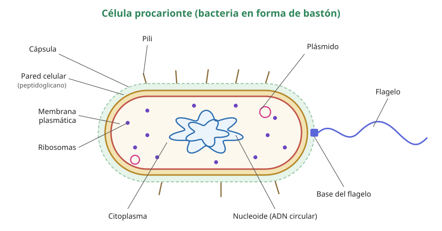
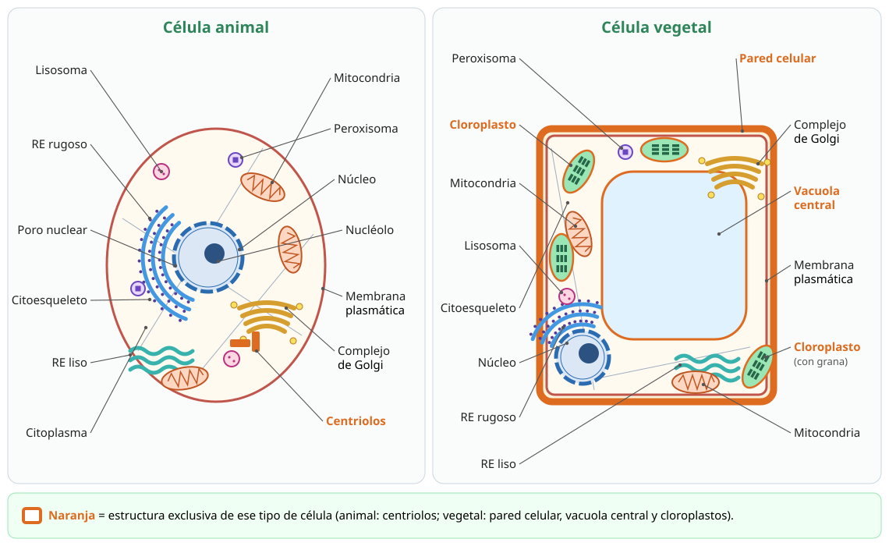
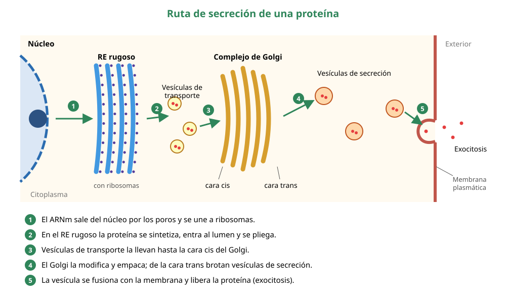
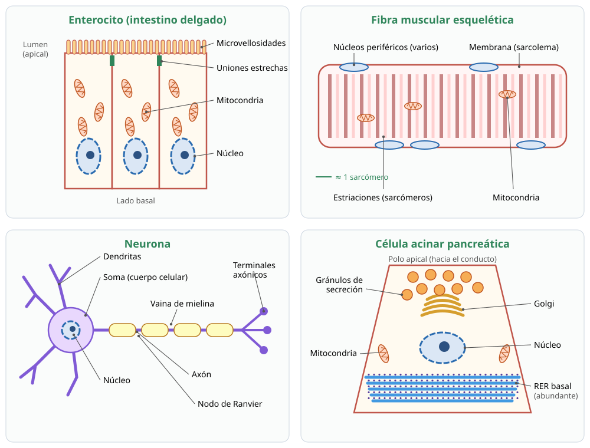

Capítulo 4: La célula: estructura, organelos y función
Área temática: Organización, estructura y actividad celular · Temario DEMRE 2027: conocimientos 1.1 y 1.2
«Toda célula proviene de otra célula.» — Rudolf Virchow, 1855
Qué vas a aprender en este capítulo
- Cómo se estudian las células: microscopios, fraccionamiento, marcaje radiactivo y fármacos inhibidores.
- La estructura de la célula procarionte y la función de cada una de sus partes.
- Cada organelo de la célula eucarionte: núcleo, nucléolo, ribosomas, retículos, complejo de Golgi, lisosomas, peroxisomas, vacuolas, mitocondrias, cloroplastos, citoesqueleto, centriolos, cilios y flagelos.
- Cómo trabajan los organelos en equipo, por ejemplo en la ruta de secreción de proteínas.
- La membrana plasmática y el transporte de sustancias.
- Por qué el enterocito, la fibra muscular esquelética, la neurona y la célula secretora pancreática tienen la forma y los organelos que tienen.
Cómo pregunta esto la PAES. El temario no pide memorizar listas de organelos. Pide analizar investigaciones: una droga que bloquea los microtúbulos, un marcador radiactivo que recorre el retículo y el Golgi, una célula que acumula H2O2. Para responder hay que saber qué hace cada organelo y razonar como en el capítulo 1: variables, controles, predicciones y conclusiones.
Cómo usar este capítulo
- Lee la teoría (secciones 1 a 10). Cada título muestra los números de sus preguntas de práctica (IA).
- Revisa los Ejemplos PAES resueltos, que muestran cómo razonar con experimentos sobre organelos.
- Mide tu avance con la Evaluación formativa (20 preguntas) y las Preguntas de práctica (124), cada una con su respuesta comentada al estilo DEMRE.
1. Conceptos claveIA:123
| Concepto | Definición breve |
|---|---|
| Célula | Unidad estructural, funcional y de origen de todos los seres vivos. |
| Procarionte | Célula sin núcleo ni organelos rodeados de membrana; su ADN está en el citoplasma (nucleoide). Bacterias y arqueas. |
| Eucarionte | Célula con núcleo rodeado por una envoltura y con organelos membranosos. Protistas, hongos, plantas y animales. |
| Organelo | Estructura interna de la célula especializada en una función, como una «oficina» con un trabajo propio. |
| Membrana plasmática | Bicapa de fosfolípidos con proteínas que rodea la célula y controla el paso de sustancias. |
| Citoplasma | Todo lo que está entre la membrana plasmática y el núcleo: el citosol (medio acuoso) y los organelos. |
| Sistema de endomembranas | Conjunto de membranas conectadas por vesículas: envoltura nuclear, retículos, complejo de Golgi, lisosomas, vacuolas y membrana plasmática. |
| Vesícula | Pequeño saco de membrana que transporta sustancias entre organelos o hacia el exterior. |
| Secreción | Liberación al exterior de sustancias producidas por la célula, como enzimas u hormonas. |
| Citoesqueleto | Red de filamentos proteicos que da forma a la célula, la mueve y transporta sus organelos. |
| Endosimbiosis | Relación en que un organismo vive dentro de otro. Explica el origen de mitocondrias y cloroplastos. |
| Transporte pasivo | Paso de sustancias a favor de su gradiente de concentración, sin gasto de energía. |
| Transporte activo | Paso de sustancias contra su gradiente, con gasto de energía (ATP). |
| Ósmosis | Difusión de agua a través de una membrana semipermeable, desde donde hay menos solutos hacia donde hay más. |
| Especialización celular | Proceso por el que una célula adquiere una forma y una dotación de organelos acordes con su función. |
2. La teoría celular y cómo se estudian las célulasIA:45
a. La teoría celularIA:678
La teoría celular es una de las ideas más importantes de la biología. Se construyó con aportes de varios investigadores:
| Año | Investigador | Aporte |
|---|---|---|
| 1665 | Robert Hooke | Observó al microscopio láminas de corcho y llamó «células» a las pequeñas cavidades que vio. En realidad eran paredes de células muertas. |
| 1674 | Anton van Leeuwenhoek | Con lentes que él mismo pulía, observó por primera vez microorganismos vivos, a los que llamó «animálculos». |
| 1838-1839 | Matthias Schleiden y Theodor Schwann | Concluyeron que todas las plantas (Schleiden) y todos los animales (Schwann) están formados por células. |
| 1855 | Rudolf Virchow | Propuso que toda célula proviene de otra célula preexistente. |
Hoy la teoría celular se resume en tres postulados:
- Todos los seres vivos están formados por una o más células. La célula es la unidad estructural.
- La célula es la unidad funcional: en ella ocurren las reacciones que mantienen la vida.
- Toda célula proviene de otra célula preexistente. La célula es la unidad de origen, y contiene la información hereditaria que se transmite a las células hijas.
La teoría celular es un buen ejemplo del capítulo 1: se construyó por inducción, a partir de miles de observaciones, y es una teoría porque explica por qué los seres vivos comparten una misma organización.
b. ¿Por qué las células son pequeñas?IA:91011
La mayoría de las células mide entre 1 y 100 micrómetros (µm; 1 µm = 0,001 mm). Una célula intercambia sustancias con su entorno a través de su superficie, pero sus necesidades dependen de su volumen. Al crecer, el volumen aumenta más rápido que la superficie:
| Arista de una célula cúbica | Superficie (6 × lado²) | Volumen (lado³) | Superficie / volumen |
|---|---|---|---|
| 1 µm | 6 µm² | 1 µm³ | 6 |
| 2 µm | 24 µm² | 8 µm³ | 3 |
| 4 µm | 96 µm² | 64 µm³ | 1,5 |
Al duplicar el tamaño, la relación superficie/volumen se reduce a la mitad: cada unidad de volumen tiene menos membrana para abastecerse. Por eso las células son pequeñas, y las que necesitan intercambiar mucho aumentan su superficie con pliegues y prolongaciones, como las microvellosidades del enterocito (sección 10).
c. Microscopios: ver lo invisibleIA:121314
| Microscopio óptico | Microscopio electrónico | |
|---|---|---|
| Qué usa | Luz visible y lentes de vidrio | Haz de electrones y lentes electromagnéticas |
| Resolución aproximada | 0,2 µm (200 nm) | Menos de 1 nm |
| Muestras | Vivas o fijadas; se pueden teñir | Siempre muertas y fijadas, en vacío |
| Qué permite ver | Células, núcleo, cloroplastos, vacuolas grandes | Detalle de organelos: crestas mitocondriales, ribosomas, membranas |
| Variantes | Microscopio de fluorescencia (marca moléculas con colorantes que emiten luz) | De transmisión (cortes finos, estructura interna) y de barrido (superficie en 3D) |
La resolución es la distancia mínima a la que dos puntos se distinguen como separados. No es lo mismo que el aumento: ampliar una imagen borrosa no revela más detalles.
d. Técnicas que aparecen en las preguntas PAESIA:151617
La PAES suele presentar un experimento de biología celular y pedir que lo interpretes. Estas son las técnicas más frecuentes:
Fraccionamiento celular y centrifugación diferencial. Se rompen las células y el homogeneizado se centrifuga a velocidades crecientes. Primero sedimentan las estructuras más grandes y densas (núcleos), luego las mitocondrias, cloroplastos, lisosomas y peroxisomas, después los fragmentos de membranas (microsomas) y al final los ribosomas. Así se obtienen fracciones ricas en un organelo, para estudiar su composición y actividad por separado.
Marcaje radiactivo y autorradiografía. Se entrega a las células una molécula con un átomo radiactivo, por ejemplo un aminoácido con tritio (3H), y luego se detecta dónde aparece la radiactividad a distintos tiempos. Es la base del experimento de pulso y caza (sección 5.e), que reveló la ruta de las proteínas de secreción.
Marcaje fluorescente. Se unen a una proteína colorantes o proteínas fluorescentes, como la GFP de una medusa, para seguir su ubicación en células vivas con el microscopio de fluorescencia.
Fármacos inhibidores. Una sustancia que bloquea una estructura específica permite deducir su función a partir de lo que deja de ocurrir. Algunos ejemplos:
| Sustancia | Qué bloquea | Qué se observa |
|---|---|---|
| Colchicina, nocodazol | Formación de microtúbulos | La división celular se detiene en metafase; el transporte de vesículas se altera |
| Citocalasina | Formación de microfilamentos de actina | Se altera el movimiento ameboideo y la contracción del anillo en la citocinesis |
| Brefeldina A | Transporte de vesículas del retículo al Golgi | Las proteínas de secreción se acumulan en el retículo endoplasmático rugoso |
| Cicloheximida | Síntesis de proteínas en ribosomas eucariontes | No se fabrican proteínas nuevas |
| Cianuro | Cadena respiratoria de la mitocondria | Cae la producción de ATP y se detienen los procesos que la necesitan |
Cómo razonar con un inhibidor. Si una droga bloquea X y observas que se detiene el proceso Y, la conclusión es que Y depende de X. Pero ojo con el sobre-alcance: no demuestra que X participe solo en Y.
3. La célula procarionteIA:181920
Los procariontes (del griego pro, «antes», y karyon, «núcleo») son las células más antiguas y más abundantes del planeta. Incluyen dos grandes grupos: las bacterias y las arqueas. Son pequeñas (en general entre 1 y 5 µm), no tienen núcleo y carecen de organelos rodeados de membrana. Aun así, son muy eficientes: se dividen rápido, habitan casi cualquier ambiente y pueden tener metabolismos que ningún eucarionte posee.

a. Estructuras de la célula procarionteIA:212223
| Estructura | Descripción | Función |
|---|---|---|
| Cápsula | Capa externa de polisacáridos, viscosa; no está en todas las bacterias | Protege de la desecación y de las defensas del hospedero (dificulta la fagocitosis); permite adherirse a superficies |
| Pared celular | Capa rígida por fuera de la membrana. En bacterias está formada por peptidoglicano | Da forma y evita que la célula estalle por la entrada de agua (lisis osmótica) |
| Membrana plasmática | Bicapa de fosfolípidos con proteínas | Controla el paso de sustancias; en ella ocurren la respiración celular y, en algunas bacterias, la fotosíntesis |
| Citoplasma | Medio acuoso con enzimas, ribosomas e inclusiones | Lugar de la mayoría de las reacciones metabólicas |
| Nucleoide | Región del citoplasma donde está el cromosoma, en general una molécula de ADN circular, sin envoltura | Contiene la información genética esencial |
| Plásmidos | Pequeñas moléculas de ADN circular, independientes del cromosoma | Portan genes accesorios, como los de resistencia a antibióticos; se pueden transferir entre bacterias |
| Ribosomas 70S | Más pequeños que los eucariontes (80S) | Síntesis de proteínas |
| Flagelo bacteriano | Filamento proteico que gira como una hélice, impulsado por un «motor» en la membrana | Desplazamiento |
| Pili (fimbrias) | Filamentos cortos y numerosos de la superficie | Adherencia a superficies y células; el pilus sexual participa en la conjugación (transferencia de plásmidos) |
Errores frecuentes
- Los procariontes sí tienen ribosomas; lo que no tienen son organelos membranosos. Los ribosomas no tienen membrana.
- Los procariontes sí tienen ADN, pero no dentro de un núcleo.
- El flagelo bacteriano no tiene la estructura 9 + 2 de microtúbulos del flagelo eucarionte. Es otra proteína (flagelina) y funciona girando, no ondulando.
b. La pared bacteriana y los antibióticosIA:242526
La pared de peptidoglicano es exclusiva de las bacterias, y eso la vuelve un blanco ideal para los antibióticos. La penicilina impide que se formen los enlaces del peptidoglicano: la bacteria que crece sin una pared sólida absorbe agua por ósmosis y estalla. Las células humanas no tienen pared, así que no se ven afectadas.
Según su pared, las bacterias se clasifican con la tinción de Gram:
| Gram positivas | Gram negativas | |
|---|---|---|
| Pared | Capa gruesa de peptidoglicano | Capa delgada de peptidoglicano y una membrana externa |
| Color con la tinción | Violeta | Rosado |
| Ejemplo | Staphylococcus, Streptococcus | Escherichia coli, Salmonella |
La membrana externa de las Gram negativas actúa como barrera adicional, y por eso muchas de ellas resisten mejor algunos antibióticos.
c. Bacterias y arqueasIA:272829
Aunque se parecen al microscopio, las arqueas y las bacterias son dominios distintos:
- las arqueas no tienen peptidoglicano en su pared y sus membranas tienen lípidos diferentes;
- muchas viven en ambientes extremos: aguas termales, salares o fondos marinos sin oxígeno. En Chile se han estudiado en el salar de Atacama y en los géiseres del Tatio;
- en varios aspectos moleculares, como su maquinaria para leer el ADN, las arqueas se parecen más a los eucariontes que a las bacterias.
Los tres dominios de la vida. Carl Woese propuso en 1990, a partir de la comparación del ARN de los ribosomas, clasificar a los seres vivos en tres dominios: Bacteria, Archaea y Eukarya. Este sistema reemplazó a la división en cinco reinos como el nivel más amplio de clasificación. Es un ejemplo de cómo una técnica nueva, la secuenciación, cambia un modelo científico.
4. La célula eucarionte: núcleo y ribosomasIA:303132
La célula eucarionte (del griego eu, «verdadero», y karyon, «núcleo») es en general de 10 a 100 veces más grande que una procarionte. Resuelve el problema de su tamaño dividiendo el trabajo en compartimentos: sus organelos rodeados de membrana permiten que reacciones incompatibles ocurran al mismo tiempo en lugares distintos. Por ejemplo, la digestión con enzimas muy ácidas ocurre dentro del lisosoma, sin dañar el resto de la célula.

a. El núcleoIA:333435
El núcleo es el centro de control de la célula: guarda el ADN y regula qué genes se expresan.
| Componente | Estructura | Función |
|---|---|---|
| Envoltura nuclear | Doble membrana; la membrana externa se continúa con el retículo endoplasmático rugoso | Separa el ADN del citoplasma |
| Poros nucleares | Complejos de proteínas que atraviesan la envoltura | Controlan el tránsito entre núcleo y citoplasma: salen ARN mensajeros y subunidades de ribosomas; entran proteínas, como las enzimas que copian el ADN |
| Cromatina | ADN asociado a proteínas llamadas histonas | Almacena la información genética. Se compacta en cromosomas visibles durante la división celular (capítulo 6) |
| Nucléolo | Zona densa dentro del núcleo, sin membrana | Fabrica el ARN ribosomal y ensambla las subunidades de los ribosomas |
| Nucleoplasma | Medio interno del núcleo | Contiene enzimas y nucleótidos |
Dato útil para las preguntas: las células que fabrican muchas proteínas, como las células pancreáticas, los linfocitos activados o las neuronas, suelen tener nucléolos grandes o numerosos, porque necesitan muchos ribosomas. Si una droga destruye el nucléolo, la célula deja de formar ribosomas nuevos y, con el tiempo, disminuye su síntesis de proteínas.
b. Los ribosomasIA:363738
Los ribosomas son complejos de ARN ribosomal y proteínas, formados por dos subunidades, una mayor y una menor. No tienen membrana, por lo que están presentes tanto en procariontes como en eucariontes. Su función es sintetizar proteínas traduciendo la información del ARN mensajero.
En la célula eucarionte hay dos poblaciones de ribosomas, iguales en estructura, pero que fabrican proteínas con destinos distintos:
| Ribosomas libres en el citosol | Ribosomas unidos al retículo endoplasmático |
|---|---|
| Fabrican proteínas que se quedan en el citosol o que van al núcleo, a las mitocondrias, a los cloroplastos o a los peroxisomas | Fabrican proteínas que se exportan (secreción), que forman parte de la membrana o que van a los lisosomas |
| Ejemplo: enzimas de la glucólisis, actina | Ejemplo: insulina, enzimas digestivas, receptores de membrana |
Lo que decide dónde termina un ribosoma es la proteína que está fabricando: si esa proteína comienza con una secuencia «señal», el ribosoma se ancla al retículo y la proteína entra en él a medida que se sintetiza.
5. El sistema de endomembranasIA:394041
El sistema de endomembranas es un conjunto de organelos que trabajan conectados, ya sea directamente o mediante vesículas que viajan de uno a otro. Lo forman la envoltura nuclear, el retículo endoplasmático, el complejo de Golgi, los lisosomas, las vacuolas y la membrana plasmática. Juntos fabrican, modifican, empaquetan y distribuyen proteínas y lípidos.
a. Retículo endoplasmático rugoso (RER)IA:424344
Es una red de sacos aplanados (cisternas) conectada con la envoltura nuclear, con ribosomas adheridos a su cara externa. Por eso se ve «rugoso» al microscopio electrónico.
- Síntesis de proteínas de secreción, de membrana y de lisosomas: la proteína recién fabricada entra al interior del retículo, el lumen.
- Plegamiento y control de calidad: las proteínas mal plegadas se retienen y se degradan.
- Inicio de la glicosilación: se añaden cadenas de azúcares a muchas proteínas, formando glicoproteínas.
- Envío al Golgi en vesículas de transporte.
b. Retículo endoplasmático liso (REL)IA:454647
Es una red de túbulos sin ribosomas, continua con el RER. Sus funciones dependen del tipo celular:
| Función | Dónde destaca |
|---|---|
| Síntesis de lípidos: fosfolípidos de membrana, colesterol y hormonas esteroidales | Células de las gónadas y de la corteza suprarrenal |
| Detoxificación de fármacos, alcohol y otras sustancias, con enzimas que las hacen más solubles para eliminarlas | Hepatocitos (células del hígado). El consumo repetido de alcohol o de algunos fármacos aumenta la cantidad de REL |
| Almacenamiento de calcio (Ca2+) | Fibras musculares, donde se llama retículo sarcoplásmico y libera Ca2+ para la contracción |
| Metabolismo del glicógeno | Hepatocitos |
c. Complejo de GolgiIA:484950
Es una pila de cisternas aplanadas, no conectadas entre sí, con dos caras:
- la cara cis, orientada hacia el retículo, recibe las vesículas que llegan del RER;
- la cara trans, orientada hacia la membrana plasmática, despacha las vesículas hacia su destino.
Mientras las proteínas avanzan de cis a trans, el Golgi las modifica: termina la glicosilación, les agrega otros grupos químicos y las clasifica con «etiquetas» según su destino, que puede ser la membrana plasmática, los lisosomas o la secreción. En las células vegetales el Golgi además fabrica polisacáridos de la pared celular.
Una analogía útil: si la célula fuera una fábrica, el RER sería la línea de producción, el Golgi el centro de empaque y despacho, las vesículas los camiones de reparto y la membrana plasmática la puerta de salida.
d. Lisosomas, vacuolas y la digestión celularIA:515253
Lisosomas. Son vesículas rodeadas de membrana que contienen enzimas hidrolíticas, capaces de digerir proteínas, lípidos, polisacáridos y ácidos nucleicos. Estas enzimas funcionan mejor a pH ácido, cercano a 5, que el lisosoma mantiene bombeando protones (H+) hacia su interior. El citosol tiene pH cercano a 7,2, así que si una enzima escapa pierde casi toda su actividad: es una protección para la célula. Los lisosomas se forman a partir del Golgi y cumplen varias funciones:
- Digestión de partículas ingeridas (heterofagia): una vesícula formada por fagocitosis se fusiona con un lisosoma. Así destruyen bacterias los macrófagos y los neutrófilos.
- Autofagia: digieren organelos dañados o viejos de la propia célula y reciclan sus componentes.
- Autólisis: en ciertos procesos del desarrollo, liberan sus enzimas y la célula se autodestruye. Por ejemplo, en la reabsorción de la cola del renacuajo.
Enfermedades lisosomales. Si falta una sola enzima lisosomal, su sustrato se acumula dentro de los lisosomas y daña la célula. En la enfermedad de Tay-Sachs se acumula un lípido en las neuronas por falta de una enzima, lo que provoca un daño neurológico grave. Es un buen ejemplo de relación entre estructura, función y enfermedad.
Vacuolas. Son sacos membranosos con funciones variadas:
- la vacuola central de las células vegetales puede ocupar hasta el 80 % del volumen celular. Almacena agua, iones, pigmentos y desechos, y su presión contra la pared (turgencia) mantiene firme a la planta;
- las vacuolas contráctiles de protistas de agua dulce, como el paramecio, expulsan el exceso de agua que entra por ósmosis;
- las vacuolas alimenticias se forman por fagocitosis.
e. La ruta de secreción: el experimento de pulso y cazaIA:545556
¿Cómo se supo que las proteínas de secreción recorren el camino RER → Golgi → vesículas → membrana? Lo demostraron James Jamieson y George Palade con un experimento clásico publicado en 1967. Por estos trabajos Palade recibió el Premio Nobel de Medicina en 1974.
Modelo experimental. Usaron cortes de páncreas de cobayo, formados principalmente por células acinares, que fabrican grandes cantidades de enzimas digestivas y las secretan. Así casi todas las proteínas que sintetizan siguen la ruta de secreción.
Procedimiento:
- Pulso. Durante 3 minutos entregaron a las células un aminoácido radiactivo (leucina marcada con tritio). Solo las proteínas fabricadas en ese breve lapso quedaron marcadas.
- Caza. Luego reemplazaron el medio por uno con leucina no radiactiva en exceso. Las proteínas nuevas ya no se marcaban, así que se podía «perseguir» el grupo marcado.
- A distintos tiempos fijaron muestras y localizaron la radiactividad con autorradiografía al microscopio electrónico.
Resultados, en forma simplificada:
| Tiempo después del pulso | Dónde estaba la mayor parte de la radiactividad |
|---|---|
| 3 minutos | Retículo endoplasmático rugoso |
| ≈ 20 minutos | Complejo de Golgi |
| ≈ 40 minutos | Vacuolas de condensación, en la cara trans del Golgi |
| ≈ 2 horas | Gránulos de secreción (gránulos de zimógeno), cerca de la membrana apical |
Conclusión. Las proteínas de secreción se sintetizan en el RER, pasan al Golgi y se empaquetan en vesículas que se fusionan con la membrana plasmática para liberar su contenido por exocitosis.

Razonar con datos de pulso y caza
Supón que repites el experimento, pero agregas una droga que impide la salida de vesículas desde el RER. ¿Dónde estará la radiactividad después de 2 horas?
Respuesta: seguirá en el RER, porque las proteínas marcadas no pueden avanzar al Golgi. Es exactamente el efecto de la brefeldina A. En la prueba PAES de invierno de 2027 apareció una tabla con este tipo de resultados, en la que además la baja temperatura dejaba las proteínas detenidas en el Golgi.
6. Organelos que transforman energía: mitocondrias, cloroplastos y peroxisomasIA:5758
a. MitocondriasIA:596061
Las mitocondrias están en casi todas las células eucariontes, tanto animales como vegetales. En ellas ocurre la respiración celular aeróbica, que extrae la energía química de los nutrientes, como la glucosa y los ácidos grasos, y la guarda en moléculas de ATP, la «moneda energética» de la célula (capítulo 10).
| Parte | Descripción | Qué ocurre ahí |
|---|---|---|
| Membrana externa | Lisa y permeable a moléculas pequeñas | Límite del organelo |
| Espacio intermembrana | Entre las dos membranas | Se acumulan protones (H+) bombeados desde la matriz |
| Membrana interna | Muy plegada en crestas, que aumentan su superficie | Cadena respiratoria y síntesis de la mayor parte del ATP |
| Matriz | Interior de la mitocondria | Ciclo de Krebs; contiene ADN circular propio y ribosomas parecidos a los bacterianos |
Relación estructura-función: mientras más energía gasta una célula, más mitocondrias tiene y más crestas presentan estas. Las fibras musculares, las neuronas, los espermatozoides (en la pieza intermedia) y las células del túbulo renal tienen muchas mitocondrias. Una pregunta PAES puede darte el número de mitocondrias de varios tipos celulares y pedirte inferir cuál tiene mayor gasto energético.
b. CloroplastosIA:626364
Están en las células de las plantas y las algas que hacen fotosíntesis: transforman la energía de la luz en energía química y la guardan en moléculas orgánicas como la glucosa, a partir de CO2 y agua.
| Parte | Descripción | Qué ocurre ahí |
|---|---|---|
| Doble membrana (externa e interna) | Rodea el organelo | Límite y control del intercambio |
| Tilacoides | Sacos aplanados que se apilan formando grana (singular granum) | En su membrana está la clorofila: captan la luz y producen ATP y NADPH (etapa fotoquímica) |
| Estroma | Líquido que rodea los tilacoides | Fijación del CO2 y síntesis de glucosa (ciclo de Calvin); tiene ADN circular y ribosomas propios |
Los cloroplastos son un tipo de plastidio. Otros plastidios son los amiloplastos, que almacenan almidón y abundan en la papa, y los cromoplastos, que acumulan pigmentos amarillos o rojos en frutos y flores.
c. PeroxisomasIA:656667
Son vesículas pequeñas rodeadas de una sola membrana, con enzimas oxidativas:
- oxidan ácidos grasos de cadena larga para usarlos como combustible;
- desintoxican sustancias dañinas, por ejemplo parte del alcohol en el hígado;
- estas reacciones producen peróxido de hidrógeno (H2O2), que es tóxico. El mismo peroxisoma lo descompone gracias a la enzima catalasa: 2 H2O2 → 2 H2O + O2.
Pista para la PAES: si un experimento muestra que una sustancia provoca acumulación de H2O2 en una célula, el organelo afectado más probable es el peroxisoma. Una pregunta de la prueba oficial de invierno de 2027 se basa exactamente en esto. Los peroxisomas abundan en los hepatocitos y en las células renales. Además, no son lisosomas: los lisosomas digieren con hidrolasas a pH ácido, mientras que los peroxisomas oxidan y producen H2O2.
d. La teoría endosimbióticaIA:686970
¿Por qué mitocondrias y cloroplastos tienen su propio ADN? La bióloga estadounidense Lynn Margulis desarrolló en 1967 la teoría endosimbiótica, que propone lo siguiente:
- Hace más de 1500 millones de años, una célula de mayor tamaño englobó a una bacteria capaz de usar oxígeno, sin digerirla.
- La bacteria siguió viviendo en su interior en una relación de beneficio mutuo: aportaba energía y recibía protección y nutrientes. Con el tiempo se convirtió en la mitocondria.
- Más tarde, en el linaje de las algas y las plantas, otra célula incorporó una cianobacteria fotosintética, que dio origen al cloroplasto.
Evidencias que apoyan la teoría:
| Evidencia | Por qué apoya la teoría |
|---|---|
| Tienen ADN circular propio, parecido al de las bacterias | Las bacterias tienen un cromosoma circular; el núcleo eucarionte, cromosomas lineales |
| Tienen ribosomas propios, similares a los bacterianos (70S) | Algunos antibióticos que bloquean ribosomas bacterianos también afectan a los mitocondriales |
| Se dividen por sí mismos, por un proceso parecido a la fisión binaria | No se fabrican desde cero: toda mitocondria proviene de otra mitocondria |
| Tienen doble membrana | La membrana interna correspondería a la de la bacteria original y la externa, a la vesícula del englobamiento |
| Su tamaño es similar al de una bacteria | Entre 1 y 10 µm |
| La secuencia de su ADN se parece a la de bacterias actuales | El ADN mitocondrial se parece al de un grupo de bacterias (proteobacterias) y el de los cloroplastos, al de las cianobacterias |
Esta teoría es un excelente ejemplo del capítulo 1: es una teoría porque explica el origen de estos organelos, y lo que la sustenta son evidencias, es decir, datos observables. La PAES puede pedirte distinguir entre la teoría y sus evidencias, o elegir qué observación la apoya.
7. Citoesqueleto, centriolos, cilios y flagelosIA:7172
a. El citoesqueletoIA:737475
El citoesqueleto es una red dinámica de filamentos de proteína que recorre el citoplasma. A diferencia de un esqueleto óseo, se arma y desarma constantemente según lo que la célula necesita. Cumple tres grandes funciones: dar forma y resistencia a la célula, moverla y transportar organelos y vesículas en su interior.
| Tipo | Grosor | Proteína | Funciones principales |
|---|---|---|---|
| Microfilamentos | ≈ 7 nm (los más delgados) | Actina | Forma de la superficie celular; movimiento ameboideo (pseudópodos); contracción muscular junto con la miosina; anillo que divide el citoplasma en la citocinesis; soporte de las microvellosidades |
| Filamentos intermedios | ≈ 8-10 nm | Varias: queratina, vimentina, laminas nucleares | Resistencia mecánica a la tensión; anclan el núcleo; forman la lámina nuclear. Son los más estables |
| Microtúbulos | ≈ 25 nm (los más gruesos) | Tubulina | Forman tubos huecos que sirven de «rieles» para el transporte de vesículas y organelos; forman el huso mitótico que separa los cromosomas; forman centriolos, cilios y flagelos |
Proteínas motoras. Las vesículas no se mueven solas: las arrastran proteínas motoras que «caminan» sobre los microtúbulos gastando ATP. La quinesina lleva su carga hacia la periferia de la célula y la dineína, hacia el centro. Sobre los microfilamentos actúa la miosina.
Cómo pregunta esto la PAES: si una droga impide formar microtúbulos (como la colchicina o el nocodazol), predice que:
- la célula no podrá formar el huso y la división se detendrá;
- las vesículas no llegarán a la membrana, así que disminuirá la secreción;
- los cilios y flagelos no se podrán formar ni mantener.
Si la droga afecta los microfilamentos de actina, como la citocalasina, predice problemas en el desplazamiento celular (los macrófagos no podrán moverse ni fagocitar), en la contracción y en la citocinesis.
b. Centrosoma y centriolosIA:767778
El centrosoma es la zona cercana al núcleo donde se organizan los microtúbulos de la célula. En las células animales contiene un par de centriolos, cilindros perpendiculares entre sí formados por 9 tripletes de microtúbulos. Antes de la división celular, el centrosoma se duplica y cada copia va a un polo de la célula para organizar el huso mitótico.
Las células vegetales no tienen centriolos, pero igual forman el huso a partir de otros centros organizadores de microtúbulos.
c. Cilios y flagelos eucariontesIA:798081
Son prolongaciones de la membrana plasmática con un armazón interno de microtúbulos, el axonema, organizado en el patrón 9 + 2: nueve pares de microtúbulos en la periferia y dos microtúbulos centrales. Nacen de un cuerpo basal, que tiene la misma estructura que un centriolo (9 tripletes).
El movimiento se produce porque los brazos de dineína hacen deslizar unos pares de microtúbulos sobre otros, usando ATP. Como los pares están unidos entre sí, en vez de deslizarse la estructura se curva, y el cilio o flagelo ondula.
| Cilios | Flagelos | |
|---|---|---|
| Número | Muchos por célula | Uno o pocos por célula |
| Largo | Cortos | Largos |
| Movimiento | Como remos, coordinados | Ondulatorio |
| Ejemplos | Epitelio de la tráquea, que arrastra el mucus con partículas; oviductos, que movilizan el ovocito; paramecio | Espermatozoide |
Una evidencia desde la medicina. En el síndrome de Kartagener los brazos de dineína no funcionan. Las personas afectadas tienen infecciones respiratorias frecuentes, porque sus cilios no limpian las vías aéreas, y los hombres suelen ser infértiles, porque sus espermatozoides no nadan. Que una sola alteración afecte a la vez a cilios y flagelos es una evidencia de que ambos comparten la misma estructura.
8. Pared celular y comparación entre tipos de célulasIA:8283
a. La pared celular vegetalIA:848586
Las células vegetales están rodeadas por una pared de celulosa, por fuera de la membrana plasmática. Las fibras de celulosa, un polisacárido, forman una malla muy resistente, reforzada con otros polisacáridos.
- Pared primaria: es delgada y flexible, y permite que la célula joven crezca.
- Pared secundaria: se deposita por dentro de la primaria cuando la célula deja de crecer. Es más gruesa y a veces está impregnada de lignina, que la endurece, como en la madera.
- Lámina media: capa rica en pectinas que une las paredes de células vecinas.
- Plasmodesmos: canales que atraviesan las paredes y conectan el citoplasma de células vecinas.
Funciones: da forma y soporte, protege, y resiste la presión del agua. Cuando la vacuola se llena, empuja la membrana contra la pared y la célula queda turgente, sin estallar.
No todas las paredes son iguales. Tienen pared celular las plantas (de celulosa), los hongos (de quitina) y las bacterias (de peptidoglicano). Las células animales no tienen pared: en su lugar tienen una matriz extracelular de proteínas como el colágeno, que las une y les da soporte.
b. Célula procarionte y eucarionteIA:878889
| Característica | Procarionte | Eucarionte |
|---|---|---|
| Tamaño habitual | 1-5 µm | 10-100 µm |
| Núcleo | No; ADN en el nucleoide | Sí, con envoltura de doble membrana |
| ADN | Generalmente un cromosoma circular, más plásmidos | Varios cromosomas lineales asociados a histonas |
| Organelos membranosos | No | Sí: retículos, Golgi, lisosomas, mitocondrias, etc. |
| Ribosomas | Sí, 70S | Sí, 80S en el citosol (y 70S en mitocondrias y cloroplastos) |
| Pared celular | Casi siempre (peptidoglicano en bacterias) | Solo en plantas, hongos y algunos protistas |
| Citoesqueleto | Proteínas parecidas, más simples | Complejo: microfilamentos, intermedios y microtúbulos |
| Flagelo | Gira; sin patrón 9 + 2 | Ondula; patrón 9 + 2 de microtúbulos |
| División | Fisión binaria | Mitosis y meiosis |
| Ejemplos | Bacterias y arqueas | Protistas, hongos, plantas y animales |
Lo que comparten todas las células: membrana plasmática, citoplasma, ribosomas y ADN como material genético.
c. Célula animal y célula vegetalIA:909192
| Estructura | Célula animal | Célula vegetal |
|---|---|---|
| Pared celular de celulosa | No | Sí |
| Cloroplastos | No | Sí (en las partes verdes) |
| Vacuola | Pequeñas y numerosas, o ausentes | Vacuola central grande |
| Centriolos | Sí | No |
| Lisosomas | Sí, abundantes | Escasos; su función la cumple en parte la vacuola |
| Forma | Variable, a menudo redondeada | Más regular, poliédrica, por la pared |
| Reserva de glúcidos | Glicógeno | Almidón |
| Mitocondrias, RER, REL, Golgi, núcleo, peroxisomas y citoesqueleto | Sí | Sí |
Error típico: creer que las plantas no tienen mitocondrias «porque ya tienen cloroplastos». Las células vegetales tienen ambos: el cloroplasto fabrica glucosa y la mitocondria la usa para obtener ATP. Las raíces, que no hacen fotosíntesis, dependen por completo de sus mitocondrias.
9. La membrana plasmática y el transporte de sustanciasIA:9394
a. El modelo de mosaico fluidoIA:959697
La membrana plasmática es una bicapa de fosfolípidos. Cada fosfolípido tiene una «cabeza» hidrofílica, que se orienta hacia el agua (el medio externo y el citosol), y dos «colas» hidrofóbicas, que quedan escondidas en el interior de la bicapa. Así la membrana forma una barrera que las sustancias polares y los iones no atraviesan con facilidad.
En 1972, Singer y Nicolson describieron la membrana como un mosaico fluido:
- mosaico, porque en la bicapa hay incrustadas muchas proteínas distintas: canales, transportadores, receptores, enzimas y proteínas de reconocimiento;
- fluido, porque lípidos y proteínas se desplazan lateralmente. Frye y Edidin lo demostraron en 1970: fusionaron una célula de ratón con una humana, cada una con sus proteínas de membrana marcadas con un color fluorescente distinto, y en menos de una hora los colores estaban mezclados en toda la superficie. Cuando repitieron el experimento en frío, la mezcla fue mucho más lenta.
Otros componentes: el colesterol, en células animales, regula la fluidez. Los glicolípidos y las glicoproteínas, con cadenas de azúcares hacia el exterior, forman el glicocálix, que participa en el reconocimiento entre células, por ejemplo en los grupos sanguíneos.
Factores que aumentan la fluidez: mayor temperatura y más ácidos grasos insaturados, cuyos «codos» impiden que las colas se empaqueten. El colesterol amortigua los cambios: a temperatura alta frena la fluidez y a temperatura baja evita que la membrana se endurezca.
b. Transporte pasivo: a favor del gradiente, sin gasto de ATPIA:9899100
Las sustancias se mueven espontáneamente desde donde están más concentradas hacia donde están menos concentradas. Esa diferencia de concentración se llama gradiente.
| Tipo | Cómo ocurre | Qué pasa por esta vía |
|---|---|---|
| Difusión simple | Atravesando directamente la bicapa | Moléculas pequeñas y apolares: O2, CO2, hormonas esteroidales |
| Difusión facilitada por canales | Por un poro proteico específico, que puede abrirse o cerrarse | Iones (Na+, K+, Ca2+, Cl-); agua por las acuaporinas |
| Difusión facilitada por transportadores | La proteína une la sustancia y cambia de forma para pasarla | Glucosa y aminoácidos. Puede saturarse: cuando todos los transportadores están ocupados, la velocidad deja de aumentar |
| Ósmosis | Difusión de agua a través de una membrana semipermeable, en gran parte por acuaporinas | El agua pasa hacia el lado con mayor concentración de solutos |
Gráfico típico en la PAES: en la difusión simple, la velocidad de entrada aumenta en línea recta con la concentración. En la difusión facilitada, aumenta y luego forma una meseta, porque los transportadores se saturan. Si ves una meseta, piensa en proteínas transportadoras.
c. Ósmosis y tonicidadIA:101102103
La tonicidad compara la concentración de solutos del medio con la del interior de la célula:
| Medio | Hacia dónde va el agua | Célula animal (glóbulo rojo) | Célula vegetal |
|---|---|---|---|
| Hipotónico (menos solutos que la célula) | Entra a la célula | Se hincha y puede estallar (lisis) | Queda turgente: la pared impide que estalle |
| Isotónico (igual concentración) | Entra y sale por igual; no hay cambio neto | Normal | Flácida |
| Hipertónico (más solutos que la célula) | Sale de la célula | Se arruga (crenación) | La membrana se despega de la pared (plasmólisis) |
Por eso los sueros que se inyectan en la sangre son isotónicos, como el suero fisiológico al 0,9 % de NaCl. Y por eso las plantas se marchitan en suelos muy salinos: el agua sale de sus células.
d. Transporte activo: contra el gradiente, con gasto de ATPIA:104105106
Cuando la célula necesita acumular una sustancia en el lado donde ya está más concentrada, debe gastar energía.
- Bomba de sodio y potasio (Na+/K+): por cada ATP que usa, saca 3 Na+ y mete 2 K+. Mantiene el sodio alto afuera y el potasio alto adentro, lo que es indispensable para el impulso nervioso (capítulo 11) y para regular el volumen celular. Puede consumir una fracción muy grande del ATP de una neurona en reposo.
- Transporte activo secundario (cotransporte): usa el gradiente de Na+ creado por la bomba para ingresar otra sustancia contra su gradiente. Así el enterocito absorbe glucosa junto con Na+ (sección 10).
Evidencia experimental de transporte activo: si al agregar cianuro, que bloquea la producción de ATP en la mitocondria, se detiene la entrada de una sustancia, esa entrada dependía del ATP y era transporte activo. Si la entrada sigue igual, era pasiva.
e. Transporte en masa: endocitosis y exocitosisIA:107108109
Para moléculas muy grandes o partículas, la célula usa vesículas, con gasto de energía:
- Endocitosis: la membrana envuelve el material y forma una vesícula hacia adentro.
- Fagocitosis («comer célula»): captura de partículas grandes o microorganismos. La realizan los macrófagos y los neutrófilos.
- Pinocitosis («beber célula»): captura de gotitas de líquido extracelular.
- Endocitosis mediada por receptor: captura selectiva de moléculas que se unen a receptores específicos. Así ingresa el colesterol unido a LDL; si el receptor falla, el colesterol se acumula en la sangre (hipercolesterolemia familiar).
- Exocitosis: una vesícula se fusiona con la membrana plasmática y libera su contenido al exterior. Así se secretan enzimas digestivas, hormonas como la insulina, neurotransmisores y mucus.
10. Relación entre estructura y función: cuatro tipos celularesIA:110111112
En un organismo pluricelular todas las células tienen el mismo ADN, pero se especializan: cada tipo celular expresa genes distintos y desarrolla la forma y los organelos que su función necesita. El temario DEMRE 2027 pide analizar cuatro casos. La regla general es simple: la célula tiene más de aquello que más usa.

a. Enterocito: especialista en absorberIA:113114115
Los enterocitos son las células que recubren las vellosidades del intestino delgado. Su función es absorber los nutrientes ya digeridos y pasarlos a la sangre.
| Estructura | Relación con la función |
|---|---|
| Microvellosidades en la cara que da al intestino (el «borde en cepillo»), sostenidas por microfilamentos de actina | Aumentan enormemente la superficie de absorción. Pliegues del intestino, vellosidades y microvellosidades se suman y multiplican la superficie cientos de veces |
| Enzimas en la membrana del borde en cepillo (lactasa, sacarasa, peptidasas) | Terminan la digestión justo donde se absorbe |
| Proteínas transportadoras, distintas en la cara apical y en la basal | La célula está polarizada: por arriba entran los nutrientes y por abajo salen hacia la sangre |
| Abundantes mitocondrias | Aportan el ATP de la bomba Na+/K+, que mantiene el gradiente usado para ingresar glucosa y aminoácidos por cotransporte |
| Uniones estrechas entre células vecinas | Sellan el espacio entre enterocitos: todo lo absorbido debe pasar a través de las células, lo que permite controlarlo |
| REL desarrollado | Rearma los triglicéridos a partir de los ácidos grasos absorbidos |
Dato conectado: la intolerancia a la lactosa se produce cuando los enterocitos del adulto fabrican poca lactasa, la enzima del borde en cepillo que digiere el azúcar de la leche. La lactosa no digerida llega al intestino grueso, donde la fermentan las bacterias.
b. Fibra muscular esquelética: especialista en contraerseIA:116117118
Una célula muscular esquelética, o fibra muscular, es alargada, puede medir varios centímetros y es multinucleada, porque se forma por la fusión de muchas células precursoras.
| Estructura | Relación con la función |
|---|---|
| Miofibrillas llenas de filamentos de actina (delgados) y miosina (gruesos), ordenados en unidades repetidas llamadas sarcómeros | Al deslizarse la actina sobre la miosina, los sarcómeros se acortan y la fibra se contrae. Este orden le da el aspecto estriado |
| Retículo sarcoplásmico, un REL especializado | Almacena Ca2+ y lo libera cuando llega el estímulo nervioso: el calcio es la señal que inicia la contracción |
| Túbulos T, invaginaciones de la membrana | Llevan el estímulo eléctrico al interior de la fibra, para que toda ella se contraiga a la vez |
| Abundantes mitocondrias | La contracción consume grandes cantidades de ATP |
| Muchos núcleos | Permiten fabricar las proteínas que necesita una célula tan grande |
| Mioglobina y reservas de glicógeno | Guardan O2 y glucosa para producir energía |
Fibras lentas y rápidas. Las fibras lentas (oxidativas) tienen más mitocondrias y mioglobina, por lo que son rojizas y resisten la fatiga: son las que predominan en los maratonistas. Las fibras rápidas (glucolíticas) tienen menos mitocondrias y más glicógeno, y se contraen con fuerza, pero se fatigan pronto: predominan en los velocistas y los halterófilos. Es un buen ejemplo de cómo la cantidad de un organelo revela la función.
c. Neurona: especialista en comunicarIA:119120121
Las neuronas reciben estímulos, los integran y transmiten impulsos nerviosos a otras células (capítulo 11).
| Estructura | Relación con la función |
|---|---|
| Dendritas, prolongaciones cortas y ramificadas | Ofrecen una gran superficie para recibir señales de muchas neuronas |
| Soma o cuerpo celular, con el núcleo | Integra las señales; tiene un RER muy abundante (los «cuerpos de Nissl») y un Golgi desarrollado, porque fabrica muchas proteínas, entre ellas las enzimas que producen neurotransmisores |
| Axón, una prolongación larga que puede medir más de un metro | Conduce el impulso a distancia |
| Vaina de mielina formada por otras células, las células gliales | Aísla el axón y acelera la conducción del impulso |
| Microtúbulos a lo largo del axón | Rieles para el transporte axonal: llevan vesículas y proteínas desde el soma hasta los terminales |
| Terminales axónicos con muchas vesículas y mitocondrias | Liberan los neurotransmisores por exocitosis en la sinapsis. Las mitocondrias aportan la energía |
d. Célula secretora pancreática: especialista en fabricar y exportar proteínasIA:122123124
Las células acinares del páncreas producen las enzimas digestivas del jugo pancreático: amilasa, lipasa y precursores de proteasas como el tripsinógeno. Son el modelo del experimento de Palade (sección 5.e).
| Estructura | Relación con la función |
|---|---|
| RER muy abundante, ocupando gran parte de la base de la célula | Síntesis masiva de enzimas de secreción |
| Nucléolo prominente | Produce los numerosos ribosomas que se necesitan |
| Complejo de Golgi desarrollado | Procesa y empaqueta las enzimas |
| Gránulos de secreción (de zimógeno) en la zona apical | Almacenan las enzimas inactivas hasta la señal de liberarlas; así no digieren a la propia célula |
| Polaridad: la síntesis ocurre en la base y la secreción, en el ápice | La exocitosis se dirige hacia el conducto que lleva el jugo al intestino |
Algo similar ocurre en las células beta de los islotes pancreáticos, que producen y secretan insulina por la misma ruta: RER, Golgi, vesículas y exocitosis.
Método para cualquier tipo celular: pregúntate ¿qué hace esta célula? y deduce el organelo.
| Si la célula… | …tendrá abundante |
|---|---|
| Secreta proteínas | RER y Golgi |
| Fabrica lípidos o esteroides, o detoxifica | REL |
| Gasta mucha energía | Mitocondrias |
| Fagocita y digiere | Lisosomas |
| Absorbe | Microvellosidades (superficie) |
| Se desplaza | Citoesqueleto: cilios, flagelos o microfilamentos |
Con esta tabla se resuelven muchas preguntas PAES aunque el tipo celular no aparezca en el temario, por ejemplo los macrófagos, los espermatozoides o las células de Leydig.
Ejemplos PAES resueltos
Cuatro preguntas del estilo de la PAES sobre la célula, resueltas con el guion de las «preguntas comentadas» del DEMRE. Intenta responder antes de leer la resolución.
Ejemplo 1 · Habilidad: Procesar y analizar la evidencia
Un equipo estudia el transporte de proteínas de secreción en cultivos de células pancreáticas. Marca las proteínas recién sintetizadas con un aminoácido radiactivo y, 40 minutos después, mide el porcentaje de radiactividad en tres estructuras. Algunos cultivos se tratan con una droga X.
| Condición | RER | Golgi | Vesículas de secreción |
|---|---|---|---|
| Sin droga | 10 % | 25 % | 65 % |
| Con droga X | 12 % | 83 % | 5 % |
¿Qué efecto de la droga X es coherente con estos resultados?
- A) Impide la síntesis de proteínas en los ribosomas del RER.
- B) Bloquea el paso de las proteínas desde el RER hacia el Golgi.
- C) Impide que se formen vesículas de secreción a partir del Golgi.
- D) Acelera la exocitosis de las vesículas hacia el exterior.
Resolución. Esta pregunta evalúa la habilidad de procesar y analizar la evidencia: comparar los resultados con el control para inferir un mecanismo. Sin droga, la mayor parte de la radiactividad ya llegó a las vesículas (65 %). Con la droga, casi toda queda en el Golgi (83 %) y muy poca llega a las vesículas (5 %). Las proteínas sí se fabricaron y sí pasaron del RER al Golgi, pero no salieron de él. Clave: C.
- A es incorrecta: si no hubiera síntesis, no habría proteínas radiactivas en ninguna parte, y el total sigue cerca del 100 %. Relación inexistente con los datos.
- B es incorrecta: en ese caso la radiactividad se acumularía en el RER, que casi no cambia (12 %). Es una variable equivocada: señala el organelo incorrecto.
- D es incorrecta: si la exocitosis se acelerara, no habría acumulación en el Golgi. Relación inversa con lo observado.
Qué hay que saber y saber hacer: conocer el orden RER → Golgi → vesículas → membrana, y buscar dónde se acumula la marca: la droga actúa justo después de ese punto. Dato: el mismo razonamiento sirve con temperaturas bajas, que en experimentos reales frenan el tránsito y retienen las proteínas en compartimentos intermedios.
Ejemplo 2 · Habilidad: Planificar y conducir una investigación
Una investigadora sospecha que una sustancia Q daña los peroxisomas de las células del hígado. Para ponerlo a prueba cultiva hepatocitos con y sin Q.
¿Qué variable debería medir para evaluar directamente su hipótesis?
- A) La cantidad de H2O2 acumulada dentro de las células.
- B) La cantidad de glucosa que las células captan del medio.
- C) El número de ribosomas unidos al retículo endoplasmático.
- D) La cantidad de enzimas digestivas liberadas por exocitosis.
Resolución. Esta pregunta evalúa la habilidad de planificar y conducir una investigación: elegir la variable dependiente adecuada para una hipótesis. Los peroxisomas producen H2O2 y lo degradan con la enzima catalasa. Si Q daña los peroxisomas, el H2O2 debería acumularse. Medirlo pone a prueba la hipótesis directamente. Clave: A.
- B mide la entrada de glucosa, que depende de transportadores de membrana. Variable equivocada.
- C mide un rasgo del RER, que se relaciona con la síntesis de proteínas. Variable equivocada.
- D mide la secreción. Además, los hepatocitos no secretan enzimas digestivas. Verdadero pero irrelevante: es una función de otras células.
Qué hay que saber y saber hacer: asociar cada organelo con un producto medible de su actividad y elegir el que responde la hipótesis. Dato: en la prueba oficial de invierno de 2027 apareció el razonamiento inverso: a partir de la acumulación de H2O2, identificar qué pregunta guiaba el estudio.
Ejemplo 3 · Habilidad: Procesar y analizar la evidencia
Se colocaron trozos de papa de igual masa inicial en soluciones de sacarosa de distinta concentración. Después de 2 horas se registró el cambio de masa:
| Sacarosa (mol/L) | 0 | 0,2 | 0,4 | 0,6 | 0,8 |
|---|---|---|---|---|---|
| Cambio de masa (%) | +18 | +7 | −2 | −11 | −19 |
¿Cuál de las siguientes conclusiones se desprende de estos datos?
- A) Las células de papa son isotónicas con una solución cercana a 0,35 mol/L.
- B) Las células de papa ganan agua en todas las soluciones de sacarosa.
- C) La papa absorbe sacarosa en las soluciones de mayor concentración.
- D) Las células de papa estallan en agua pura porque pierden su pared.
Resolución. Esta pregunta evalúa la habilidad de procesar y analizar la evidencia: identificar un patrón e interpolar. Si la masa aumenta, entró agua y la solución era hipotónica para las células. Si disminuye, salió agua y era hipertónica. El cambio pasa de positivo (+7 % a 0,2 mol/L) a negativo (−2 % a 0,4 mol/L), así que la concentración sin cambio de masa, la isotónica, está entre ambas y más cerca de 0,4: alrededor de 0,35 mol/L. Clave: A.
- B es incorrecta: desde 0,4 mol/L la masa disminuye. Sobre-alcance.
- C es incorrecta: la pérdida de masa indica salida de agua, no entrada de sacarosa. Relación inversa.
- D es incorrecta: las células vegetales no estallan, gracias a la pared, y los datos no muestran destrucción celular. Relación inexistente.
Qué hay que saber y saber hacer: relacionar la ganancia y la pérdida de masa con el movimiento del agua por ósmosis, y estimar el punto isotónico donde el cambio es cero. Dato: un gráfico de cambio de masa según concentración corta el eje X justo en la concentración isotónica.
Ejemplo 4 · Habilidad: Evaluar
Un estudiante observó al microscopio óptico células de la raíz de una cebolla y no encontró cloroplastos. Concluyó: «Las células vegetales no tienen cloroplastos».
¿Cuál es la principal limitación de esta conclusión?
- A) Generaliza a todas las células vegetales a partir de un tejido que no hace fotosíntesis.
- B) El microscopio óptico no permite ver los cloroplastos por su pequeño tamaño.
- C) Las células de la cebolla no son células vegetales, sino de un hongo.
- D) Debió teñir las muestras para que aparecieran los cloroplastos.
Resolución. Esta pregunta evalúa la habilidad de evaluar: juzgar los alcances y limitaciones de una conclusión. La raíz crece bajo tierra, sin luz, y sus células no tienen cloroplastos. En cambio, las células de las hojas sí los tienen. El estudiante extendió a todas las células vegetales lo que observó en un solo tejido. Clave: A.
- B es incorrecta: los cloroplastos, de unos 5 µm, se ven bien al microscopio óptico. Relación inexistente.
- C es incorrecta: la cebolla es una planta. Es un dato falso.
- D es incorrecta: teñir no crea organelos que no existen. Verdadero pero irrelevante: la tinción mejora el contraste, pero no explica la ausencia.
Qué hay que saber y saber hacer: distinguir entre las características de un tipo celular y las de todas las células de un organismo, y reconocer el sobre-alcance. Dato: que un organelo «caracterice» a las células vegetales no significa que esté en todas ellas.
Evaluación formativa
Veinte preguntas para comprobar lo aprendido sobre la célula. Responde todas y luego revisa las explicaciones.
1. ¿Cuál de las siguientes estructuras está presente tanto en una bacteria como en una célula de hoja?
- Envoltura nuclear.
- Mitocondria.
- Ribosoma.
- Cloroplasto.
Respuesta correcta: C
Los ribosomas no tienen membrana y existen en todas las células. La envoltura nuclear, las mitocondrias y los cloroplastos son estructuras membranosas exclusivas de los eucariontes.
2. La penicilina impide la formación del peptidoglicano. ¿Por qué no daña las células humanas?
- Porque las células humanas no tienen pared de peptidoglicano.
- Porque las células humanas tienen pared de celulosa.
- Porque la penicilina no atraviesa la membrana bacteriana.
- Porque las células humanas degradan la penicilina en el núcleo.
Respuesta correcta: A
El peptidoglicano es exclusivo de la pared bacteriana, así que el blanco del antibiótico no existe en nuestras células. B es falsa: las células animales no tienen pared. C contradice el efecto del antibiótico sobre las bacterias. D inventa una función que el núcleo no cumple.
3. Un investigador destruye con un láser el nucléolo de una célula. ¿Qué proceso se verá afectado primero?
- La replicación del ADN nuclear.
- La síntesis de lípidos en el REL.
- La degradación de organelos viejos.
- La formación de nuevas subunidades ribosomales.
Respuesta correcta: D
En el nucléolo se forma el ARN ribosomal y se ensamblan las subunidades de los ribosomas. Los otros procesos ocurren en el núcleo (A), en el REL (B) y en los lisosomas (C), y no dependen directamente del nucléolo.
4. Las células de Leydig del testículo producen testosterona, una hormona esteroidal. ¿Qué organelo debería ser especialmente abundante en ellas?
- El retículo endoplasmático rugoso.
- El retículo endoplasmático liso.
- Los lisosomas.
- Los cloroplastos.
Respuesta correcta: B
Los esteroides son lípidos y se sintetizan en el REL. El RER fabrica proteínas, los lisosomas digieren y los cloroplastos no existen en células animales.
5. ¿Qué organelo recibe proteínas desde el RER por su cara cis y las despacha, modificadas, por su cara trans?
- El lisosoma.
- El complejo de Golgi.
- El peroxisoma.
- El nucléolo.
Respuesta correcta: B
Las caras cis y trans son propias del complejo de Golgi, que modifica, clasifica y distribuye proteínas. Los demás no reciben vesículas del RER de esa manera.
6. Las enzimas lisosomales funcionan de forma óptima a pH 5 y casi no actúan a pH 7,2. ¿Qué ventaja tiene esta característica para la célula?
- Permite que las enzimas salgan del lisosoma sin perder actividad.
- Hace que la digestión ocurra también en el citosol de la célula.
- Protege al citosol si alguna enzima escapa del lisosoma.
- Impide que el lisosoma se fusione con las vesículas de fagocitosis.
Respuesta correcta: C
El citosol tiene un pH cercano a 7,2, en el que estas enzimas casi no funcionan. Si una escapa, no digiere la célula. A y B contradicen esa propiedad. D confunde el pH con la fusión de membranas.
7. En el experimento de pulso y caza, ¿para qué se reemplaza el aminoácido radiactivo por uno no radiactivo después de unos minutos?
- Para seguir solo el grupo de proteínas fabricado durante el pulso.
- Para detener por completo la síntesis de proteínas en la célula.
- Para marcar las proteínas que se fabrican después del pulso.
- Para eliminar la radiactividad que quedó dentro de la célula.
Respuesta correcta: A
La caza permite «perseguir» una cohorte de proteínas marcadas a lo largo del tiempo. B es falsa: la síntesis continúa, pero sin marca. C invierte el objetivo. D es falsa: la marca ya incorporada sigue en las proteínas.
8. Una sustancia provoca la acumulación de peróxido de hidrógeno en hepatocitos. ¿Qué organelo es el más probablemente afectado?
- El complejo de Golgi.
- El ribosoma.
- El lisosoma.
- El peroxisoma.
Respuesta correcta: D
El peroxisoma produce H2O2 y lo degrada con la catalasa. Si falla, el H2O2 se acumula. El Golgi, los ribosomas y los lisosomas no participan en esa degradación.
9. ¿Cuál de las siguientes observaciones apoya la teoría endosimbiótica?
- Los cloroplastos tienen ribosomas parecidos a los de las bacterias.
- Los cloroplastos se ubican en las células de las hojas.
- Los cloroplastos producen glucosa a partir de CO2 y agua.
- Los cloroplastos contienen clorofila de color verde.
Respuesta correcta: A
Tener ribosomas de tipo bacteriano es un rasgo que la teoría predice si el cloroplasto desciende de una bacteria. B, C y D son ciertas, pero describen dónde está y qué hace, no su origen.
10. Se compararon tres tipos celulares y su número promedio de mitocondrias por célula: X → 200; Y → 2500; Z → 800. ¿Cuál es la inferencia más razonable?
- La célula X es la que más ATP consume.
- La célula Y tiene la mayor demanda de energía.
- La célula Z no realiza respiración celular.
- Las tres células tienen el mismo gasto energético.
Respuesta correcta: B
A más mitocondrias, mayor capacidad de producir ATP, lo que sugiere una mayor demanda energética. A invierte la relación. C es falsa: Z tiene mitocondrias. D contradice los datos.
11. Unos macrófagos tratados con citocalasina, que impide formar microfilamentos de actina, pierden la capacidad de fagocitar bacterias. ¿Qué se concluye?
- La fagocitosis depende de los microtúbulos.
- La fagocitosis ocurre dentro de los lisosomas.
- La actina solo participa en la contracción muscular.
- La fagocitosis requiere microfilamentos de actina.
Respuesta correcta: D
Si al bloquear la actina se detiene la fagocitosis, esta depende de los microfilamentos. A señala otro componente del citoesqueleto. B confunde la captura con la digestión posterior. C contradice el resultado.
12. Una persona con infecciones respiratorias frecuentes también presenta espermatozoides inmóviles. ¿Qué estructura compartida explicaría mejor ambos síntomas?
- El retículo endoplasmático liso.
- La pared celular.
- El axonema de microtúbulos 9 + 2.
- El complejo de Golgi.
Respuesta correcta: C
Los cilios de las vías respiratorias y el flagelo del espermatozoide comparten el axonema 9 + 2 con brazos de dineína. A y D no explican el movimiento. B no existe en células humanas.
13. ¿Qué estructuras permitirían distinguir una célula vegetal de una animal al microscopio?
- Núcleo y mitocondrias.
- Ribosomas y membrana plasmática.
- Pared celular y vacuola central.
- Complejo de Golgi y lisosomas.
Respuesta correcta: C
La pared de celulosa y la vacuola central grande son características de las células vegetales. Las demás parejas están en ambos tipos celulares (los lisosomas son escasos en las vegetales, pero existen).
14. Unos glóbulos rojos se colocan en una solución con mayor concentración de solutos que su citoplasma. ¿Qué les ocurrirá?
- Ganarán agua y se hincharán hasta estallar.
- No cambiarán, porque tienen pared celular.
- Ganarán solutos por transporte activo.
- Perderán agua y se arrugarán.
Respuesta correcta: D
En un medio hipertónico el agua sale de la célula por ósmosis y el glóbulo rojo se arruga (crenación). A describe un medio hipotónico. B es falsa: no tienen pared. C no corresponde a la respuesta osmótica.
15. La velocidad de entrada de glucosa a una célula aumenta con su concentración externa, pero se estabiliza sobre cierto valor aunque la concentración siga subiendo. ¿Qué explica la estabilización?
- La glucosa atraviesa directamente la bicapa lipídica.
- Los transportadores de glucosa están todos ocupados.
- La célula deja de producir ATP a altas concentraciones.
- La glucosa sale de la célula tan rápido como entra.
Respuesta correcta: B
La meseta indica saturación de los transportadores: la difusión facilitada tiene un máximo. A describiría una relación lineal, sin meseta. C no se desprende de los datos. D no explica un aumento previo seguido de estabilización.
16. Al agregar cianuro, que bloquea la producción de ATP, se detiene la acumulación de K+ dentro de una célula. ¿Qué indica este resultado?
- La entrada de K+ ocurre por transporte activo.
- La entrada de K+ ocurre por difusión simple.
- El K+ atraviesa la membrana por ósmosis.
- El cianuro aumenta la permeabilidad al K+.
Respuesta correcta: A
Si el transporte se detiene cuando falta ATP, dependía de energía: es transporte activo, como el de la bomba Na+/K+. B no requiere ATP. C se refiere al agua, no a iones. D contradice lo observado.
17. ¿Qué característica del enterocito se relaciona directamente con aumentar la superficie de absorción?
- Las uniones estrechas entre células vecinas.
- El núcleo ubicado en la parte basal.
- Las mitocondrias numerosas del citoplasma.
- Las microvellosidades de su cara apical.
Respuesta correcta: D
Las microvellosidades son pliegues de la membrana que multiplican la superficie. Las uniones estrechas sellan el epitelio, las mitocondrias aportan ATP y la posición del núcleo no aumenta la superficie.
18. En una fibra muscular esquelética, ¿qué función cumple el retículo sarcoplásmico?
- Almacenar y liberar Ca2+ para iniciar la contracción.
- Sintetizar la actina y la miosina de los sarcómeros.
- Producir el ATP que usan los filamentos de miosina.
- Conducir el impulso nervioso hacia el interior de la fibra.
Respuesta correcta: A
El retículo sarcoplásmico es un REL especializado que guarda Ca2+ y lo libera como señal de contracción. B lo hacen los ribosomas, C las mitocondrias y D los túbulos T.
19. Se aplica nocodazol, que impide formar microtúbulos, a neuronas en cultivo. ¿Qué predicción es correcta?
- Aumentará la cantidad de neurotransmisor liberado en los terminales.
- Se detendrá la síntesis de proteínas en el RER del soma.
- Disminuirá el transporte de vesículas desde el soma hacia el axón.
- Desaparecerá la vaina de mielina que rodea los axones.
Respuesta correcta: C
Los microtúbulos son los rieles del transporte axonal. Sin ellos, las vesículas no avanzan. A invierte el efecto esperado. B depende de los ribosomas, no de los microtúbulos. D es formada por otras células y no depende de este transporte.
20. Una célula presenta RER muy desarrollado, nucléolo prominente, Golgi abundante y numerosos gránulos en la zona apical. ¿Cuál es su función más probable?
- Contraerse para generar movimiento.
- Sintetizar y secretar proteínas.
- Almacenar lípidos de reserva.
- Conducir impulsos a larga distancia.
Respuesta correcta: B
RER, nucléolo, Golgi y gránulos apicales son la «firma» de una célula secretora de proteínas, como la célula acinar pancreática. A requeriría sarcómeros y mitocondrias. C requeriría REL y gotas lipídicas. D requeriría un axón.
Fuentes del capítulo
Consultadas entre el 23 y el 24 de septiembre de 2026. El texto es de redacción propia y los diagramas son originales.
Documentos oficiales
- DEMRE (2026). Temario Regular – Pruebas Electivas – Ciencias. Admisión 2027, pág. 6: área «Organización, estructura y actividad celular».
- DEMRE (2026). Prueba oficial PAES de Invierno, Ciencias – Biología, Admisión 2027: preguntas sobre la teoría endosimbiótica, la vía de secreción con marcaje radiactivo y brefeldina A, el citoesqueleto de los macrófagos, los peroxisomas y el H2O2, y el nocodazol. Se usaron para calibrar el enfoque, sin reproducirlas.
Libros de consulta
- Mason, K. A., Duncan, T. y otros. Understanding Biology, 2.ª ed. McGraw-Hill. Cap. 4 «Cell Structure» y cap. 5 «Membranes».
- Brooker, R. J., Widmaier, E. P. y otros. Principles of Biology. McGraw-Hill. Cap. 4 «General Features of Cells»; cap. 32 «Neuroscience I»; cap. 34 «Muscular-Skeletal Systems»; cap. 35 «Digestive Systems and Nutrition».
Artículos y recursos
- Jamieson, J. D. y Palade, G. E. (1967). «Intracellular transport of secretory proteins in the pancreatic exocrine cell», partes I y II. Journal of Cell Biology, 34(2). rupress.org
- Palade, G. E. (1974). Conferencia Nobel «Intracellular aspects of the process of protein secretion». nobelprize.org
- Frye, L. D. y Edidin, M. (1970). «The rapid intermixing of cell surface antigens after formation of mouse-human heterokaryons». Journal of Cell Science, 7.
- Singer, S. J. y Nicolson, G. L. (1972). «The fluid mosaic model of the structure of cell membranes». Science, 175.
Preguntas de práctica (IA)
Estas 124 preguntas fueron creadas con inteligencia artificial a partir de los contenidos de esta sección; no son del libro. Los números verdes junto a cada título llevan a sus preguntas, y el botón «↩ Ver tema» de cada pregunta te devuelve a la materia que la explica.
Tema: 1. Conceptos clave
1.↩ Ver tema Una bióloga analiza muestras de dos microorganismos, X e Y. En X detecta ADN libre en el citoplasma, ribosomas y membrana plasmática, pero ninguna estructura interna rodeada de membrana. En Y detecta ADN dentro de una envoltura doble, ribosomas, mitocondrias y retículo endoplasmático. A partir de estos resultados, ¿qué conclusión es correcta? Procesar y analizar la evidencia Organización, estructura y actividad celular
- X es procarionte e Y es eucarionte.
- X es eucarionte e Y es procarionte.
- X e Y son procariontes con distinto tamaño.
- X e Y son eucariontes con distinto grado de desarrollo.
Respuesta correcta: A
Habilidad evaluada. Esta pregunta evalúa la habilidad de procesar y analizar la evidencia, es decir, interpretar datos para llegar a una conclusión. La tarea consiste en clasificar dos células según las estructuras detectadas en ellas.
Concepto del libro. En «Conceptos clave» se distingue la célula procarionte, sin núcleo ni organelos membranosos y con su ADN en el nucleoide, de la eucarionte, con envoltura nuclear y organelos rodeados de membrana.
Desarrollo. Paso 1: X tiene ADN libre y ninguna estructura interna membranosa; eso corresponde a un procarionte. Paso 2: los ribosomas y la membrana plasmática no sirven para distinguir, porque los tienen ambos tipos. Paso 3: Y presenta envoltura nuclear, mitocondrias y retículo, todos compartimentos membranosos: es eucarionte.
Por qué fallan las otras alternativas.
- B) (relación inversa o inexistente) Invierte la clasificación: el ADN libre sin organelos es propio del procarionte.
- C) (sub-alcance) El tamaño no fue medido; además Y tiene núcleo y organelos membranosos.
- D) (verdadero pero irrelevante) X carece de estructuras membranosas internas, por lo que no puede ser eucarionte.
Qué hay que saber y saber hacer. Hay que saber qué estructuras son exclusivas de cada tipo celular y saber descartar las que son comunes. Dato para la PAES: ribosomas, membrana plasmática, citoplasma y ADN están en toda célula; el criterio decisivo es la presencia de membranas internas.
Pregunta creada con IA a partir del contenido de esta sección.
2.↩ Ver tema Un estudiante observa que células del páncreas que secretan enzimas digestivas tienen abundante retículo endoplasmático rugoso y complejo de Golgi, y concluye: «estas células están especializadas en exportar proteínas». ¿Qué evaluación de su conclusión es adecuada? Evaluar Organización, estructura y actividad celular
- Es inválida, porque solo el núcleo determina la función celular.
- Es inválida, porque todas las células poseen la misma cantidad de organelos.
- Es coherente, porque la dotación de organelos se relaciona con la función celular.
- Es coherente, porque demuestra que estas células no fabrican lípidos.
Respuesta correcta: C
Habilidad evaluada. Esta pregunta evalúa la habilidad de evaluar, es decir, juzgar si una conclusión está bien sustentada por la evidencia. La tarea consiste en decidir si la dotación de organelos permite inferir la función de la célula.
Concepto del libro. En «Conceptos clave», la especialización celular se define como el proceso por el que una célula adquiere una forma y una dotación de organelos acordes con su función; la secreción es la liberación de sustancias producidas por la célula.
Desarrollo. El retículo rugoso sintetiza proteínas destinadas a membranas o al exterior y el Golgi las modifica y empaca en vesículas. Una célula que tiene mucho de ambos invierte en producir y exportar proteínas, lo que calza con la secreción de enzimas. La conclusión es coherente y no afirma más de lo observado.
Por qué fallan las otras alternativas.
- A) (relación inversa o inexistente) El núcleo dirige, pero la función también se refleja en los organelos abundantes.
- B) (sobre-alcance) La cantidad de organelos varía entre tipos celulares según su especialización.
- D) (sobre-alcance) Nada en los datos permite afirmar que no fabriquen lípidos.
Qué hay que saber y saber hacer. Hay que saber relacionar cada organelo con su trabajo y saber evaluar si una conclusión excede los datos. Dato para la PAES: células con mucho retículo liso suelen producir lípidos o esteroides; con muchas mitocondrias, gastan mucha energía.
Pregunta creada con IA a partir del contenido de esta sección.
3.↩ Ver tema Un profesor pide representar en un esquema la relación entre las partes de una célula eucarionte. ¿Cuál de los siguientes esquemas de inclusión es correcto? Comunicar Organización, estructura y actividad celular
- Citosol contiene citoplasma, que contiene organelos.
- Organelos contienen citoplasma, que contiene citosol.
- Núcleo contiene citoplasma, que contiene citosol y organelos.
- Citoplasma contiene citosol y organelos, excluido el núcleo.
Respuesta correcta: D
Habilidad evaluada. Esta pregunta evalúa la habilidad de comunicar, es decir, representar información científica de forma correcta en un esquema o modelo. La tarea consiste en elegir la jerarquía que describe bien los componentes celulares.
Concepto del libro. En «Conceptos clave», el citoplasma es todo lo que queda entre la membrana plasmática y el núcleo, y está formado por el citosol (medio acuoso) y los organelos.
Desarrollo. Paso 1: el citoplasma es el conjunto mayor, delimitado por fuera por la membrana y por dentro por el núcleo. Paso 2: dentro de él están el citosol y los organelos, al mismo nivel. Paso 3: el núcleo queda fuera del citoplasma en esta definición. Por eso el esquema correcto es el que pone al citoplasma como contenedor de citosol y organelos, sin el núcleo.
Por qué fallan las otras alternativas.
- A) (relación inversa o inexistente) Invierte la jerarquía: el citosol es parte del citoplasma y no al revés.
- B) (relación inversa o inexistente) Los organelos están dentro del citoplasma, no lo contienen.
- C) (atribución cruzada) El citoplasma rodea al núcleo; no está dentro de él.
Qué hay que saber y saber hacer. Hay que saber la definición precisa de citoplasma y citosol y saber traducir definiciones en un esquema de inclusión. Dato para la PAES: el contenido del núcleo se llama nucleoplasma, y no forma parte del citosol.
Pregunta creada con IA a partir del contenido de esta sección.
Tema: 2. La teoría celular y cómo se estudian las células
4.↩ Ver tema Una investigadora observa al microscopio óptico que las células de la raíz de cebolla tienen núcleo visible, mientras que en las bacterias de un yogur no distingue núcleo alguno. ¿Qué pregunta de investigación surge directamente de esta observación? Observar y plantear preguntas Organización, estructura y actividad celular
- ¿Cuánto yogur consume en promedio una persona al día?
- ¿Carecen de núcleo las bacterias o no se ve por su pequeño tamaño?
- ¿Por qué la cebolla tiene un sabor más intenso que el yogur?
- ¿Qué temperatura necesita la cebolla para poder germinar?
Respuesta correcta: B
Habilidad evaluada. Esta pregunta evalúa la habilidad de observar y plantear preguntas, es decir, formular preguntas investigables a partir de lo observado. La tarea consiste en reconocer la pregunta que nace de la diferencia observada.
Concepto del libro. En «La teoría celular y cómo se estudian las células» se explica que la resolución del microscopio óptico es de unos 0,2 µm, por lo que el detalle interno de células muy pequeñas no siempre se aprecia.
Desarrollo. La observación es: núcleo visible en cebolla, núcleo no visible en bacterias. Hay dos explicaciones posibles: que las bacterias no tengan núcleo o que el instrumento no lo resuelva. Una buena pregunta recoge exactamente esa duda y se puede responder, por ejemplo, con microscopía electrónica. Las demás preguntas no se relacionan con lo observado.
Por qué fallan las otras alternativas.
- A) (verdadero pero irrelevante) Es investigable, pero no nace de la observación sobre núcleos.
- C) (variable equivocada) Se refiere al sabor, que no fue observado.
- D) (variable equivocada) La germinación no tiene relación con lo visto al microscopio.
Qué hay que saber y saber hacer. Hay que saber que la ausencia de observación no es evidencia de ausencia, y saber formular preguntas conectadas con la observación. Dato para la PAES: el microscopio electrónico confirmó que las bacterias no tienen envoltura nuclear; su ADN forma un nucleoide.
Pregunta creada con IA a partir del contenido de esta sección.
5.↩ Ver tema Un estudiante quiere determinar si un protista es procarionte o eucarionte observando directamente si posee envoltura nuclear y mitocondrias con crestas. ¿Qué procedimiento es el más adecuado para su objetivo? Planificar y conducir una investigación Organización, estructura y actividad celular
- Observar cortes finos al microscopio electrónico de transmisión.
- Observar la superficie al microscopio electrónico de barrido.
- Observar células vivas sin teñir con una lupa estereoscópica.
- Medir el diámetro de las células con un microscopio óptico.
Respuesta correcta: A
Habilidad evaluada. Esta pregunta evalúa la habilidad de planificar y conducir una investigación, es decir, escoger el procedimiento y el instrumento adecuados al objetivo. La tarea consiste en elegir la técnica que permite ver estructuras internas finas.
Concepto del libro. En «La teoría celular y cómo se estudian las células», el microscopio electrónico de transmisión usa cortes finos y muestra estructura interna con resolución menor a 1 nm; el de barrido muestra la superficie en tres dimensiones.
Desarrollo. El objetivo exige ver dentro de la célula: envoltura nuclear y crestas mitocondriales. Esos detalles están por debajo de la resolución del óptico (0,2 µm). Se necesita un microscopio electrónico, y de los dos, el de transmisión es el que atraviesa cortes y revela el interior. El de barrido solo muestra la superficie.
Por qué fallan las otras alternativas.
- B) (condición incompleta) Usa microscopía electrónica, pero el barrido no muestra el interior.
- C) (variable equivocada) La lupa no tiene resolución para ver organelos.
- D) (variable equivocada) El tamaño no indica si hay envoltura nuclear ni crestas.
Qué hay que saber y saber hacer. Hay que saber qué muestra cada microscopio y saber ajustar el instrumento a la escala del objeto. Dato para la PAES: si la pregunta pide ver en vivo, el electrónico no sirve, porque la muestra se fija y va en vacío.
Pregunta creada con IA a partir del contenido de esta sección.
Tema: a. La teoría celular
6.↩ Ver tema En 1665, Robert Hooke describió pequeñas celdas en láminas de corcho y las llamó «células». Un estudiante afirma: «Hooke demostró que todos los seres vivos están formados por células». ¿Qué evaluación de esta afirmación es correcta? Evaluar Organización, estructura y actividad celular
- Es correcta, porque el corcho proviene de un ser vivo.
- Es incorrecta, porque observó una sola muestra de tejido muerto.
- Es correcta, porque fue quien acuñó el término «célula».
- Es incorrecta, porque Hooke nunca usó un microscopio.
Respuesta correcta: B
Habilidad evaluada. Esta pregunta evalúa la habilidad de evaluar, es decir, juzgar si una conclusión está respaldada por la evidencia disponible. La tarea consiste en decidir si una observación aislada basta para una generalización.
Concepto del libro. En «La teoría celular» se muestra que esta teoría se construyó por inducción: Hooke nombró las celdas del corcho, y solo en 1838-1839 Schleiden y Schwann generalizaron que plantas y animales están formados por células.
Desarrollo. Hooke vio paredes de células muertas en un solo material. Pasar de ahí a «todos los seres vivos» es un salto enorme: una generalización exige muchas observaciones en organismos distintos. Esa generalización llegó casi dos siglos después con Schleiden y Schwann. Por eso la afirmación es incorrecta por sobre-alcance.
Por qué fallan las otras alternativas.
- A) (sobre-alcance) Que el corcho venga de un ser vivo no permite generalizar a todos.
- C) (verdadero pero irrelevante) Nombrar la célula no equivale a demostrar la generalización.
- D) (atribución cruzada) Hooke sí usó un microscopio; el error está en la generalización.
Qué hay que saber y saber hacer. Hay que saber quién aportó qué a la teoría celular y saber reconocer cuándo una conclusión excede su evidencia. Dato para la PAES: el tercer postulado, que toda célula viene de otra, se asocia a Virchow (1855).
Pregunta creada con IA a partir del contenido de esta sección.
7.↩ Ver tema Leeuwenhoek observó en gotas de agua de lluvia estancada numerosos «animálculos» que se movían, mientras que en agua recién hervida no vio ninguno. ¿Qué pregunta investigable se desprende de esta observación? Observar y plantear preguntas Organización, estructura y actividad celular
- ¿Por qué Leeuwenhoek pulía sus propias lentes?
- ¿Qué color tiene el agua de lluvia estancada?
- ¿Cuántos años tenía Leeuwenhoek en su hallazgo?
- ¿Destruye el hervor a los microorganismos del agua?
Respuesta correcta: D
Habilidad evaluada. Esta pregunta evalúa la habilidad de observar y plantear preguntas, es decir, formular preguntas que puedan responderse con evidencia a partir de lo observado. La tarea consiste en identificar la pregunta que nace de comparar las dos aguas.
Concepto del libro. En «La teoría celular» se relata que Leeuwenhoek fue el primero en observar microorganismos vivos, a los que llamó «animálculos», con lentes fabricadas por él.
Desarrollo. La observación contrasta dos condiciones: agua estancada, con organismos, y agua hervida, sin ellos. La diferencia entre ambas es el hervor. Una pregunta investigable lógica es si el calor elimina esos organismos; se podría probar hirviendo agua estancada y observándola. Las demás opciones no surgen de la comparación.
Por qué fallan las otras alternativas.
- A) (verdadero pero irrelevante) Es un dato histórico, pero no surge de comparar las aguas.
- B) (variable equivocada) El color no fue parte de la observación.
- C) (verdadero pero irrelevante) La edad del autor no se relaciona con los organismos.
Qué hay que saber y saber hacer. Hay que saber identificar la variable que cambia entre dos observaciones y saber convertirla en pregunta. Dato para la PAES: experimentos de este tipo alimentaron el debate sobre la generación espontánea, que se resolvió a favor de «toda célula viene de otra célula».
Pregunta creada con IA a partir del contenido de esta sección.
8.↩ Ver tema Se cultivan levaduras en un medio estéril. Al inicio hay 100 células; a las 2 horas hay 200 y a las 4 horas, 400. Al microscopio se ven células con yemas que se separan de la célula madre, y nunca aparecen células en frascos con medio estéril sin levaduras. ¿Qué postulado de la teoría celular respaldan directamente estos datos? Procesar y analizar la evidencia Organización, estructura y actividad celular
- La célula es la unidad estructural de los seres vivos.
- La célula es la unidad funcional de los seres vivos.
- Toda célula proviene de otra célula preexistente.
- Todos los organismos están formados por muchas células.
Respuesta correcta: C
Habilidad evaluada. Esta pregunta evalúa la habilidad de procesar y analizar la evidencia, es decir, interpretar datos para relacionarlos con un modelo explicativo. La tarea consiste en identificar qué postulado se sostiene con los resultados.
Concepto del libro. En «La teoría celular» se enuncian tres postulados; el tercero, propuesto por Virchow, afirma que toda célula proviene de otra célula preexistente.
Desarrollo. Los datos muestran que el número se duplica cada 2 horas (100, 200, 400), que las nuevas células salen como yemas de células madre y que en el control sin levaduras no aparece ninguna. Juntos indican que las células nuevas solo se forman a partir de células existentes. Eso es el postulado de origen.
Por qué fallan las otras alternativas.
- A) (verdadero pero irrelevante) Es un postulado real, pero los datos tratan del origen de las células.
- B) (verdadero pero irrelevante) Es cierto, pero no es lo que prueban el conteo y el control.
- D) (sobre-alcance) Las levaduras son unicelulares; la teoría no exige muchas células.
Qué hay que saber y saber hacer. Hay que saber los tres postulados y saber reconocer el control del experimento. Dato para la PAES: el frasco estéril sin levaduras es el control negativo que descarta la aparición espontánea.
Pregunta creada con IA a partir del contenido de esta sección.
Tema: b. ¿Por qué las células son pequeñas?
9.↩ Ver tema Se modelan tres células cúbicas de arista 1 µm, 3 µm y 6 µm. Considerando que la superficie es 6 × arista² y el volumen es arista³, ¿cuál es la relación superficie/volumen de la célula de 3 µm? Procesar y analizar la evidencia Organización, estructura y actividad celular
- 2
- 3
- 6
- 18
Respuesta correcta: A
Habilidad evaluada. Esta pregunta evalúa la habilidad de procesar y analizar la evidencia, es decir, realizar cálculos con datos para obtener un resultado. La tarea consiste en aplicar las fórmulas de superficie y volumen a un cubo.
Concepto del libro. En «¿Por qué las células son pequeñas?» se explica que la célula intercambia a través de su superficie, pero sus necesidades dependen del volumen, y que la relación superficie/volumen baja al aumentar el tamaño.
Desarrollo. Paso 1: superficie = 6 × 3² = 6 × 9 = 54 µm². Paso 2: volumen = 3³ = 27 µm³. Paso 3: 54 / 27 = 2. Como control: en un cubo, la relación siempre es 6 / arista, y 6 / 3 = 2.
Por qué fallan las otras alternativas.
- B) (error de cálculo típico) Resulta de dividir 6 × 3 entre 6, sin elevar al cuadrado ni al cubo.
- C) (error de cálculo típico) Es el valor de la célula de 1 µm, no el de la de 3 µm.
- D) (error de cálculo típico) Multiplica 6 por la arista en vez de dividir.
Qué hay que saber y saber hacer. Hay que saber las fórmulas del cubo y saber dividir magnitudes con unidades distintas. Dato para la PAES: para un cubo, S/V = 6/L; si la arista se triplica, la relación baja a un tercio.
Pregunta creada con IA a partir del contenido de esta sección.
10.↩ Ver tema Una estudiante corta cubos de agar con indicador de pH de 1 cm, 2 cm y 4 cm de arista y los sumerge 10 minutos en ácido. El ácido avanza 0,5 cm desde cada cara en todos los cubos. ¿Qué resultado es esperable? Procesar y analizar la evidencia Organización, estructura y actividad celular
- El cubo de 4 cm queda teñido por completo, por su mayor superficie.
- Los tres cubos quedan teñidos en la misma fracción de su volumen.
- El cubo de 2 cm queda teñido por completo, igual que el de 1 cm.
- Solo el cubo de 1 cm queda teñido por completo en su interior.
Respuesta correcta: D
Habilidad evaluada. Esta pregunta evalúa la habilidad de procesar y analizar la evidencia, es decir, usar datos para predecir un resultado. La tarea consiste en calcular hasta dónde llega el ácido en cada cubo.
Concepto del libro. En «¿Por qué las células son pequeñas?» se explica que al crecer el volumen aumenta más rápido que la superficie, de modo que el intercambio por difusión se vuelve insuficiente para el interior.
Desarrollo. El ácido penetra 0,5 cm por cada cara. En el cubo de 1 cm, 0,5 cm desde cada lado alcanza el centro: queda teñido entero. En el de 2 cm, el centro está a 1 cm de las caras, así que queda un núcleo sin teñir de 1 cm de arista. En el de 4 cm, el núcleo sin teñir mide 3 cm de arista. Solo el más pequeño se tiñe por completo.
Por qué fallan las otras alternativas.
- A) (relación inversa o inexistente) Más superficie total no compensa el mayor volumen interior.
- B) (sub-alcance) La fracción teñida disminuye al aumentar la arista.
- C) (error de cálculo típico) En el de 2 cm, 0,5 cm por lado no alcanza el centro, a 1 cm.
Qué hay que saber y saber hacer. Hay que saber que la difusión avanza una distancia fija en un tiempo dado y saber comparar esa distancia con la mitad de la arista. Dato para la PAES: este modelo explica por qué las células grandes desarrollan pliegues o formas alargadas.
Pregunta creada con IA a partir del contenido de esta sección.
11.↩ Ver tema Un grupo quiere poner a prueba la hipótesis «a mayor relación superficie/volumen, más rápido se absorbe una sustancia por difusión» usando cubos de papa sumergidos en una solución coloreada. ¿Qué diseño es el adecuado? Planificar y conducir una investigación Organización, estructura y actividad celular
- Usar cubos de igual tamaño en soluciones de distinta concentración.
- Usar cubos de distinto tamaño, igual solución y el mismo tiempo.
- Usar un solo cubo y medir su color en distintos tiempos.
- Usar cubos de distinto tamaño en soluciones distintas.
Respuesta correcta: B
Habilidad evaluada. Esta pregunta evalúa la habilidad de planificar y conducir una investigación, es decir, diseñar un procedimiento que ponga a prueba una hipótesis. La tarea consiste en elegir el diseño que cambia solo la variable independiente.
Concepto del libro. En «¿Por qué las células son pequeñas?» se muestra que la relación superficie/volumen depende del tamaño: al aumentar la arista, la relación disminuye.
Desarrollo. La variable independiente es la relación superficie/volumen, que se modifica cambiando el tamaño de los cubos. La dependiente es la rapidez de absorción, medida como fracción teñida. Todo lo demás, concentración de la solución, tiempo y tipo de papa, debe quedar constante. Solo el diseño con tamaños distintos, misma solución y mismo tiempo cumple esto.
Por qué fallan las otras alternativas.
- A) (variable equivocada) Cambia la concentración y deja fija la relación S/V.
- C) (variable equivocada) Un solo cubo no permite variar la relación S/V.
- D) (condición incompleta) Varía el tamaño, pero también la solución: hay dos variables.
Qué hay que saber y saber hacer. Hay que saber identificar variables y saber controlar las que no se estudian. Dato para la PAES: si en un diseño cambian dos variables a la vez, no se puede atribuir el efecto a ninguna.
Pregunta creada con IA a partir del contenido de esta sección.
Tema: c. Microscopios: ver lo invisible
12.↩ Ver tema Un investigador quiere seguir, minuto a minuto, cómo se desplazan las mitocondrias dentro de neuronas vivas en cultivo. ¿Qué técnica es la más adecuada? Planificar y conducir una investigación Organización, estructura y actividad celular
- Microscopía electrónica de transmisión de cortes finos.
- Microscopía electrónica de barrido tras deshidratar.
- Microscopía de fluorescencia y marcador mitocondrial.
- Microscopía óptica de células fijadas y teñidas con colorante.
Respuesta correcta: C
Habilidad evaluada. Esta pregunta evalúa la habilidad de planificar y conducir una investigación, es decir, seleccionar la técnica apropiada para el objetivo. La tarea consiste en reconocer qué método permite ver organelos en células vivas a lo largo del tiempo.
Concepto del libro. En «Microscopios: ver lo invisible» se indica que el microscopio electrónico requiere muestras muertas, fijadas y en vacío, mientras que el óptico admite células vivas; su variante de fluorescencia marca moléculas con colorantes que emiten luz.
Desarrollo. El objetivo tiene dos exigencias: células vivas y seguimiento en el tiempo. Ambos electrónicos quedan descartados porque matan la muestra. Un óptico con células fijadas también la mata. La fluorescencia, con un colorante que se acumula en mitocondrias, permite ver su posición en células vivas durante minutos.
Por qué fallan las otras alternativas.
- A) (condición incompleta) Da gran resolución, pero la muestra está muerta.
- B) (condición incompleta) Solo ve superficie y exige muestras deshidratadas.
- D) (condición incompleta) Ve mitocondrias, pero fijar mata la célula e impide seguir el movimiento.
Qué hay que saber y saber hacer. Hay que saber las condiciones de muestra de cada microscopio y saber leer todas las exigencias del objetivo. Dato para la PAES: las mitocondrias miden cerca de 1 µm, así que el óptico sí las resuelve, aunque sin ver sus crestas.
Pregunta creada con IA a partir del contenido de esta sección.
13.↩ Ver tema Se observan dos puntos separados por 50 nm. Con un microscopio óptico a 1000 aumentos se ve una sola mancha; al ampliar la fotografía cuatro veces, sigue viéndose una sola mancha. Con un microscopio electrónico se distinguen dos puntos. ¿Qué conclusión explica estos resultados? Procesar y analizar la evidencia Organización, estructura y actividad celular
- La imagen del óptico no se amplió lo suficiente.
- La distancia es menor que la resolución del óptico.
- Los puntos se separaron durante la preparación.
- El microscopio electrónico aumentó el tamaño real.
Respuesta correcta: B
Habilidad evaluada. Esta pregunta evalúa la habilidad de procesar y analizar la evidencia, es decir, interpretar resultados a la luz de un concepto. La tarea consiste en distinguir entre aumento y resolución.
Concepto del libro. En «Microscopios: ver lo invisible» se define la resolución como la distancia mínima a la que dos puntos se ven separados: unos 200 nm en el óptico y menos de 1 nm en el electrónico.
Desarrollo. Paso 1: 50 nm es menor que 200 nm, así que el óptico no puede separar los puntos. Paso 2: ampliar la foto solo agranda la mancha borrosa; no agrega información. Paso 3: el electrónico resuelve menos de 1 nm, por eso distingue ambos puntos. La explicación es la resolución, no el aumento.
Por qué fallan las otras alternativas.
- A) (variable equivocada) Confunde aumento con resolución: ampliar no separa los puntos.
- C) (relación inversa o inexistente) Nada indica un artefacto; el resultado se explica por el límite del óptico.
- D) (relación inversa o inexistente) El microscopio no cambia el tamaño real del objeto.
Qué hay que saber y saber hacer. Hay que saber diferenciar aumento de resolución y saber comparar una distancia con el límite de cada instrumento. Dato para la PAES: 1 µm = 1000 nm; los ribosomas, de unos 25 nm, solo se ven con microscopio electrónico.
Pregunta creada con IA a partir del contenido de esta sección.
14.↩ Ver tema Un estudiante tiñe epidermis de cebolla y la observa al microscopio óptico. No ve ribosomas y concluye: «las células de cebolla no tienen ribosomas». ¿Qué evaluación de esta conclusión es correcta? Evaluar Organización, estructura y actividad celular
- No es válida, porque los ribosomas están bajo el límite de resolución.
- Es válida, porque una tinción adecuada revela todos los organelos celulares.
- Es válida, porque las células vegetales no fabrican proteínas.
- No es válida, porque debió usar un mayor tiempo de tinción.
Respuesta correcta: A
Habilidad evaluada. Esta pregunta evalúa la habilidad de evaluar, es decir, juzgar la validez de una conclusión considerando las limitaciones del método. La tarea consiste en reconocer si el instrumento podía detectar lo que se buscó.
Concepto del libro. En «Microscopios: ver lo invisible» se indica que el microscopio óptico resuelve unos 0,2 µm y permite ver núcleo, cloroplastos y vacuolas, mientras que detalles como los ribosomas requieren microscopio electrónico.
Desarrollo. Los ribosomas miden unos 25 nm, ocho veces menos que el límite del óptico. Por eso es imposible verlos con él, existan o no. No verlos no demuestra que falten; la conclusión confunde una limitación del instrumento con una propiedad de la célula.
Por qué fallan las otras alternativas.
- B) (sobre-alcance) Ninguna tinción supera el límite de resolución del óptico.
- C) (relación inversa o inexistente) Toda célula sintetiza proteínas en ribosomas.
- D) (variable equivocada) El problema es la resolución, no la intensidad de la tinción.
Qué hay que saber y saber hacer. Hay que saber el límite de cada microscopio y saber evaluar si un resultado negativo es informativo. Dato para la PAES: todas las células, procariontes y eucariontes, tienen ribosomas, porque todas sintetizan proteínas.
Pregunta creada con IA a partir del contenido de esta sección.
Tema: d. Técnicas que aparecen en las preguntas PAES
15.↩ Ver tema Una investigadora quiere medir la actividad de una enzima que sospecha que está en las mitocondrias, separándolas de núcleos y ribosomas. Homogeneiza células de hígado y centrifuga a velocidades crecientes. ¿Qué fracción debe analizar? Planificar y conducir una investigación Organización, estructura y actividad celular
- El primer sedimento, obtenido a la velocidad más baja.
- El sobrenadante final, tras la velocidad más alta.
- El último sedimento, obtenido a la velocidad más alta.
- Un sedimento intermedio, tras separar los núcleos.
Respuesta correcta: D
Habilidad evaluada. Esta pregunta evalúa la habilidad de planificar y conducir una investigación, es decir, aplicar un procedimiento para obtener la muestra adecuada. La tarea consiste en ubicar las mitocondrias dentro del orden de sedimentación.
Concepto del libro. En «Técnicas que aparecen en las preguntas PAES» se describe la centrifugación diferencial: primero sedimentan los núcleos, luego mitocondrias, lisosomas y peroxisomas, después los microsomas y al final los ribosomas.
Desarrollo. Paso 1: a velocidad baja se van al fondo los núcleos, los más grandes. Paso 2: el sobrenadante se centrifuga a velocidad intermedia y sedimentan las mitocondrias. Paso 3: a velocidades altas sedimentan microsomas y ribosomas. Por lo tanto, la fracción rica en mitocondrias es un sedimento intermedio, obtenido después de retirar los núcleos.
Por qué fallan las otras alternativas.
- A) (atribución cruzada) A la menor velocidad sedimentan los núcleos.
- B) (atribución cruzada) El sobrenadante final contiene el citosol y moléculas solubles.
- C) (atribución cruzada) El último sedimento corresponde a los ribosomas.
Qué hay que saber y saber hacer. Hay que saber el orden de sedimentación según tamaño y densidad y saber elegir la fracción útil. Dato para la PAES: la fracción mitocondrial también arrastra lisosomas y peroxisomas, por lo que se usan enzimas marcadoras para confirmar su pureza.
Pregunta creada con IA a partir del contenido de esta sección.
16.↩ Ver tema Se quiere saber si la citocalasina detiene la división del citoplasma en células animales. Se preparan dos cultivos iguales de la misma línea celular. ¿Cómo debe tratarse el cultivo control? Planificar y conducir una investigación Organización, estructura y actividad celular
- Con colchicina en la misma dosis que la citocalasina.
- Con citocalasina en el doble de la dosis del otro cultivo.
- Con el mismo solvente de la droga, pero sin citocalasina.
- Sin nutrientes, para comparar el efecto de la falta de energía.
Respuesta correcta: C
Habilidad evaluada. Esta pregunta evalúa la habilidad de planificar y conducir una investigación, es decir, diseñar controles que permitan atribuir un efecto a una causa. La tarea consiste en definir el control adecuado para un experimento con inhibidor.
Concepto del libro. En «Técnicas que aparecen en las preguntas PAES» se explica que un fármaco inhibidor bloquea una estructura para deducir su función; la citocalasina impide la formación de microfilamentos de actina y altera la contracción del anillo en la citocinesis.
Desarrollo. El único factor que debe diferir entre cultivos es la presencia de citocalasina. Si la droga se disuelve en un solvente, este también podría tener efecto, por lo que el control recibe el solvente solo. Así, cualquier diferencia se atribuye a la droga. Cambiar de droga, de dosis o de nutrientes introduce otras variables.
Por qué fallan las otras alternativas.
- A) (variable equivocada) La colchicina actúa sobre microtúbulos: introduce otra variable.
- B) (condición incompleta) Ambos cultivos tendrían droga; falta el grupo sin ella.
- D) (variable equivocada) Quitar nutrientes agrega un factor distinto al estudiado.
Qué hay que saber y saber hacer. Hay que saber qué es un control negativo y saber igualar todas las condiciones menos la estudiada. Dato para la PAES: comparar dosis distintas es útil, pero es otro experimento, sin control sin droga.
Pregunta creada con IA a partir del contenido de esta sección.
17.↩ Ver tema Se incuban células pancreáticas 3 minutos con leucina marcada con tritio y luego con leucina no marcada. La tabla muestra el porcentaje de radiactividad por compartimento: a los 3 min, retículo rugoso 85 %, Golgi 10 %, vesículas 5 %; a los 20 min, retículo 20 %, Golgi 60 %, vesículas 20 %; a los 120 min, retículo 5 %, Golgi 15 %, vesículas 80 %. En un segundo ensayo se agrega brefeldina A. ¿Qué resultado se espera a los 120 min en ese ensayo? Procesar y analizar la evidencia Organización, estructura y actividad celular
- La radiactividad seguirá concentrada en el retículo rugoso (RER).
- La radiactividad se concentrará en las vesículas de secreción.
- La radiactividad se concentrará en el complejo de Golgi.
- La radiactividad no se detectará en ningún compartimento.
Respuesta correcta: A
Habilidad evaluada. Esta pregunta evalúa la habilidad de procesar y analizar la evidencia, es decir, interpretar datos de una tabla y usarlos para predecir. La tarea consiste en reconocer la ruta de las proteínas y ubicar el punto que bloquea la droga.
Concepto del libro. En «Técnicas que aparecen en las preguntas PAES» se describen el marcaje radiactivo con pulso y caza y la brefeldina A, que bloquea el transporte de vesículas del retículo al Golgi.
Desarrollo. Paso 1: la tabla muestra que la marca pasa del retículo (85 %) al Golgi (60 %) y luego a vesículas (80 %): esa es la ruta. Paso 2: la brefeldina corta el primer traslado, retículo a Golgi. Paso 3: las proteínas marcadas se sintetizan igual, pero no pueden salir del retículo, así que la radiactividad se acumula allí.
Por qué fallan las otras alternativas.
- B) (condición incompleta) Sería el resultado sin droga; la brefeldina impide el avance.
- C) (atribución cruzada) La droga bloquea justo la llegada al Golgi.
- D) (atribución cruzada) Eso ocurriría con un inhibidor de la síntesis proteica.
Qué hay que saber y saber hacer. Hay que saber seguir una ruta en una tabla temporal y saber ubicar el punto de bloqueo de cada droga. Dato para la PAES: si en vez de brefeldina se usa cicloheximida, no habría proteínas marcadas en ningún lugar.
Pregunta creada con IA a partir del contenido de esta sección.
Tema: 3. La célula procarionte
18.↩ Ver tema Un equipo toma una muestra de agua de un estero y observa al microscopio electrónico células de unos 2 µm, con ADN libre en el citoplasma, ribosomas y sin organelos rodeados de membrana. Al teñirlas con el método de Gram, ninguna retiene el colorante violeta ni el rosado, y un análisis químico no detecta peptidoglicano. ¿Cuál de las siguientes hipótesis es coherente con estas observaciones y puede ponerse a prueba? Observar y plantear preguntas Organización, estructura y actividad celular
- Las células son procariontes del dominio Archaea, cuya pared no contiene peptidoglicano.
- Las células son eucariontes pequeñas que perdieron su núcleo durante la preparación de la muestra.
- Las células son bacterias Gram positivas con una pared de peptidoglicano muy gruesa.
- Las células son bacterias Gram negativas que conservan su membrana externa intacta.
Respuesta correcta: A
Habilidad evaluada. Esta pregunta evalúa la habilidad de observar y plantear preguntas, es decir, reconocer preguntas o hipótesis que pueden ponerse a prueba con evidencia. La tarea consiste en elegir, entre varias explicaciones, la que concuerda con todos los datos y puede contrastarse con un análisis posterior.
Concepto del libro. Según el título «La célula procarionte», los procariontes (bacterias y arqueas) miden en general entre 1 y 5 µm, no tienen núcleo ni organelos membranosos, pero sí ribosomas. El peptidoglicano es exclusivo de la pared bacteriana.
Desarrollo. El tamaño, el ADN sin envoltura y la ausencia de organelos membranosos indican una célula procarionte. Como no hay peptidoglicano, no puede tratarse de una bacteria típica, ni Gram positiva ni Gram negativa, porque ambas lo tienen. La hipótesis coherente es que sean arqueas, y se puede poner a prueba secuenciando su ARN ribosomal.
Por qué fallan las otras alternativas.
- B) (relación inversa o inexistente) Una eucarionte no pierde su núcleo al prepararse; además, carecería de organelos membranosos solo si fuera otro tipo celular.
- C) (sobre-alcance) Una Gram positiva tiene mucho peptidoglicano y se tiñe violeta, lo que contradice ambos datos.
- D) (condición incompleta) Una Gram negativa se tiñe rosado y tiene una capa delgada de peptidoglicano, que el análisis no detectó.
Qué hay que saber y saber hacer. Hay que saber qué rasgos comparten todos los procariontes y cuál distingue a las bacterias, y saber descartar hipótesis que contradicen algún dato. Dato para la PAES: la tinción de Gram solo tiene sentido en bacterias, porque depende del peptidoglicano.
Pregunta creada con IA a partir del contenido de esta sección.
19.↩ Ver tema Una estudiante compara dos células en una tabla. Célula 1: diámetro 2 µm, ribosomas 70S, ADN circular en el citoplasma. Célula 2: diámetro 20 µm, ribosomas 80S, ADN lineal dentro de una envoltura doble. Si ambas fueran esferas, el volumen es proporcional al cubo del diámetro. ¿Cuántas veces mayor es el volumen de la célula 2 que el de la célula 1? Procesar y analizar la evidencia Organización, estructura y actividad celular
- 10 veces
- 100 veces
- 1000 veces
- 10000 veces
Respuesta correcta: C
Habilidad evaluada. Esta pregunta evalúa la habilidad de procesar y analizar la evidencia, es decir, interpretar datos para identificar relaciones, tendencias y conclusiones. La tarea consiste en aplicar una relación matemática a los datos de la tabla para comparar el tamaño de ambos tipos celulares.
Concepto del libro. Según el título «La célula procarionte», los procariontes miden de 1 a 5 µm, mientras que las eucariontes son en general de 10 a 100 veces más grandes en diámetro. La célula 1 reúne rasgos procariontes y la 2, eucariontes.
Desarrollo. La razón de diámetros es 20 µm / 2 µm = 10. Como el volumen es proporcional al cubo del diámetro, la razón de volúmenes es 10³ = 1000. Por eso, la célula 2 tiene mil veces el volumen de la célula 1, aunque su diámetro sea solo diez veces mayor.
Por qué fallan las otras alternativas.
- A) (error de cálculo típico) Compara solo los diámetros, sin elevar la razón al cubo.
- B) (error de cálculo típico) Eleva la razón al cuadrado, lo que corresponde a la superficie, no al volumen.
- D) (error de cálculo típico) Eleva la razón a la cuarta potencia, un exponente que no corresponde a ninguna magnitud.
Qué hay que saber y saber hacer. Hay que saber los rangos de tamaño de procariontes y eucariontes, y saber que el volumen crece con el cubo de la dimensión lineal. Dato para la PAES: ese crecimiento del volumen explica por qué la célula eucarionte necesita compartimentos internos.
Pregunta creada con IA a partir del contenido de esta sección.
20.↩ Ver tema Un investigador afirma que «todas las células sin núcleo son procariontes». Para apoyarlo, observa al microscopio 50 muestras de bacterias de suelo y confirma que ninguna tiene núcleo. ¿Cuál es la principal limitación de su investigación para sostener esa afirmación? Evaluar Organización, estructura y actividad celular
- El número de muestras es bajo, pero bastaría con duplicarlo para generalizar.
- El microscopio óptico no permite distinguir los ribosomas de las bacterias.
- Las bacterias de suelo podrían tener núcleo en otras etapas de su vida.
- Solo examinó procariontes, sin incluir otras células que no tienen núcleo.
Respuesta correcta: D
Habilidad evaluada. Esta pregunta evalúa la habilidad de evaluar, es decir, juzgar la validez, los alcances y las limitaciones de una investigación. La tarea consiste en reconocer si la muestra estudiada permite sostener la generalización que se propone.
Concepto del libro. Según el título «La célula procarionte», el rasgo que define a un procarionte no es solo carecer de núcleo, sino haber evolucionado sin él y sin organelos membranosos. Hay células eucariontes que pierden el núcleo al madurar, como los glóbulos rojos de mamíferos.
Desarrollo. La afirmación va de «sin núcleo» a «procarionte». Para ponerla a prueba habría que examinar células sin núcleo de distintos orígenes, no solo bacterias. Al elegir únicamente bacterias, que ya se sabe que son procariontes, el estudio no busca casos que podrían refutar la afirmación, como el eritrocito humano, que es eucarionte y carece de núcleo.
Por qué fallan las otras alternativas.
- A) (sobre-alcance) Aumentar las muestras de bacterias no corrige el sesgo: seguirían faltando células sin núcleo de otro origen.
- B) (verdadero pero irrelevante) Ver ribosomas no es necesario para evaluar la presencia de núcleo.
- C) (relación inversa o inexistente) Las bacterias no forman núcleo en ninguna etapa de su ciclo de vida.
Qué hay que saber y saber hacer. Hay que saber qué define a un procarionte y saber detectar un muestreo sesgado. Dato para la PAES: una generalización se debilita con un solo contraejemplo, por lo que un buen diseño busca activamente esos casos.
Pregunta creada con IA a partir del contenido de esta sección.
Tema: a. Estructuras de la célula procarionte
21.↩ Ver tema Un grupo quiere saber si la cápsula protege a una bacteria de ser fagocitada por macrófagos. Dispone de una cepa con cápsula y de una cepa mutante idéntica, pero sin cápsula. ¿Qué diseño permite responder esa pregunta? Planificar y conducir una investigación Organización, estructura y actividad celular
- Poner la cepa con cápsula junto a macrófagos y contar las bacterias ingeridas en el tiempo.
- Poner cada cepa por separado con la misma cantidad de macrófagos y comparar las bacterias ingeridas.
- Poner la cepa sin cápsula en dos medios de cultivo distintos y comparar su crecimiento.
- Poner ambas cepas sin macrófagos y medir cuánto tardan en dividirse a igual temperatura.
Respuesta correcta: B
Habilidad evaluada. Esta pregunta evalúa la habilidad de planificar y conducir una investigación, es decir, reconocer y organizar los componentes de un diseño de investigación. La tarea consiste en seleccionar el procedimiento que manipula la variable de interés y mide la variable adecuada, con un grupo de comparación.
Concepto del libro. Según el título «Estructuras de la célula procarionte», la cápsula es una capa externa de polisacáridos que no todas las bacterias tienen y que dificulta la fagocitosis por las defensas del hospedero.
Desarrollo. La variable independiente es la presencia de cápsula, y la dependiente es cuántas bacterias son ingeridas. Hace falta comparar ambas cepas en las mismas condiciones, con igual número de macrófagos. Si se ingieren menos bacterias encapsuladas, la cápsula protege. Solo el diseño B cumple ambas condiciones.
Por qué fallan las otras alternativas.
- A) (condición incompleta) Usa solo la cepa encapsulada: sin la cepa sin cápsula no hay con qué comparar.
- C) (variable equivocada) Mide crecimiento en distintos medios, que no tiene relación con la fagocitosis.
- D) (variable equivocada) Mide la velocidad de división y omite a los macrófagos, que son parte de la pregunta.
Qué hay que saber y saber hacer. Hay que saber la función de la cápsula y saber armar un diseño con grupo control y variables controladas. Dato para la PAES: usar una cepa mutante que difiere en un solo rasgo es la forma más limpia de aislar su efecto.
Pregunta creada con IA a partir del contenido de esta sección.
22.↩ Ver tema Se cultivan dos cepas de una misma bacteria en un medio con el antibiótico tetraciclina. La cepa 1 posee un plásmido con un gen de resistencia; la cepa 2 no tiene plásmidos. Tras 24 h, la cepa 1 alcanza 10⁸ células/mL y la cepa 2 no crece. Luego se mezclan ambas cepas sin antibiótico durante 2 h y, al pasarlas a un medio con tetraciclina, aparecen colonias de la cepa 2. ¿Cuál es la explicación más coherente con estos resultados? Procesar y analizar la evidencia Organización, estructura y actividad celular
- La cepa 2 recibió el plásmido de resistencia desde la cepa 1 durante el contacto.
- La tetraciclina perdió su efecto al estar en contacto con la cepa 1 durante las 2 h de mezcla.
- La cepa 2 incorporó el cromosoma completo de la cepa 1 a través de su flagelo.
- La cepa 1 cambió su identidad y pasó a ser la cepa 2 al mezclarse en el cultivo.
Respuesta correcta: A
Habilidad evaluada. Esta pregunta evalúa la habilidad de procesar y analizar la evidencia, es decir, interpretar datos para identificar relaciones, tendencias y conclusiones. La tarea consiste en relacionar los resultados antes y después de la mezcla para inferir qué estructura explica el cambio.
Concepto del libro. Según el título «Estructuras de la célula procarionte», los plásmidos son pequeños ADN circulares que portan genes accesorios, como los de resistencia a antibióticos, y pueden transferirse entre bacterias mediante el pilus sexual (conjugación).
Desarrollo. Antes de la mezcla, solo la cepa con el plásmido resiste. Después del contacto, la cepa 2 crece con el antibiótico, así que ganó la resistencia. Lo que se transfiere con facilidad entre bacterias es el plásmido, no el cromosoma completo. La explicación coherente es la conjugación.
Por qué fallan las otras alternativas.
- B) (relación inversa o inexistente) El antibiótico se agrega nuevo en el medio final, así que no pudo inactivarse durante la mezcla.
- C) (atribución cruzada) El flagelo sirve para desplazarse, y lo que se transfiere es un plásmido, no el cromosoma.
- D) (sobre-alcance) Nada indica que una cepa se transforme en otra; los datos solo muestran que la cepa 2 ganó un rasgo.
Qué hay que saber y saber hacer. Hay que saber qué portan los plásmidos y cómo se transfieren, y saber comparar resultados antes y después de un tratamiento. Dato para la PAES: la transferencia de plásmidos explica por qué la resistencia a antibióticos se propaga tan rápido.
Pregunta creada con IA a partir del contenido de esta sección.
23.↩ Ver tema Al observar un video de bacterias en movimiento, un estudiante nota que algunas avanzan en línea recta, se detienen, giran sobre sí mismas y cambian de dirección. Sabe que el flagelo bacteriano rota impulsado por un motor ubicado en la membrana. ¿Cuál de las siguientes preguntas puede responderse con una investigación a partir de lo observado? Observar y plantear preguntas Organización, estructura y actividad celular
- ¿Por qué las bacterias prefieren nadar en línea recta y no en círculos?
- ¿Es el flagelo bacteriano más importante que la cápsula para la bacteria?
- ¿Cambia la frecuencia de los giros si se agrega azúcar a un solo lado del medio?
- ¿Sería mejor para las bacterias tener un flagelo como el de los eucariontes?
Respuesta correcta: C
Habilidad evaluada. Esta pregunta evalúa la habilidad de observar y plantear preguntas, es decir, reconocer preguntas o hipótesis que pueden ponerse a prueba con evidencia. La tarea consiste en distinguir una pregunta investigable, con variables que se pueden manipular y medir, de preguntas valorativas o imposibles de contrastar.
Concepto del libro. Según el título «Estructuras de la célula procarionte», el flagelo bacteriano es un filamento de flagelina que gira como una hélice gracias a un motor en la membrana; no tiene la estructura 9 + 2 del flagelo eucarionte.
Desarrollo. Una pregunta investigable relaciona una variable manipulable con una medible. En C se manipula la presencia de azúcar y se mide la frecuencia de los giros. Las otras preguntas se refieren a preferencias, importancia o conveniencia: son juicios que no pueden medirse con un experimento directo.
Por qué fallan las otras alternativas.
- A) (sobre-alcance) Atribuye preferencias a la bacteria, algo que no puede medirse directamente.
- B) (sub-alcance) Compara la «importancia» de dos estructuras sin una variable medible que la defina.
- D) (verdadero pero irrelevante) Plantea un juicio de conveniencia evolutiva que no se puede poner a prueba con un experimento.
Qué hay que saber y saber hacer. Hay que saber cómo se desplazan las bacterias y saber reconocer una pregunta que se responde con datos. Dato para la PAES: las bacterias cambian la frecuencia de sus giros para acercarse a nutrientes; este comportamiento se llama quimiotaxis.
Pregunta creada con IA a partir del contenido de esta sección.
Tema: b. La pared bacteriana y los antibióticos
24.↩ Ver tema Una investigadora quiere probar que la penicilina destruye bacterias porque, sin pared, estas absorben agua y estallan. Cultiva bacterias con penicilina en dos medios: uno con agua destilada y otro con una concentración de sacarosa similar a la del citoplasma bacteriano. ¿Cuál es el papel del medio con sacarosa en este diseño? Planificar y conducir una investigación Organización, estructura y actividad celular
- Aportar energía extra para que las bacterias fabriquen más peptidoglicano.
- Aumentar el efecto de la penicilina sobre las bacterias de ese medio.
- Evitar la entrada de agua para ver si así las bacterias no estallan.
- Servir de medio de cultivo para contar las bacterias sin antibiótico.
Respuesta correcta: C
Habilidad evaluada. Esta pregunta evalúa la habilidad de planificar y conducir una investigación, es decir, reconocer y organizar los componentes de un diseño de investigación. La tarea consiste en identificar la función de una condición experimental dentro de un diseño que pone a prueba una explicación.
Concepto del libro. Según el título «La pared bacteriana y los antibióticos», la penicilina impide que se formen los enlaces del peptidoglicano; la bacteria sin pared sólida absorbe agua por ósmosis y estalla (lisis osmótica).
Desarrollo. Si la causa de la muerte es la entrada de agua, un medio con la misma concentración que el citoplasma debería impedirla. En agua destilada, el agua entra y las bacterias estallan; con sacarosa, no hay entrada neta de agua. Si en ese medio las bacterias sobreviven, aunque pierdan la pared, la explicación queda apoyada.
Por qué fallan las otras alternativas.
- A) (relación inversa o inexistente) La sacarosa no se agrega como alimento ni hace que se forme más pared.
- B) (relación inversa o inexistente) El medio con sacarosa debería reducir la lisis, no aumentar el efecto del antibiótico.
- D) (variable equivocada) Ambos medios tienen penicilina, por lo que ninguno es un control sin antibiótico.
Qué hay que saber y saber hacer. Hay que saber cómo actúa la penicilina y qué es la ósmosis, y saber reconocer la condición que pone a prueba el mecanismo propuesto. Dato para la PAES: las bacterias sin pared que sobreviven en un medio isotónico se llaman protoplastos o esferoplastos.
Pregunta creada con IA a partir del contenido de esta sección.
25.↩ Ver tema Se prueba un antibiótico X en dos bacterias. La tabla indica el porcentaje de bacterias vivas tras 6 h. Sin antibiótico: Staphylococcus 98 %, E. coli 97 %. Con X: Staphylococcus 4 %, E. coli 91 %. Se sabe que X actúa sobre el peptidoglicano. ¿Qué explicación es más coherente con los resultados? Procesar y analizar la evidencia Organización, estructura y actividad celular
- X llega bien a la pared gruesa de Staphylococcus, pero la membrana externa de E. coli lo frena.
- X actúa solo sobre bacterias con una pared delgada, porque en ellas el peptidoglicano queda más expuesto.
- E. coli carece de peptidoglicano en su pared, por lo que X no encuentra su blanco en esa bacteria.
- Staphylococcus tiene una membrana externa que atrae a X, y por eso muere en mayor proporción.
Respuesta correcta: A
Habilidad evaluada. Esta pregunta evalúa la habilidad de procesar y analizar la evidencia, es decir, interpretar datos para identificar relaciones, tendencias y conclusiones. La tarea consiste en comparar la supervivencia de ambas bacterias con y sin tratamiento y relacionarla con la estructura de su pared.
Concepto del libro. Según el título «La pared bacteriana y los antibióticos», las Gram positivas (como Staphylococcus) tienen una capa gruesa de peptidoglicano, y las Gram negativas (como E. coli), una capa delgada más una membrana externa que actúa como barrera adicional.
Desarrollo. Sin antibiótico, ambas sobreviven casi en igual proporción, así que la diferencia se debe a X. Con X, Staphylococcus cae a 4 % y E. coli se mantiene en 91 %. Como ambas tienen peptidoglicano, la diferencia se explica porque la membrana externa de E. coli dificulta que X llegue a su blanco.
Por qué fallan las otras alternativas.
- B) (relación inversa o inexistente) Invierte la relación: la bacteria de pared delgada es justamente la que sobrevivió.
- C) (sub-alcance) E. coli sí tiene peptidoglicano, aunque en una capa delgada.
- D) (atribución cruzada) La membrana externa es de las Gram negativas como E. coli, no de Staphylococcus.
Qué hay que saber y saber hacer. Hay que saber las diferencias de pared entre Gram positivas y negativas, y saber usar el control para atribuir un efecto al tratamiento. Dato para la PAES: por esa membrana externa, muchas Gram negativas requieren antibióticos distintos.
Pregunta creada con IA a partir del contenido de esta sección.
26.↩ Ver tema Un laboratorio informa que un nuevo antibiótico «es seguro para las personas porque actúa sobre el peptidoglicano». Como evidencia, muestra que el antibiótico mata el 99 % de las bacterias en cultivo. ¿Cuál es la principal limitación de esa evidencia? Evaluar Organización, estructura y actividad celular
- No indica si el antibiótico actúa también sobre bacterias Gram negativas.
- No incluye ensayos del antibiótico en células humanas o en organismos.
- No informa la temperatura a la que se incubaron las bacterias del cultivo.
- No precisa si el porcentaje de bacterias muertas se calculó dos veces.
Respuesta correcta: B
Habilidad evaluada. Esta pregunta evalúa la habilidad de evaluar, es decir, juzgar la validez, los alcances y las limitaciones de una investigación. La tarea consiste en reconocer si la evidencia presentada corresponde a la conclusión que se quiere sostener.
Concepto del libro. Según el título «La pared bacteriana y los antibióticos», el peptidoglicano es exclusivo de las bacterias, por lo que las células humanas, que no tienen pared, no deberían verse afectadas por un antibiótico dirigido a él.
Desarrollo. La conclusión trata de la seguridad en personas, pero el dato presentado mide solo la eficacia contra bacterias. El razonamiento teórico (las células humanas no tienen peptidoglicano) sugiere que el antibiótico sería seguro, pero no lo demuestra: podría tener otros efectos. Para sostener la conclusión se requiere evidencia en células humanas u organismos.
Por qué fallan las otras alternativas.
- A) (verdadero pero irrelevante) El espectro contra Gram negativas se refiere a la eficacia, no a la seguridad en personas.
- C) (variable equivocada) La temperatura de incubación es una condición del cultivo que no se relaciona con la seguridad.
- D) (sub-alcance) Repetir el cálculo mejora la confiabilidad, pero sigue midiendo solo el efecto en bacterias.
Qué hay que saber y saber hacer. Hay que saber por qué la pared bacteriana es un blanco selectivo y saber verificar que la evidencia mida lo mismo que afirma la conclusión. Dato para la PAES: eficacia (mata al microbio) y seguridad (no daña al paciente) son variables distintas y se prueban por separado.
Pregunta creada con IA a partir del contenido de esta sección.
Tema: c. Bacterias y arqueas
27.↩ Ver tema Un equipo aísla un microorganismo de los géiseres del Tatio y quiere determinar si es una bacteria o una arquea. ¿Qué procedimiento es el más adecuado para ese objetivo? Planificar y conducir una investigación Organización, estructura y actividad celular
- Medir la temperatura máxima a la que el microorganismo sigue creciendo.
- Observar si el microorganismo tiene núcleo con un microscopio óptico.
- Contar cuántos ribosomas tiene cada célula en una imagen electrónica.
- Comparar la secuencia de su ARN ribosomal con la de otros organismos conocidos.
Respuesta correcta: D
Habilidad evaluada. Esta pregunta evalúa la habilidad de planificar y conducir una investigación, es decir, reconocer y organizar los componentes de un diseño de investigación. La tarea consiste en seleccionar un procedimiento que entregue evidencia capaz de distinguir entre las dos alternativas planteadas.
Concepto del libro. Según el título «Bacterias y arqueas», ambos grupos se parecen al microscopio, pero son dominios distintos. Carl Woese los separó en 1990 comparando el ARN de los ribosomas; además, las arqueas no tienen peptidoglicano.
Desarrollo. Bacterias y arqueas son procariontes: ninguna tiene núcleo y ambas tienen ribosomas, así que la observación al microscopio no las separa. Vivir en ambientes calientes es frecuente en arqueas, pero también hay bacterias termófilas. La secuencia del ARN ribosomal es el criterio con el que se definieron los dominios, por lo que responde el objetivo.
Por qué fallan las otras alternativas.
- A) (sobre-alcance) Resistir altas temperaturas no es exclusivo de las arqueas: hay bacterias que también lo hacen.
- B) (verdadero pero irrelevante) Ninguno de los dos grupos tiene núcleo, así que esa observación no los separa.
- C) (variable equivocada) Ambos grupos tienen ribosomas; su número no indica el dominio.
Qué hay que saber y saber hacer. Hay que saber qué distingue a bacterias de arqueas y saber elegir la medición que discrimina entre hipótesis. Dato para la PAES: la ausencia de peptidoglicano en la pared es otra prueba útil para identificar una arquea.
Pregunta creada con IA a partir del contenido de esta sección.
28.↩ Ver tema Se analizan tres microorganismos (P, Q y R). P: sin núcleo, con peptidoglicano. Q: sin núcleo, sin peptidoglicano, lípidos de membrana distintos de los de las bacterias. R: con núcleo y organelos membranosos. Al comparar proteínas que leen el ADN, Q se parece más a R que a P. ¿Qué conclusión es coherente con estos datos? Procesar y analizar la evidencia Organización, estructura y actividad celular
- P es una arquea, Q es una bacteria y R es un eucarionte.
- P es una bacteria, Q es una arquea y R es una célula eucarionte.
- P y Q son bacterias, y R es una arquea de mayor tamaño.
- P es una bacteria, y Q y R pertenecen al dominio Eukarya.
Respuesta correcta: B
Habilidad evaluada. Esta pregunta evalúa la habilidad de procesar y analizar la evidencia, es decir, interpretar datos para identificar relaciones, tendencias y conclusiones. La tarea consiste en clasificar cada organismo integrando todos los datos de la tabla.
Concepto del libro. Según el título «Bacterias y arqueas», las arqueas carecen de peptidoglicano, sus membranas tienen lípidos diferentes y su maquinaria para leer el ADN se parece más a la de los eucariontes que a la de las bacterias.
Desarrollo. P no tiene núcleo pero sí peptidoglicano: es una bacteria. Q no tiene núcleo ni peptidoglicano y sus lípidos son distintos: es una arquea, lo que se refuerza con su parecido molecular a R. R tiene núcleo y organelos membranosos: es un eucarionte.
Por qué fallan las otras alternativas.
- A) (atribución cruzada) Intercambia a P y Q: el peptidoglicano es de las bacterias, no de las arqueas.
- C) (sub-alcance) Ignora la falta de peptidoglicano de Q y clasifica como arquea a una célula con núcleo.
- D) (sobre-alcance) El parecido molecular no basta para ubicar a Q en Eukarya: no tiene núcleo.
Qué hay que saber y saber hacer. Hay que saber los rasgos de los tres dominios y saber combinar varios datos para clasificar. Dato para la PAES: que las arqueas se parezcan a los eucariontes en su maquinaria genética no las convierte en eucariontes; siguen sin núcleo.
Pregunta creada con IA a partir del contenido de esta sección.
29.↩ Ver tema En 1990, a partir de secuencias de ARN ribosomal, se propuso reemplazar la división en cinco reinos por tres dominios: Bacteria, Archaea y Eukarya. ¿Qué aspecto de este cambio muestra mejor cómo avanza el conocimiento científico? Evaluar Organización, estructura y actividad celular
- Los modelos cambian cuando cambia la opinión de la mayoría de los científicos.
- Los modelos antiguos se desechan porque sus datos se consideran falsos.
- Una técnica nueva aportó evidencia que obligó a modificar el modelo vigente hasta entonces.
- Un modelo es aceptado cuando todos sus datos provienen de la microscopía.
Respuesta correcta: C
Habilidad evaluada. Esta pregunta evalúa la habilidad de evaluar, es decir, juzgar la validez, los alcances y las limitaciones de una investigación. La tarea consiste en valorar el aporte de una técnica a la construcción de un modelo científico.
Concepto del libro. Según el título «Bacterias y arqueas», Carl Woese comparó el ARN de los ribosomas y mostró que los procariontes forman dos grupos tan distintos entre sí como de los eucariontes. La secuenciación permitió ver diferencias que el microscopio no revelaba.
Desarrollo. Al microscopio, bacterias y arqueas se ven parecidas, por eso el modelo de cinco reinos las reunía. La secuenciación entregó evidencia nueva que ese modelo no explicaba, y el modelo se modificó. No se descartaron los datos anteriores: siguen siendo válidos, pero se interpretaron dentro de un marco más amplio.
Por qué fallan las otras alternativas.
- A) (relación inversa o inexistente) El cambio no se debió a la opinión, sino a la evidencia aportada por la secuenciación.
- B) (sobre-alcance) Las observaciones microscópicas previas no eran falsas; se reinterpretaron.
- D) (relación inversa o inexistente) El cambio se basó justamente en datos moleculares, no microscópicos.
Qué hay que saber y saber hacer. Hay que saber el origen del sistema de tres dominios y saber reconocer que los modelos científicos son revisables ante evidencia nueva. Dato para la PAES: los avances tecnológicos suelen ser el motor de estos cambios, como ocurrió con el microscopio en la teoría celular.
Pregunta creada con IA a partir del contenido de esta sección.
Tema: 4. La célula eucarionte: núcleo y ribosomas
30.↩ Ver tema Una investigadora observa que en una célula eucarionte las enzimas digestivas, muy ácidas, están dentro de lisosomas, mientras que el citosol mantiene un pH cercano a 7. ¿Cuál de las siguientes hipótesis se relaciona con esta observación y puede ponerse a prueba? Observar y plantear preguntas Organización, estructura y actividad celular
- Si se rompen las membranas de los lisosomas, se dañarán componentes del citosol.
- Las células eucariontes son mejores que las procariontes porque tienen organelos.
- Las enzimas de los lisosomas prefieren un ambiente ácido porque son más eficaces.
- Los lisosomas existen para que la célula tenga más organelos que una bacteria.
Respuesta correcta: A
Habilidad evaluada. Esta pregunta evalúa la habilidad de observar y plantear preguntas, es decir, reconocer preguntas o hipótesis que pueden ponerse a prueba con evidencia. La tarea consiste en identificar una hipótesis que se deriva de la observación y que genera una predicción medible.
Concepto del libro. Según el título «La célula eucarionte: núcleo y ribosomas», la célula eucarionte divide el trabajo en compartimentos rodeados de membrana, lo que permite que reacciones incompatibles ocurran al mismo tiempo en lugares distintos.
Desarrollo. La observación muestra que la membrana separa dos ambientes distintos. Una hipótesis contrastable es que esa separación protege al citosol, y predice que al romper las membranas habrá daño. Esto se puede medir. Las demás son juicios de valor o explicaciones finalistas que no se pueden medir.
Por qué fallan las otras alternativas.
- B) (sobre-alcance) «Mejores» es un juicio de valor que no se mide con un experimento.
- C) (relación inversa o inexistente) Atribuye preferencias a las enzimas en lugar de una relación medible.
- D) (relación inversa o inexistente) Es una explicación finalista que confunde la consecuencia con la causa.
Qué hay que saber y saber hacer. Hay que saber por qué la compartimentación es una ventaja de la célula eucarionte y saber reconocer hipótesis que generan predicciones. Dato para la PAES: una hipótesis útil se puede escribir como «si... entonces...», con una variable que se cambia y otra que se mide.
Pregunta creada con IA a partir del contenido de esta sección.
31.↩ Ver tema Un estudiante quiere comparar el tamaño de células procariontes y eucariontes. Mide con un microscopio con reglilla calibrada 30 bacterias E. coli y 30 células de epitelio bucal. ¿Qué variable es la dependiente en esta investigación? Planificar y conducir una investigación Organización, estructura y actividad celular
- El número de células medidas de cada tipo.
- El tipo celular comparado, procarionte o eucarionte.
- El diámetro o el largo de cada célula.
- El aumento usado en el microscopio óptico.
Respuesta correcta: C
Habilidad evaluada. Esta pregunta evalúa la habilidad de planificar y conducir una investigación, es decir, reconocer y organizar los componentes de un diseño de investigación. La tarea consiste en distinguir las variables de un diseño y reconocer cuál es la que se mide.
Concepto del libro. Según el título «La célula eucarionte: núcleo y ribosomas», la célula eucarionte es en general de 10 a 100 veces más grande que una procarionte, lo que se puede cuantificar con un instrumento de medición al microscopio.
Desarrollo. El estudiante elige qué tipos celulares comparar: esa es la variable independiente. El número de células y el aumento deben mantenerse controlados. Lo que registra con la reglilla es la longitud de cada célula: esa es la variable dependiente, y con ella podrá calcular promedios para cada tipo.
Por qué fallan las otras alternativas.
- A) (variable equivocada) El número de células es parte del procedimiento y se mantiene igual en ambos grupos.
- B) (variable equivocada) El tipo celular es lo que el estudiante elige comparar: la variable independiente.
- D) (variable equivocada) El aumento es una condición controlada del instrumento, no lo que se mide.
Qué hay que saber y saber hacer. Hay que saber los tamaños típicos de procariontes y eucariontes, y saber distinguir variable independiente, dependiente y controlada. Dato para la PAES: el instrumento de medición (aquí, la reglilla) siempre se asocia con la variable dependiente.
Pregunta creada con IA a partir del contenido de esta sección.
32.↩ Ver tema Se mide el volumen de distintos compartimentos de un hepatocito como porcentaje del volumen celular: citosol 54 %, mitocondrias 22 %, retículo endoplasmático 12 %, núcleo 6 %, otros organelos 6 %. ¿Qué conclusión se desprende de estos datos? Procesar y analizar la evidencia Organización, estructura y actividad celular
- El núcleo es el compartimento de mayor volumen, porque guarda todo el ADN.
- Casi la mitad del volumen celular corresponde a los compartimentos membranosos.
- Las mitocondrias ocupan menos volumen que el retículo en esta célula hepática.
- El citosol ocupa menos volumen que las mitocondrias y el núcleo sumados.
Respuesta correcta: B
Habilidad evaluada. Esta pregunta evalúa la habilidad de procesar y analizar la evidencia, es decir, interpretar datos para identificar relaciones, tendencias y conclusiones. La tarea consiste en sumar y comparar los datos de la tabla para llegar a una conclusión respaldada.
Concepto del libro. Según el título «La célula eucarionte: núcleo y ribosomas», la célula eucarionte está dividida en compartimentos rodeados de membrana, y cada uno ocupa una parte del volumen celular según su función.
Desarrollo. Los compartimentos membranosos suman 22 + 12 + 6 + 6 = 46 %, es decir, casi la mitad del volumen. El citosol ocupa el 54 % restante, más que mitocondrias y núcleo juntos (28 %), y el núcleo es de los compartimentos menores.
Por qué fallan las otras alternativas.
- A) (sub-alcance) El núcleo ocupa solo 6 %; guardar el ADN no implica tener el mayor volumen.
- C) (error de cálculo típico) Invierte la comparación: las mitocondrias (22 %) superan al retículo (12 %).
- D) (error de cálculo típico) El citosol (54 %) supera a mitocondrias y núcleo juntos (22 + 6 = 28 %).
Qué hay que saber y saber hacer. Hay que saber que el hepatocito es una célula con muchos organelos y saber operar con porcentajes para resumir una tabla. Dato para la PAES: el hepatocito tiene muchas mitocondrias y mucho retículo porque su metabolismo es muy activo.
Pregunta creada con IA a partir del contenido de esta sección.
Tema: a. El núcleo
33.↩ Ver tema Una investigadora quiere probar si el nucléolo es necesario para formar ribosomas. Trata cultivos de células con una droga que desorganiza el nucléolo y deja otros sin tratar. ¿Qué variable debería medir para responder su pregunta? Planificar y conducir una investigación Organización, estructura y actividad celular
- El número de poros de la envoltura nuclear de cada célula.
- La cantidad de ADN que contiene el núcleo de cada célula.
- El grosor de la doble membrana que forma la envoltura nuclear.
- La cantidad de subunidades ribosomales nuevas en el citoplasma.
Respuesta correcta: D
Habilidad evaluada. Esta pregunta evalúa la habilidad de planificar y conducir una investigación, es decir, reconocer y organizar los componentes de un diseño de investigación. La tarea consiste en asociar la pregunta de investigación con la variable dependiente que permite responderla.
Concepto del libro. Según el título «El núcleo», el nucléolo es una zona densa sin membrana que fabrica el ARN ribosomal y ensambla las subunidades de los ribosomas, que luego salen al citoplasma por los poros nucleares.
Desarrollo. La variable independiente es el tratamiento con la droga. La pregunta se refiere a la formación de ribosomas, así que hay que medir algo directamente ligado a ella: las subunidades ribosomales nuevas que llegan al citoplasma. Si disminuyen en las células tratadas respecto de las control, el nucléolo es necesario.
Por qué fallan las otras alternativas.
- A) (variable equivocada) Los poros permiten el tránsito, pero su número no indica cuántos ribosomas se forman.
- B) (variable equivocada) La cantidad de ADN no depende del nucléolo ni mide la formación de ribosomas.
- C) (variable equivocada) El grosor de la envoltura es una característica estructural sin relación con la pregunta.
Qué hay que saber y saber hacer. Hay que saber qué hace el nucléolo y saber elegir una variable dependiente coherente con la pregunta. Dato para la PAES: para distinguir ribosomas nuevos de los ya existentes, se pueden marcar con nucleótidos radiactivos agregados al comenzar el experimento.
Pregunta creada con IA a partir del contenido de esta sección.
34.↩ Ver tema Se comparan tres tipos celulares humanos. Célula acinar pancreática: nucléolos grandes, síntesis de proteínas alta. Linfocito en reposo: nucléolo pequeño, síntesis baja. Linfocito activado: nucléolo grande, síntesis alta. ¿Qué relación se desprende de estos datos? Procesar y analizar la evidencia Organización, estructura y actividad celular
- El tamaño del nucléolo aumenta junto con la síntesis de proteínas.
- El tamaño del nucléolo depende solo del tipo de célula y no de su actividad.
- La síntesis de proteínas es alta solo en las células de glándulas digestivas.
- Los linfocitos tienen nucléolos pequeños porque no fabrican proteínas.
Respuesta correcta: A
Habilidad evaluada. Esta pregunta evalúa la habilidad de procesar y analizar la evidencia, es decir, interpretar datos para identificar relaciones, tendencias y conclusiones. La tarea consiste en identificar el patrón que relaciona dos variables a partir de los tres casos.
Concepto del libro. Según el título «El núcleo», las células que fabrican muchas proteínas suelen tener nucléolos grandes o numerosos, porque necesitan muchos ribosomas, y el nucléolo es donde se ensamblan sus subunidades.
Desarrollo. En los tres casos, nucléolo grande coincide con síntesis alta y nucléolo pequeño con síntesis baja. El caso del linfocito es clave: la misma célula cambia el tamaño de su nucléolo al activarse, así que el tamaño depende de la actividad y no solo del tipo celular. La relación es directa.
Por qué fallan las otras alternativas.
- B) (sub-alcance) El linfocito cambia su nucléolo al activarse, lo que muestra que el tamaño depende de la actividad.
- C) (sobre-alcance) El linfocito activado también tiene síntesis alta y no es una célula digestiva.
- D) (sobre-alcance) Un linfocito en reposo fabrica pocas proteínas, pero no deja de fabricarlas.
Qué hay que saber y saber hacer. Hay que saber la función del nucléolo y saber usar un caso que cambia de estado para descartar explicaciones. Dato para la PAES: este mismo razonamiento se usa con el retículo rugoso, que también es abundante en células secretoras.
Pregunta creada con IA a partir del contenido de esta sección.
35.↩ Ver tema Un experimento clásico usa una alga unicelular grande. Si se le quita el núcleo, el alga sobrevive varias semanas, pero no regenera las partes cortadas; si se le trasplanta un núcleo, vuelve a regenerarse. Un estudiante concluye que «el núcleo contiene toda la información de la célula y el citoplasma no cumple función alguna». ¿Qué evaluación de esta conclusión es correcta? Evaluar Organización, estructura y actividad celular
- Es válida, porque sin núcleo el alga pierde toda su actividad desde el primer día.
- Es válida, porque el trasplante de núcleo muestra que el citoplasma es innecesario.
- Excede los datos, pues el alga sin núcleo sobrevive semanas con su citoplasma.
- Excede los datos, pues el alga regenera sus partes aun sin tener un núcleo.
Respuesta correcta: C
Habilidad evaluada. Esta pregunta evalúa la habilidad de evaluar, es decir, juzgar la validez, los alcances y las limitaciones de una investigación. La tarea consiste en juzgar si una conclusión está respaldada por los resultados o va más allá de ellos.
Concepto del libro. Según el título «El núcleo», este organelo guarda el ADN y regula qué genes se expresan; la síntesis de proteínas ocurre, en cambio, en los ribosomas del citoplasma, a partir de ARN mensajeros que salen por los poros.
Desarrollo. Los datos apoyan que el núcleo es necesario para regenerar. Pero el alga sin núcleo sigue viva semanas, lo que indica que el citoplasma mantiene actividad, probablemente usando ARN mensajeros y ribosomas ya existentes. Por eso, la parte de la conclusión que niega toda función al citoplasma excede la evidencia.
Por qué fallan las otras alternativas.
- A) (relación inversa o inexistente) Contradice el dato: el alga sin núcleo sobrevive varias semanas.
- B) (sobre-alcance) El trasplante prueba que el núcleo es necesario, no que el citoplasma sea innecesario.
- D) (relación inversa o inexistente) Contradice el dato: sin núcleo el alga no regenera sus partes.
Qué hay que saber y saber hacer. Hay que saber cómo se reparte el trabajo entre núcleo y citoplasma, y saber separar lo que los datos muestran de lo que se agrega. Dato para la PAES: este experimento se hizo con el alga Acetabularia y es un clásico para mostrar el control nuclear.
Pregunta creada con IA a partir del contenido de esta sección.
Tema: b. Los ribosomas
36.↩ Ver tema Un grupo quiere saber si una proteína P, que la célula exporta, se fabrica en ribosomas libres o unidos al retículo. Separa ambos tipos de ribosomas y los incuba con los mismos aminoácidos marcados. ¿Qué resultado debería medir para responder su pregunta? Planificar y conducir una investigación Organización, estructura y actividad celular
- La cantidad de aminoácidos marcados que queda sin usar en el medio.
- La presencia de la proteína P marcada en cada una de las fracciones de ribosomas.
- El número total de ribosomas que se obtiene en cada una de las fracciones.
- La velocidad a la que se separan las subunidades de cada ribosoma.
Respuesta correcta: B
Habilidad evaluada. Esta pregunta evalúa la habilidad de planificar y conducir una investigación, es decir, reconocer y organizar los componentes de un diseño de investigación. La tarea consiste en seleccionar la medición que responde de forma directa a la pregunta planteada.
Concepto del libro. Según el título «Los ribosomas», los ribosomas libres fabrican proteínas que quedan en el citosol o van a organelos, y los unidos al retículo fabrican proteínas de secreción, de membrana o de lisosomas.
Desarrollo. La pregunta es dónde se fabrica P. Al incubar cada fracción con aminoácidos marcados, las proteínas nuevas quedan marcadas; basta con buscar P marcada en cada fracción. Si aparece en la de ribosomas unidos, se confirma lo esperado para una proteína de exportación.
Por qué fallan las otras alternativas.
- A) (variable equivocada) Los aminoácidos sobrantes indican cuánta síntesis hubo, pero no qué proteína se fabricó.
- C) (variable equivocada) El número de ribosomas no revela qué proteína produce cada fracción.
- D) (verdadero pero irrelevante) La separación de las subunidades no se relaciona con el destino de la proteína.
Qué hay que saber y saber hacer. Hay que saber qué proteínas fabrica cada población de ribosomas y saber vincular una pregunta con su variable dependiente. Dato para la PAES: los aminoácidos marcados son la herramienta clásica para seguir la ruta de una proteína recién fabricada.
Pregunta creada con IA a partir del contenido de esta sección.
37.↩ Ver tema Se modifica el gen de una enzima que normalmente permanece en el citosol, agregándole al comienzo la secuencia «señal» de una hormona que se secreta. Luego se buscan las moléculas de la enzima modificada en la célula. ¿Cuál es el resultado más probable? Procesar y analizar la evidencia Organización, estructura y actividad celular
- La enzima se sigue fabricando en ribosomas libres y permanece en el citosol celular.
- La enzima entra al núcleo por los poros y se une a la cromatina de la célula.
- La enzima es degradada por la célula antes de terminar su síntesis completa.
- La enzima se fabrica en ribosomas unidos al retículo rugoso y entra en ese organelo.
Respuesta correcta: D
Habilidad evaluada. Esta pregunta evalúa la habilidad de procesar y analizar la evidencia, es decir, interpretar datos para identificar relaciones, tendencias y conclusiones. La tarea consiste en predecir el resultado de una modificación a partir del mecanismo que decide el destino de una proteína.
Concepto del libro. Según el título «Los ribosomas», los ribosomas libres y unidos son iguales en estructura; lo que decide que un ribosoma se ancle al retículo es la secuencia señal al comienzo de la proteína que fabrica, que entra al retículo a medida que se sintetiza.
Desarrollo. La enzima normal carece de señal y se fabrica en ribosomas libres. Al agregarle la señal de una proteína de secreción, en cuanto esa secuencia sale del ribosoma, este se ancla al retículo, y la enzima entra en él a medida que se sintetiza. Por eso, el destino cambia.
Por qué fallan las otras alternativas.
- A) (relación inversa o inexistente) Ignora que la señal agregada es justamente lo que dirige al ribosoma hacia el retículo.
- B) (atribución cruzada) Asigna a la señal de secreción el efecto de una señal de ingreso al núcleo.
- C) (sobre-alcance) Nada en el experimento indica que la enzima se degrade; solo se cambió su señal.
Qué hay que saber y saber hacer. Hay que saber que el destino de una proteína depende de su secuencia y no del ribosoma, y saber predecir el efecto de cambiarla. Dato para la PAES: una vez dentro del retículo, la proteína puede seguir la ruta hacia el aparato de Golgi y la secreción.
Pregunta creada con IA a partir del contenido de esta sección.
38.↩ Ver tema Un investigador afirma que un antibiótico que bloquea los ribosomas 70S no afecta a las células humanas. Para probarlo, lo agrega a cultivos de fibroblastos humanos y mide la síntesis total de proteínas, que no cambia. Otro científico objeta que las mitocondrias humanas tienen ribosomas similares a los 70S. ¿Qué se desprende de esta objeción? Evaluar Organización, estructura y actividad celular
- Medir la síntesis total no basta; habría que medir la síntesis mitocondrial.
- El experimento es inválido, porque los fibroblastos no tienen ribosomas de tipo 70S.
- La objeción no aplica, porque las mitocondrias no fabrican ninguna proteína propia.
- El resultado demuestra que el antibiótico también bloquea los ribosomas humanos 80S.
Respuesta correcta: A
Habilidad evaluada. Esta pregunta evalúa la habilidad de evaluar, es decir, juzgar la validez, los alcances y las limitaciones de una investigación. La tarea consiste en evaluar si la variable medida permite sostener la conclusión, a la luz de una objeción.
Concepto del libro. Según el título «Los ribosomas», los procariontes tienen ribosomas 70S y los eucariontes 80S en su citosol. Las mitocondrias, de origen bacteriano, conservan ribosomas parecidos a los 70S.
Desarrollo. La síntesis total depende sobre todo de los ribosomas 80S del citosol, que el antibiótico no afecta; la síntesis mitocondrial es una fracción pequeña que podría disminuir sin notarse en el total. Por eso, para evaluar la seguridad hay que medir la síntesis dentro de las mitocondrias por separado.
Por qué fallan las otras alternativas.
- B) (sub-alcance) Los fibroblastos sí tienen ribosomas de tipo 70S, dentro de sus mitocondrias.
- C) (relación inversa o inexistente) Las mitocondrias sí fabrican algunas de sus proteínas con sus propios ribosomas.
- D) (relación inversa o inexistente) Invierte el resultado: si la síntesis no cambió, no hay evidencia de bloqueo de los 80S.
Qué hay que saber y saber hacer. Hay que saber la diferencia entre ribosomas 70S y 80S, y saber detectar cuando una medición global esconde un efecto parcial. Dato para la PAES: algunos antibióticos que actúan sobre ribosomas bacterianos pueden tener efectos secundarios justamente por afectar a las mitocondrias.
Pregunta creada con IA a partir del contenido de esta sección.
Tema: 5. El sistema de endomembranas
39.↩ Ver tema Una investigadora compara la superficie total de membranas internas en dos tipos celulares de ratón, expresada como porcentaje del total de membranas de la célula. En las células acinares del páncreas, el retículo endoplasmático rugoso representa 60 % y el Golgi 10 %; en los eritrocitos maduros, ambos valores son 0 %. ¿Qué inferencia es coherente con estos datos? Procesar y analizar la evidencia Organización, estructura y actividad celular
- Las células acinares dedican gran parte de su maquinaria a producir y exportar proteínas.
- Los eritrocitos maduros sintetizan sus proteínas de exportación en el retículo endoplasmático liso.
- Las células acinares carecen de membrana plasmática porque todo es membrana interna.
- Los eritrocitos maduros secretan más proteínas que las células acinares del páncreas.
Respuesta correcta: A
Habilidad evaluada. Esta pregunta evalúa la habilidad de procesar y analizar la evidencia, es decir, encontrar patrones en los datos y derivar de ellos conclusiones o predicciones. La tarea consiste en relacionar la abundancia de organelos de la ruta de secreción con la actividad de cada célula.
Concepto del libro. Según «El sistema de endomembranas», RER, Golgi y vesículas forman una red conectada que fabrica, modifica y distribuye proteínas; su desarrollo refleja cuánto exporta la célula.
Desarrollo. Las acinares tienen 70 % de su membrana en RER y Golgi: son fábricas de enzimas digestivas que se secretan. Los eritrocitos maduros no tienen estos organelos, así que no pueden fabricar ni exportar proteínas por esta vía. La única inferencia que conecta estructura y función es A.
Por qué fallan las otras alternativas.
- B) (relación inversa o inexistente) Los datos no muestran REL en eritrocitos; además, el REL no es el sitio de síntesis de proteínas de exportación.
- C) (sobre-alcance) Que la membrana interna sea abundante no implica que falte la membrana plasmática, que no se midió aquí.
- D) (relación inversa o inexistente) Invierte la relación: sin RER ni Golgi el eritrocito no puede secretar más que la acinar.
Qué hay que saber y saber hacer. Hay que saber qué organelos componen la ruta de secreción y saber inferir la función de una célula a partir de su equipamiento. Dato para la PAES: el eritrocito maduro de mamífero pierde núcleo y organelos para dejar espacio a la hemoglobina.
Pregunta creada con IA a partir del contenido de esta sección.
40.↩ Ver tema Un estudiante observa al microscopio electrónico que ciertas vesículas aparecen entre el retículo endoplasmático y el Golgi, y otras entre el Golgi y la membrana plasmática. Piensa que las vesículas transportan material en un solo sentido, desde el retículo hacia la membrana. ¿Cuál de las siguientes preguntas de investigación permite poner a prueba directamente esa idea? Observar y plantear preguntas Organización, estructura y actividad celular
- ¿Cuántas vesículas tiene una célula acinar del páncreas en comparación con una neurona?
- ¿Una proteína marcada en el retículo aparece después en el Golgi y luego en la membrana?
- ¿Qué tamaño promedio tienen las vesículas que se ubican alrededor del complejo de Golgi?
- ¿El complejo de Golgi de las células vegetales fabrica los polisacáridos de la pared?
Respuesta correcta: B
Habilidad evaluada. Esta pregunta evalúa la habilidad de observar y plantear preguntas, es decir, reconocer preguntas o hipótesis que pueden ponerse a prueba con evidencia. La tarea consiste en elegir la pregunta cuya respuesta, obtenida con datos, confirma o refuta la hipótesis de un flujo dirigido.
Concepto del libro. En «El sistema de endomembranas» se explica que los organelos se comunican mediante vesículas que viajan de uno a otro, llevando proteínas y lípidos hacia su destino.
Desarrollo. La hipótesis habla del sentido del transporte en el tiempo. Para comprobarlo hay que seguir el mismo material y ver en qué orden visita los compartimentos. La alternativa B plantea justamente rastrear una proteína marcada y registrar la secuencia retículo, Golgi, membrana. Las demás miden número, tamaño o una función del Golgi, datos que no informan sobre la dirección del movimiento.
Por qué fallan las otras alternativas.
- A) (variable equivocada) Compara número de vesículas entre tipos celulares, lo que no revela el sentido del transporte.
- C) (variable equivocada) El tamaño de las vesículas es una propiedad estática que no indica hacia dónde se mueven.
- D) (verdadero pero irrelevante) Es un hecho real sobre el Golgi vegetal, pero no se relaciona con la hipótesis del sentido del flujo.
Qué hay que saber y saber hacer. Hay que saber que una buena pregunta de investigación se responde con datos que dependen de la hipótesis y saber descartar preguntas que miden otra variable. Dato para la PAES: seguir una molécula marcada en el tiempo es la estrategia del pulso y caza.
Pregunta creada con IA a partir del contenido de esta sección.
41.↩ Ver tema Para demostrar que la membrana plasmática recibe material desde el Golgi, un grupo marca con fluorescencia una proteína de membrana en cultivos celulares. Tras 60 minutos, la fluorescencia aparece en la superficie celular. El grupo no registró la fluorescencia en tiempos intermedios. ¿Cuál es la principal limitación de este diseño para la conclusión planteada? Evaluar Organización, estructura y actividad celular
- No usó un aminoácido radiactivo, que es el único marcador válido en biología celular.
- Usó cultivos celulares en lugar de un órgano completo extraído desde un animal adulto sano.
- No prueba que la proteína pasó por el Golgi antes de llegar a la superficie celular.
- No midió la cantidad de ribosomas libres presentes en el citosol de cada célula.
Respuesta correcta: C
Habilidad evaluada. Esta pregunta evalúa la habilidad de evaluar, es decir, juzgar la validez, los alcances y las limitaciones de una investigación. La tarea consiste en reconocer qué parte de la conclusión queda sin respaldo en los datos obtenidos.
Concepto del libro. En «El sistema de endomembranas» se describe un recorrido de organelo en organelo; afirmar que el material viene del Golgi exige evidencia de su paso por ese compartimento.
Desarrollo. El dato final solo muestra que la proteína terminó en la membrana plasmática. Sin observaciones a tiempos intermedios, no hay evidencia de que haya estado en el Golgi: podría haber llegado por otra vía. Por eso la limitación central es C. El tipo de marcador o de material biológico no invalida la conclusión, y los ribosomas libres no forman parte del recorrido estudiado.
Por qué fallan las otras alternativas.
- A) (sobre-alcance) La fluorescencia también es un marcador válido; no existe un único marcador aceptado.
- B) (verdadero pero irrelevante) Trabajar con cultivos es una elección válida y no afecta la inferencia sobre la ruta.
- D) (variable equivocada) Los ribosomas libres no participan en la ruta que se quiere demostrar.
Qué hay que saber y saber hacer. Hay que saber distinguir entre lo que muestran los datos y lo que se afirma, y saber detectar pasos intermedios sin evidencia. Dato para la PAES: una conclusión sobre una ruta necesita observaciones en varios momentos, no solo en el punto final.
Pregunta creada con IA a partir del contenido de esta sección.
Tema: a. Retículo endoplasmático rugoso (RER)
42.↩ Ver tema Un equipo quiere averiguar si las proteínas que una célula secreta se sintetizan en ribosomas adheridos al retículo o en ribosomas libres del citosol. Separa ambas poblaciones de ribosomas y las incuba por separado con aminoácidos marcados y los ARNm necesarios. ¿Qué resultado deben medir para responder su pregunta? Planificar y conducir una investigación Organización, estructura y actividad celular
- La cantidad total de ribosomas obtenida en cada una de las dos fracciones.
- El tamaño de las subunidades mayor y menor de los ribosomas de cada fracción.
- La velocidad de síntesis de proteínas en general dentro de cada fracción.
- La fracción donde aparecen marcadas las proteínas que la célula secreta.
Respuesta correcta: D
Habilidad evaluada. Esta pregunta evalúa la habilidad de planificar y conducir una investigación, es decir, identificar los componentes de un diseño y elegir procedimientos adecuados. La tarea consiste en identificar la variable dependiente que responde la pregunta de investigación.
Concepto del libro. En «Retículo endoplasmático rugoso (RER)» se indica que los ribosomas adheridos fabrican proteínas de secreción, de membrana y de lisosomas, que entran al lumen del retículo.
Desarrollo. La pregunta no es cuántos ribosomas hay ni qué tan rápido trabajan, sino dónde se fabrican las proteínas de secreción. La variable que hay que medir es, entonces, en qué fracción aparecen marcadas esas proteínas específicas. Si aparecen en la fracción adherida, se confirma la función del RER. Las demás opciones miden variables que no distinguen entre ambos sitios de síntesis.
Por qué fallan las otras alternativas.
- A) (variable equivocada) El número de ribosomas no dice qué proteínas fabrica cada fracción.
- B) (verdadero pero irrelevante) Ambos tipos de ribosomas tienen las mismas subunidades, por lo que el tamaño no los distingue.
- C) (variable equivocada) La velocidad global de síntesis no identifica dónde se forman las proteínas de secreción.
Qué hay que saber y saber hacer. Hay que saber qué proteínas se sintetizan en el RER y saber elegir la medición que responde exactamente la pregunta. Dato para la PAES: ribosomas libres y adheridos son idénticos; lo que los ancla al retículo es una señal en la proteína naciente.
Pregunta creada con IA a partir del contenido de esta sección.
43.↩ Ver tema Una investigadora mide la superficie de retículo endoplasmático rugoso (en µm² por célula) en tres tipos celulares: plasmocito (célula que secreta anticuerpos), 1500; fibra muscular esquelética, 150; célula de la corteza suprarrenal, 120. ¿Cuál es la conclusión más coherente con estos datos? Procesar y analizar la evidencia Organización, estructura y actividad celular
- El plasmocito exporta una gran cantidad de proteínas, pues su RER es abundante.
- La corteza suprarrenal fabrica más proteínas de secreción que la fibra muscular.
- La fibra muscular no necesita ribosomas para fabricar proteínas, porque tiene poco RER.
- Las tres células sintetizan la misma cantidad de lípidos, ya que sus valores son similares.
Respuesta correcta: A
Habilidad evaluada. Esta pregunta evalúa la habilidad de procesar y analizar la evidencia, es decir, encontrar patrones en los datos y derivar de ellos conclusiones o predicciones. La tarea consiste en comparar valores de una tabla y relacionarlos con la función de cada tipo celular.
Concepto del libro. De acuerdo con «Retículo endoplasmático rugoso (RER)», este organelo sintetiza las proteínas que la célula exporta; su abundancia refleja la actividad secretora de proteínas.
Desarrollo. El plasmocito tiene diez veces más RER que las otras dos células, lo que calza con la producción masiva de anticuerpos, que son proteínas secretadas. La corteza suprarrenal tiene menos RER que la fibra muscular, por lo que no puede concluirse que secrete más proteínas. Tener poco RER no significa carecer de ribosomas, y los datos no incluyen lípidos.
Por qué fallan las otras alternativas.
- B) (relación inversa o inexistente) Sus 120 µm² son menos que los 150 de la fibra, lo que contradice la afirmación.
- C) (sobre-alcance) Poco RER no implica ausencia de ribosomas; la fibra tiene muchos ribosomas libres.
- D) (variable equivocada) La tabla mide RER, no síntesis de lípidos.
Qué hay que saber y saber hacer. Hay que saber que el RER se asocia a la síntesis de proteínas de exportación y saber comparar cifras sin concluir más allá de ellas. Dato para la PAES: la corteza suprarrenal secreta hormonas esteroidales, que son lípidos, por lo que en ella destaca el REL.
Pregunta creada con IA a partir del contenido de esta sección.
44.↩ Ver tema Un estudio informa que al tratar hepatocitos con una sustancia que impide el plegamiento correcto de las proteínas en el lumen del RER, disminuye la secreción de albúmina. Los autores concluyen: «el RER es el único organelo que controla la secreción de proteínas». ¿Por qué esta conclusión excede lo que muestran los datos? Evaluar Organización, estructura y actividad celular
- Porque la albúmina se fabrica en ribosomas libres del citosol y no ingresa nunca al RER.
- Porque solo muestra que el plegamiento en el RER es necesario, no que sea suficiente.
- Porque los hepatocitos no secretan proteínas, sino solo lípidos y glicógeno.
- Porque el plegamiento de proteínas ocurre en el Golgi y no en el retículo.
Respuesta correcta: B
Habilidad evaluada. Esta pregunta evalúa la habilidad de evaluar, es decir, juzgar la validez, los alcances y las limitaciones de una investigación. La tarea consiste en distinguir entre la evidencia de que un paso es necesario y la afirmación de que es el único control.
Concepto del libro. En «Retículo endoplasmático rugoso (RER)» se describe que las proteínas se pliegan y pasan un control de calidad en el lumen; las mal plegadas se retienen. Luego siguen al Golgi, que también participa.
Desarrollo. Bloquear el plegamiento y ver que cae la secreción demuestra que ese paso del RER es necesario. Pero no descarta que otros organelos, como el Golgi o las vesículas, también controlen la salida. Afirmar que el RER es el único regulador generaliza más de lo que el experimento prueba. Las otras opciones contienen errores de contenido.
Por qué fallan las otras alternativas.
- A) (relación inversa o inexistente) La albúmina es una proteína de secreción y sí se sintetiza en el RER.
- C) (relación inversa o inexistente) Los hepatocitos secretan muchas proteínas plasmáticas, como la albúmina.
- D) (atribución cruzada) Atribuye al Golgi el plegamiento, que ocurre en el lumen del RER.
Qué hay que saber y saber hacer. Hay que saber que el control de calidad ocurre en el RER y saber reconocer una conclusión sobregeneralizada. Dato para la PAES: bloquear un paso prueba que es necesario; demostrar que es suficiente exige otro diseño.
Pregunta creada con IA a partir del contenido de esta sección.
Tema: b. Retículo endoplasmático liso (REL)
45.↩ Ver tema Se miden la superficie de retículo endoplasmático liso (REL) y la actividad de enzimas detoxificantes en hepatocitos de ratas tratadas durante 5 días con un fármaco sedante y en ratas control. Tratadas: REL 2,4 veces mayor y actividad enzimática 3 veces mayor que el control. ¿Qué inferencia se desprende de estos resultados? Procesar y analizar la evidencia Organización, estructura y actividad celular
- El fármaco destruye el REL y lo reemplaza por RER en los hepatocitos.
- El REL se desarrolla solo en las ratas adultas, sin ninguna relación con el fármaco usado.
- El hepatocito aumenta su REL para procesar más rápido el fármaco.
- El fármaco se secreta como proteína a través de la ruta del REL.
Respuesta correcta: C
Habilidad evaluada. Esta pregunta evalúa la habilidad de procesar y analizar la evidencia, es decir, encontrar patrones en los datos y derivar de ellos conclusiones o predicciones. La tarea consiste en interpretar el aumento conjunto de REL y de enzimas como una respuesta adaptativa.
Concepto del libro. Según «Retículo endoplasmático liso (REL)», este organelo detoxifica fármacos y alcohol con enzimas que los vuelven más solubles, y el consumo repetido de estas sustancias aumenta su cantidad en los hepatocitos.
Desarrollo. Frente al control, las ratas tratadas tienen más REL y más actividad detoxificante. Ambos cambios van en la misma dirección y se asocian al tratamiento, lo que sugiere que la célula amplía su maquinaria para eliminar el fármaco. Esto explica la tolerancia: con el tiempo, la misma dosis hace menos efecto.
Por qué fallan las otras alternativas.
- A) (relación inversa o inexistente) Los datos muestran más REL, no su destrucción ni un cambio a RER.
- B) (variable equivocada) Ambos grupos son comparables en edad; la variable que cambia es el fármaco.
- D) (atribución cruzada) El REL no es la ruta de secreción de proteínas; el fármaco se modifica para eliminarse.
Qué hay que saber y saber hacer. Hay que saber la función detoxificante del REL y saber leer datos relativos a un grupo control. Dato para la PAES: la tolerancia a sedantes y al alcohol se relaciona con la proliferación del REL hepático.
Pregunta creada con IA a partir del contenido de esta sección.
46.↩ Ver tema Una investigadora propone que las células de las gónadas tienen más REL que otras porque fabrican hormonas esteroidales. Dispone de células de testículo, de páncreas exocrino y de glándula salival, todas de la misma especie. ¿Qué procedimiento es el más adecuado para poner a prueba su hipótesis? Planificar y conducir una investigación Organización, estructura y actividad celular
- Medir la superficie de RER en cada uno de los tres tipos celulares y comparar sus valores.
- Contar los lisosomas en las células de testículo y compararlos con los del páncreas.
- Medir la secreción de enzimas digestivas en los tres tipos de células.
- Medir la superficie de REL y la producción de esteroides en los tres tipos.
Respuesta correcta: D
Habilidad evaluada. Esta pregunta evalúa la habilidad de planificar y conducir una investigación, es decir, identificar los componentes de un diseño y elegir procedimientos adecuados. La tarea consiste en seleccionar el procedimiento que mide las dos variables que la hipótesis relaciona.
Concepto del libro. El título «Retículo endoplasmático liso (REL)» indica que el REL sintetiza lípidos, entre ellos las hormonas esteroidales, y que destaca en gónadas y corteza suprarrenal.
Desarrollo. La hipótesis relaciona dos variables: la cantidad de REL y la síntesis de esteroides. Un buen procedimiento las mide en células que las producen y en células que no, como las del páncreas exocrino y la glándula salival, que secretan proteínas. Solo la alternativa D incluye ambas mediciones en los tres tipos.
Por qué fallan las otras alternativas.
- A) (variable equivocada) Mide RER, que se asocia a proteínas, no el REL de la hipótesis.
- B) (variable equivocada) Los lisosomas no forman parte de la relación planteada.
- C) (condición incompleta) Mide solo un producto proteico y no considera la cantidad de REL.
Qué hay que saber y saber hacer. Hay que saber qué produce el REL y saber elegir un procedimiento que mida las variables de la hipótesis, con grupos de comparación. Dato para la PAES: páncreas y glándulas salivales son buenos contrastes porque en ellos domina el RER.
Pregunta creada con IA a partir del contenido de esta sección.
47.↩ Ver tema En un laboratorio se observa que, al estimular eléctricamente una fibra muscular, la concentración de calcio en el citosol sube rápidamente y luego baja, mientras la fibra se contrae y relaja. Un estudiante sospecha que el retículo sarcoplásmico participa. ¿Cuál de las siguientes hipótesis puede ponerse a prueba con este sistema? Observar y plantear preguntas Organización, estructura y actividad celular
- Si se bloquea la salida de calcio del retículo sarcoplásmico, la fibra no se contraerá.
- El retículo sarcoplásmico es el organelo más importante de todos los seres vivos conocidos.
- El calcio es un elemento más valioso para la célula que el sodio o el potasio.
- Las fibras musculares deberían tener un retículo sarcoplásmico de mayor tamaño que el actual.
Respuesta correcta: A
Habilidad evaluada. Esta pregunta evalúa la habilidad de observar y plantear preguntas, es decir, reconocer preguntas o hipótesis que pueden ponerse a prueba con evidencia. La tarea consiste en reconocer una hipótesis formulada como predicción verificable con un experimento.
Concepto del libro. El título «Retículo endoplasmático liso (REL)» explica que en las fibras musculares el REL se llama retículo sarcoplásmico y almacena Ca²⁺, que libera para la contracción.
Desarrollo. Una hipótesis contrastable relaciona una manipulación con un resultado medible. Bloquear la salida de calcio y registrar si hay contracción cumple esa condición en el sistema descrito. Las otras son juicios de valor o recomendaciones: no se pueden medir ni refutar.
Por qué fallan las otras alternativas.
- B) (sobre-alcance) Es un juicio de importancia que no puede probarse con una fibra en el laboratorio.
- C) (verdadero pero irrelevante) Compara el valor de iones de forma subjetiva y no puede medirse.
- D) (sobre-alcance) Es una recomendación, no una relación entre variables medibles.
Qué hay que saber y saber hacer. Hay que saber el papel del retículo sarcoplásmico y saber distinguir una hipótesis verificable de una opinión. Dato para la PAES: la estructura «si se hace X, ocurrirá Y» es la forma típica de una predicción contrastable.
Pregunta creada con IA a partir del contenido de esta sección.
Tema: c. Complejo de Golgi
48.↩ Ver tema En células que secretan mucus, se marca una glicoproteína y se mide qué porcentaje de ella está en cada zona del Golgi. A los 5 minutos: cara cis 80 %, zona media 15 %, cara trans 5 %. A los 20 minutos: cara cis 10 %, zona media 30 %, cara trans 60 %. ¿Qué conclusión apoyan estos datos? Procesar y analizar la evidencia Organización, estructura y actividad celular
- Las glicoproteínas llegan al Golgi por la cara trans y salen por la cara cis.
- La glicoproteína avanza a través del Golgi desde la cara cis hacia la cara trans.
- La cara trans fabrica la glicoproteína y luego la envía al retículo rugoso.
- La glicoproteína permanece en la zona media del Golgi durante todo el registro.
Respuesta correcta: B
Habilidad evaluada. Esta pregunta evalúa la habilidad de procesar y analizar la evidencia, es decir, encontrar patrones en los datos y derivar de ellos conclusiones o predicciones. La tarea consiste en describir el cambio de distribución de la marca entre dos tiempos.
Concepto del libro. Según «Complejo de Golgi», la cara cis recibe vesículas desde el retículo y la cara trans despacha vesículas hacia su destino, mientras las proteínas se modifican en el trayecto.
Desarrollo. A los 5 minutos casi todo está en la cara cis; a los 20 minutos la mayor parte está en la cara trans. El máximo se desplaza de cis a media a trans: la proteína recorre el Golgi en ese sentido. La zona media no retiene la marca, pues su porcentaje nunca supera el 30 %.
Por qué fallan las otras alternativas.
- A) (relación inversa o inexistente) Invierte el sentido: la marca pasa de cis a trans, no al revés.
- C) (atribución cruzada) La síntesis ocurre en el RER; el Golgi modifica y despacha.
- D) (sub-alcance) La zona media nunca concentra la mayoría de la marca.
Qué hay que saber y saber hacer. Hay que saber la polaridad del Golgi y saber seguir un máximo que cambia de lugar en el tiempo. Dato para la PAES: en la cara trans las proteínas se clasifican según su destino.
Pregunta creada con IA a partir del contenido de esta sección.
49.↩ Ver tema Un equipo quiere probar si la glicosilación que ocurre en el Golgi es necesaria para que una enzima llegue a los lisosomas. Dispone de una droga que bloquea específicamente las enzimas modificadoras del Golgi. ¿Cuál es el diseño experimental más adecuado? Planificar y conducir una investigación Organización, estructura y actividad celular
- Tratar un cultivo con la droga y observar después el tamaño que alcanza el Golgi.
- Tratar dos cultivos con la droga, cada uno a una temperatura de incubación distinta.
- Comparar un cultivo tratado y otro no tratado, midiendo la enzima en los lisosomas.
- Medir la enzima en los lisosomas de un único cultivo, sin aplicarle ningún tratamiento.
Respuesta correcta: C
Habilidad evaluada. Esta pregunta evalúa la habilidad de planificar y conducir una investigación, es decir, identificar los componentes de un diseño y elegir procedimientos adecuados. La tarea consiste en elegir un diseño con grupo control que permita atribuir el efecto a la droga.
Concepto del libro. El título «Complejo de Golgi» explica que este organelo modifica las proteínas y las clasifica con etiquetas químicas según su destino, incluidos los lisosomas.
Desarrollo. Para saber si la modificación es necesaria, se compara un grupo donde está bloqueada con otro donde no lo está, manteniendo iguales las demás condiciones. La variable dependiente es la cantidad de enzima que llega a los lisosomas. Solo C cumple con ambos elementos: grupo control y medición pertinente.
Por qué fallan las otras alternativas.
- A) (variable equivocada) El tamaño del Golgi no informa si la enzima llegó a los lisosomas.
- B) (condición incompleta) Ambos cultivos reciben la droga: no hay control sin tratar y se agrega otra variable.
- D) (condición incompleta) Tiene la medición correcta, pero carece de grupo tratado para comparar.
Qué hay que saber y saber hacer. Hay que saber que el Golgi etiqueta las proteínas según destino y saber diseñar un experimento con grupo control. Dato para la PAES: las enzimas lisosomales se reconocen por una marca de manosa-6-fosfato agregada en el Golgi.
Pregunta creada con IA a partir del contenido de esta sección.
50.↩ Ver tema Un estudiante observa al microscopio electrónico que las células caliciformes del intestino, que secretan mucus, tienen un Golgi muy desarrollado. Concluye: «un Golgi grande causa la secreción de mucus». ¿Cuál es la principal debilidad de esta conclusión? Evaluar Organización, estructura y actividad celular
- Las células caliciformes no poseen complejo de Golgi.
- El mucus es un lípido y no pasa por el complejo de Golgi.
- Usó microscopio electrónico en vez de uno óptico, que es más preciso.
- Una asociación observada no demuestra que un factor cause el otro.
Respuesta correcta: D
Habilidad evaluada. Esta pregunta evalúa la habilidad de evaluar, es decir, juzgar la validez, los alcances y las limitaciones de una investigación. La tarea consiste en distinguir una correlación de una relación causal.
Concepto del libro. El título «Complejo de Golgi» señala que este organelo modifica y empaqueta productos de secreción, por lo que es esperable que abunde en células secretoras.
Desarrollo. El estudiante solo observó que dos rasgos aparecen juntos. Esa asociación podría deberse a que la célula secreta mucus y por eso desarrolla el Golgi, o a otro factor. Sin manipular el Golgi, no puede afirmar la causa. Las demás opciones contienen errores de contenido.
Por qué fallan las otras alternativas.
- A) (relación inversa o inexistente) La observación misma muestra un Golgi desarrollado en estas células.
- B) (relación inversa o inexistente) El mucus contiene glicoproteínas que sí se procesan en el Golgi.
- C) (relación inversa o inexistente) El microscopio electrónico tiene mayor resolución que el óptico.
Qué hay que saber y saber hacer. Hay que saber la función del Golgi en la secreción y saber que la causalidad exige experimentación. Dato para la PAES: el mucus está formado por mucinas, glicoproteínas muy glicosiladas en el Golgi.
Pregunta creada con IA a partir del contenido de esta sección.
Tema: d. Lisosomas, vacuolas y la digestión celular
51.↩ Ver tema Se mide la actividad de una enzima lisosomal a distintos pH, en porcentaje de su máximo: pH 4 → 85 %; pH 5 → 100 %; pH 6 → 40 %; pH 7,2 → 5 %. ¿Qué explicación es coherente con estos datos? Procesar y analizar la evidencia Organización, estructura y actividad celular
- Si la enzima escapa al citosol, casi no puede digerir los componentes celulares.
- La enzima alcanza su máxima actividad al pH del citosol, cercano a 7,2.
- La actividad de la enzima es independiente del pH del medio en que se ubica en la célula.
- La enzima trabaja mejor a medida que el pH aumenta dentro del rango medido.
Respuesta correcta: A
Habilidad evaluada. Esta pregunta evalúa la habilidad de procesar y analizar la evidencia, es decir, encontrar patrones en los datos y derivar de ellos conclusiones o predicciones. La tarea consiste en relacionar los datos con el pH de cada compartimento celular.
Concepto del libro. Según «Lisosomas, vacuolas y la digestión celular», las enzimas hidrolíticas funcionan mejor a pH cercano a 5, y el citosol tiene pH cercano a 7,2.
Desarrollo. El máximo está en pH 5, el valor del lumen lisosomal. A pH 7,2, el del citosol, la actividad cae a 5 %. Por eso una enzima que se escapa pierde casi toda su capacidad de dañar la célula: es un mecanismo de protección. La actividad cambia con el pH y no aumenta de modo sostenido.
Por qué fallan las otras alternativas.
- B) (relación inversa o inexistente) A pH 7,2 la actividad es mínima, no máxima.
- C) (relación inversa o inexistente) La actividad cambia de 5 % a 100 % según el pH.
- D) (sub-alcance) Solo sube hasta pH 5; después baja.
Qué hay que saber y saber hacer. Hay que saber el pH del lisosoma y del citosol y saber leer un óptimo en una tabla. Dato para la PAES: el lisosoma mantiene su acidez bombeando protones con gasto de ATP.
Pregunta creada con IA a partir del contenido de esta sección.
52.↩ Ver tema Un equipo quiere saber si la autofagia aumenta cuando las células se quedan sin nutrientes. Cultiva células en medio completo y en medio sin aminoácidos durante 4 horas. ¿Qué variable dependiente es la más apropiada? Planificar y conducir una investigación Organización, estructura y actividad celular
- La concentración de aminoácidos presente en cada uno de los medios.
- El número de lisosomas con restos de organelos.
- El tiempo de incubación de cada cultivo, medido en horas.
- La temperatura del incubador utilizado para ambos grupos.
Respuesta correcta: B
Habilidad evaluada. Esta pregunta evalúa la habilidad de planificar y conducir una investigación, es decir, identificar los componentes de un diseño y elegir procedimientos adecuados. La tarea consiste en identificar qué medir para evidenciar la autofagia.
Concepto del libro. Según «Lisosomas, vacuolas y la digestión celular», en la autofagia los lisosomas digieren organelos dañados o viejos de la propia célula y reciclan sus componentes.
Desarrollo. La concentración de aminoácidos es lo que se manipula: variable independiente. El tiempo y la temperatura se mantienen iguales: son controladas. Lo que revela la autofagia es la presencia de restos de organelos dentro de los lisosomas, que puede contarse en cada grupo: esa es la variable dependiente.
Por qué fallan las otras alternativas.
- A) (variable equivocada) Es lo que se manipula, la variable independiente.
- C) (variable equivocada) Es una variable controlada igual en ambos grupos.
- D) (variable equivocada) La temperatura se mantiene constante: es controlada.
Qué hay que saber y saber hacer. Hay que saber qué es la autofagia y saber distinguir variables independiente, dependiente y controladas. Dato para la PAES: el ayuno induce autofagia para reciclar aminoácidos; su estudio le valió el Nobel a Yoshinori Ohsumi en 2016.
Pregunta creada con IA a partir del contenido de esta sección.
53.↩ Ver tema Se cultivan macrófagos con bacterias en dos condiciones. En la primera, a las 2 horas quedan vivas el 10 % de las bacterias ingeridas. En la segunda, se agrega una droga que impide el bombeo de protones hacia los lisosomas y quedan vivas el 75 %. ¿Qué explicación es coherente con estos resultados? Procesar y analizar la evidencia Organización, estructura y actividad celular
- La droga destruye a las bacterias en el medio antes de la fagocitosis.
- La droga impide que los macrófagos ingieran las bacterias por fagocitosis.
- La droga aumenta la acidez del lisosoma y acelera la digestión bacteriana.
- Sin acidez en los lisosomas, sus enzimas digieren mal a las bacterias.
Respuesta correcta: D
Habilidad evaluada. Esta pregunta evalúa la habilidad de procesar y analizar la evidencia, es decir, encontrar patrones en los datos y derivar de ellos conclusiones o predicciones. La tarea consiste en explicar la diferencia de supervivencia bacteriana a partir del efecto de la droga.
Concepto del libro. El título «Lisosomas, vacuolas y la digestión celular» describe la heterofagia: la vesícula de fagocitosis se une a un lisosoma, cuyas enzimas actúan a pH ácido mantenido por bombas de protones.
Desarrollo. El dato dice que se trata de bacterias ingeridas, así que la fagocitosis ocurrió. Al bloquear la bomba de protones, el lisosoma deja de acidificarse y sus enzimas pierden actividad, por lo que más bacterias sobreviven: 75 % frente a 10 %. La droga no mata bacterias, pues sobreviven más.
Por qué fallan las otras alternativas.
- A) (relación inversa o inexistente) Si la droga matara bacterias, sobrevivirían menos, no más.
- B) (condición incompleta) El enunciado habla de bacterias ingeridas, así que la fagocitosis sí ocurrió.
- C) (relación inversa o inexistente) Sin bombeo de protones la acidez disminuye, no aumenta.
Qué hay que saber y saber hacer. Hay que saber cómo digiere el macrófago y saber relacionar la acidez con la actividad enzimática. Dato para la PAES: algunas bacterias, como la de la tuberculosis, sobreviven impidiendo la fusión o la acidificación del fagosoma.
Pregunta creada con IA a partir del contenido de esta sección.
Tema: e. La ruta de secreción: el experimento de pulso y caza
54.↩ Ver tema En un experimento de pulso y caza con células acinares se mide el porcentaje de radiactividad en cada compartimento. A los 3 min: RER 85 %, Golgi 10 %, gránulos 5 %. A los 20 min: RER 40 %, Golgi 50 %, gránulos 10 %. A los 120 min: RER 10 %, Golgi 15 %, gránulos 75 %. ¿Qué conclusión apoyan estos datos? Procesar y analizar la evidencia Organización, estructura y actividad celular
- Las proteínas marcadas se sintetizan en el Golgi y se envían al RER.
- Los gránulos de secreción fabrican las proteínas marcadas al inicio.
- El máximo de radiactividad pasa del RER al Golgi y luego a los gránulos.
- La radiactividad total disminuye con el tiempo porque las proteínas se degradan.
Respuesta correcta: C
Habilidad evaluada. Esta pregunta evalúa la habilidad de procesar y analizar la evidencia, es decir, encontrar patrones en los datos y derivar de ellos conclusiones o predicciones. La tarea consiste en seguir el compartimento con el máximo de marca a lo largo del tiempo.
Concepto del libro. En «La ruta de secreción: el experimento de pulso y caza» se describe cómo Jamieson y Palade siguieron proteínas marcadas durante un pulso breve y una caza con leucina no radiactiva.
Desarrollo. El máximo está en el RER a los 3 min, en el Golgi a los 20 min y en los gránulos a los 120 min. Ese desplazamiento revela el recorrido RER, Golgi, gránulos. En cada tiempo los porcentajes suman 100 %, así que los datos no muestran pérdida de radiactividad.
Por qué fallan las otras alternativas.
- A) (relación inversa o inexistente) Invierte el orden: el RER tiene la marca antes que el Golgi.
- B) (atribución cruzada) Los gránulos reciben la marca al final; no sintetizan proteínas.
- D) (sobre-alcance) Los porcentajes son relativos y suman 100 % siempre; no muestran degradación.
Qué hay que saber y saber hacer. Hay que saber la ruta de secreción y saber leer una tabla de porcentajes por compartimento y tiempo. Dato para la PAES: la caza con aminoácido frío impide que se marquen nuevas proteínas, lo que permite seguir solo a la cohorte inicial.
Pregunta creada con IA a partir del contenido de esta sección.
55.↩ Ver tema En el experimento de pulso y caza, tras 3 minutos con leucina radiactiva se cambia el medio por uno con abundante leucina no radiactiva. ¿Cuál es el propósito de este cambio en el diseño? Planificar y conducir una investigación Organización, estructura y actividad celular
- Evitar que las proteínas fabricadas después del pulso queden marcadas.
- Aumentar la síntesis total de proteínas de secreción en la célula.
- Eliminar la radiactividad de las proteínas marcadas durante el pulso.
- Permitir que los gránulos de secreción capturen la leucina radiactiva que quedó libre.
Respuesta correcta: A
Habilidad evaluada. Esta pregunta evalúa la habilidad de planificar y conducir una investigación, es decir, identificar los componentes de un diseño y elegir procedimientos adecuados. La tarea consiste en identificar la función de un paso del procedimiento.
Concepto del libro. El título «La ruta de secreción: el experimento de pulso y caza» explica que la caza reemplaza el medio por leucina no radiactiva en exceso.
Desarrollo. Si la leucina radiactiva siguiera disponible, se marcarían continuamente nuevas proteínas en el RER y la marca estaría en todos los compartimentos a la vez. Con la caza, solo queda marcada la cohorte sintetizada durante el pulso, y es posible seguir su avance. La caza no borra la marca ya incorporada.
Por qué fallan las otras alternativas.
- B) (variable equivocada) El objetivo no es cambiar la síntesis total, sino dejar de marcar proteínas nuevas.
- C) (relación inversa o inexistente) La marca ya incorporada permanece en las proteínas; la caza no la retira.
- D) (atribución cruzada) Los gránulos reciben proteínas desde el Golgi, no captan leucina.
Qué hay que saber y saber hacer. Hay que saber el diseño de pulso y caza y saber justificar cada paso de un procedimiento. Dato para la PAES: la localización se hizo por autorradiografía al microscopio electrónico.
Pregunta creada con IA a partir del contenido de esta sección.
56.↩ Ver tema Se repite el pulso y caza en tres grupos y se mide dónde está la mayor parte de la radiactividad a los 120 min. Control: gránulos de secreción. Con brefeldina A (bloquea la salida de vesículas del RER): RER. A 15 °C: Golgi. Un estudiante concluye que «la baja temperatura bloquea la síntesis de proteínas en el RER». ¿Por qué es inválida esta conclusión? Evaluar Organización, estructura y actividad celular
- Porque a 15 °C las proteínas no deberían marcarse con leucina radiactiva.
- Porque la brefeldina A actúa sobre el Golgi y no sobre el retículo.
- Porque en el grupo control también se retiene la marca en el RER a los 120 minutos.
- Porque la marca llegó al Golgi, lo que muestra que sí se sintetizó en el RER.
Respuesta correcta: D
Habilidad evaluada. Esta pregunta evalúa la habilidad de evaluar, es decir, juzgar la validez, los alcances y las limitaciones de una investigación. La tarea consiste en juzgar si la conclusión es coherente con el dato del grupo a 15 °C.
Concepto del libro. Según «La ruta de secreción: el experimento de pulso y caza», las proteínas se sintetizan en el RER, pasan al Golgi y luego a los gránulos de secreción.
Desarrollo. A 15 °C la marca aparece en el Golgi. Para llegar ahí, la proteína tuvo que sintetizarse en el RER y salir de él. Por lo tanto, la baja temperatura no bloqueó la síntesis, sino un paso posterior: la salida desde el Golgi. La conclusión contradice el propio dato.
Por qué fallan las otras alternativas.
- A) (sobre-alcance) Nada indica que el frío impida incorporar la marca; hay radiactividad en el Golgi.
- B) (atribución cruzada) El enunciado dice que la brefeldina A bloquea la salida del RER.
- C) (relación inversa o inexistente) En el control la marca está en los gránulos, no en el RER.
Qué hay que saber y saber hacer. Hay que saber la secuencia de la ruta de secreción y saber localizar el paso bloqueado según dónde se acumula la marca. Dato para la PAES: la acumulación indica el paso anterior al bloqueo.
Pregunta creada con IA a partir del contenido de esta sección.
Tema: 6. Organelos que transforman energía: mitocondrias, cloroplastos y peroxisomas
57.↩ Ver tema Una investigadora cuenta, en cortes observados al microscopio electrónico, tres tipos de organelos en cuatro células (valores promedio por célula). Célula 1: 1800 mitocondrias, 0 cloroplastos, 400 peroxisomas. Célula 2: 300 mitocondrias, 60 cloroplastos, 90 peroxisomas. Célula 3: 250 mitocondrias, 0 cloroplastos, 20 peroxisomas. Célula 4: 150 mitocondrias, 0 cloroplastos, 15 peroxisomas, y muchos amiloplastos. Según estos datos, ¿qué célula corresponde más probablemente a un hepatocito? Procesar y analizar la evidencia Organización, estructura y actividad celular
- La célula 1, por su elevado número de peroxisomas
- La célula 2, por su combinación de organelos
- La célula 3, por su ausencia de plastidios
- La célula 4, por su bajo número de mitocondrias
Respuesta correcta: A
Habilidad evaluada. Esta pregunta evalúa la habilidad de procesar y analizar la evidencia, es decir, identificar patrones en datos para obtener una inferencia. La tarea consiste en relacionar la cantidad de cada organelo con la función de un tipo celular.
Concepto del libro. En el título «Organelos que transforman energía: mitocondrias, cloroplastos y peroxisomas» se explica que las mitocondrias abundan en células con alto gasto energético y que los peroxisomas son muy numerosos en el hígado, donde oxidan ácidos grasos y desintoxican sustancias.
Desarrollo. Primero se descartan las células con cloroplastos o amiloplastos (2 y 4), porque son vegetales. Entre las restantes, la célula 1 tiene muchas más mitocondrias y, sobre todo, veinte veces más peroxisomas que la célula 3. Un hepatocito combina un metabolismo muy activo con una intensa función desintoxicante, así que la célula 1 es la que mejor calza con ese perfil.
Por qué fallan las otras alternativas.
- B) (sub-alcance) La célula 2 tiene cloroplastos, así que es vegetal fotosintética: ninguna célula animal los posee.
- C) (variable equivocada) La célula 3 es animal, pero se fija solo en la ausencia de plastidios e ignora su bajo número de peroxisomas.
- D) (verdadero pero irrelevante) Los amiloplastos almacenan almidón en células vegetales como las de la papa, no en el hígado.
Qué hay que saber y saber hacer. Hay que saber qué función cumple cada organelo y saber traducir una tabla de conteos en un perfil funcional. Dato para la PAES: los amiloplastos también son plastidios y delatan una célula vegetal, aunque no haya cloroplastos, como ocurre en el tubérculo de la papa.
Pregunta creada con IA a partir del contenido de esta sección.
58.↩ Ver tema Un estudiante afirma: «Las células vegetales no necesitan mitocondrias, porque obtienen su energía de los cloroplastos». Para ponerlo a prueba, mide el consumo de O2 de hojas de espinaca en oscuridad total y detecta que las hojas siguen consumiendo O2 y produciendo CO2. ¿Qué conclusión sobre la afirmación del estudiante es coherente con este resultado? Evaluar Organización, estructura y actividad celular
- Se confirma, porque en oscuridad los cloroplastos consumen O2 para producir el ATP de la hoja.
- Se confirma, porque el CO2 liberado en oscuridad proviene del ciclo de Calvin del estroma.
- Se refuta, porque sin luz la hoja sigue respirando, lo que requiere mitocondrias activas.
- Se refuta, porque en oscuridad los peroxisomas reemplazan por completo a los cloroplastos.
Respuesta correcta: C
Habilidad evaluada. Esta pregunta evalúa la habilidad de evaluar, es decir, juzgar si una afirmación es coherente con la evidencia obtenida. La tarea consiste en decidir si el resultado del experimento apoya o contradice la idea del estudiante.
Concepto del libro. Según el título «Organelos que transforman energía: mitocondrias, cloroplastos y peroxisomas», las mitocondrias están en casi todas las células eucariontes, incluidas las vegetales, y realizan la respiración celular aeróbica, que consume O2 y libera CO2; los cloroplastos, en cambio, dependen de la luz para captar energía.
Desarrollo. En oscuridad total no hay fotosíntesis, así que el O2 consumido y el CO2 liberado no pueden atribuirse a los cloroplastos. El patrón corresponde a la respiración aeróbica, que ocurre en las mitocondrias. Por lo tanto, la hoja sí usa mitocondrias y la afirmación queda refutada: los cloroplastos fabrican glucosa, pero es la mitocondria la que extrae su energía como ATP.
Por qué fallan las otras alternativas.
- A) (atribución cruzada) Asigna a los cloroplastos el consumo de O2, que es propio de la respiración mitocondrial.
- B) (relación inversa o inexistente) El ciclo de Calvin fija CO2, no lo libera, y además depende de productos de la etapa luminosa.
- D) (sobre-alcance) Los peroxisomas oxidan ácidos grasos, pero no reemplazan la función energética de otro organelo.
Qué hay que saber y saber hacer. Hay que saber que las plantas respiran siempre, de día y de noche, y saber usar una condición experimental (la oscuridad) para descartar un proceso. Dato para la PAES: de día la fotosíntesis suele superar a la respiración, por eso la hoja libera O2 neto aunque también esté respirando.
Pregunta creada con IA a partir del contenido de esta sección.
Tema: a. Mitocondrias
59.↩ Ver tema Un grupo de estudiantes observa en micrografías que las mitocondrias de células del músculo cardíaco tienen crestas mucho más numerosas y apretadas que las mitocondrias de células de la piel. ¿Cuál de las siguientes preguntas se puede responder mediante una investigación a partir de esta observación? Observar y plantear preguntas Organización, estructura y actividad celular
- ¿Por qué razón la naturaleza dotó al corazón de mitocondrias mejores que las de la piel?
- ¿Producen más ATP por minuto las mitocondrias cardíacas que las de la piel?
- ¿Es el músculo cardíaco un tejido más importante para el organismo que la piel?
- ¿Deberían los deportistas preocuparse por el número de crestas de sus mitocondrias?
Respuesta correcta: B
Habilidad evaluada. Esta pregunta evalúa la habilidad de observar y plantear preguntas, es decir, formular preguntas que se puedan contestar con evidencia empírica. La tarea consiste en reconocer cuál de las preguntas propone algo medible a partir de la observación.
Concepto del libro. En el título «Mitocondrias» se señala que la membrana interna se pliega en crestas, donde ocurre la cadena respiratoria y la síntesis de la mayor parte del ATP, y que las células con mayor gasto energético presentan más crestas.
Desarrollo. La observación sugiere una relación entre número de crestas y producción de energía. Una pregunta investigable debe contener variables que se puedan medir: la alternativa B compara la cantidad de ATP producida por unidad de tiempo en dos tipos de mitocondrias, algo que se puede cuantificar en el laboratorio. Las demás preguntas involucran propósitos, juicios de importancia o recomendaciones, que no se resuelven con mediciones.
Por qué fallan las otras alternativas.
- A) (relación inversa o inexistente) Supone un propósito o diseño de la naturaleza, algo que no se puede medir.
- C) (variable equivocada) La importancia de un tejido es un juicio de valor, no una variable medible.
- D) (verdadero pero irrelevante) Es una recomendación práctica; no se contesta con un experimento sobre las mitocondrias.
Qué hay que saber y saber hacer. Hay que saber la relación entre crestas y síntesis de ATP y saber distinguir una pregunta científica de una valórica o teleológica. Dato para la PAES: si una pregunta incluye «debería», «más importante» o «para qué la naturaleza», casi siempre no es investigable.
Pregunta creada con IA a partir del contenido de esta sección.
60.↩ Ver tema Una investigadora quiere poner a prueba la hipótesis: «Las fibras musculares de personas entrenadas en resistencia tienen más mitocondrias que las de personas sedentarias». Obtiene biopsias del músculo del muslo de 20 corredores y de 20 personas sedentarias de la misma edad. ¿Qué procedimiento le permite obtener la evidencia más adecuada para su hipótesis? Planificar y conducir una investigación Organización, estructura y actividad celular
- Medir la masa total de cada biopsia y comparar el promedio de ambos grupos de personas.
- Contar las fibras musculares por corte y comparar ese número entre corredores y sedentarios.
- Medir la glucosa en la sangre de cada persona en reposo y comparar ambos grupos entre sí.
- Contar las mitocondrias en igual área de fibra al microscopio electrónico en ambos grupos de personas.
Respuesta correcta: D
Habilidad evaluada. Esta pregunta evalúa la habilidad de planificar y conducir una investigación, es decir, seleccionar un procedimiento que produzca la evidencia que la hipótesis requiere. La tarea consiste en elegir qué medir y cómo compararlo.
Concepto del libro. Según el título «Mitocondrias», las células con mayor demanda energética, como las fibras musculares, poseen más mitocondrias; al ser organelos de 1 a 10 µm con crestas internas, se cuentan con precisión al microscopio electrónico.
Desarrollo. La variable dependiente de la hipótesis es el número de mitocondrias. Por eso el procedimiento debe medir exactamente eso y de forma comparable: contar mitocondrias en una misma área de fibra evita que diferencias de tamaño de la muestra alteren el resultado. Medir masa, número de fibras o glucosa sanguínea entrega datos de otras variables que no responden la hipótesis.
Por qué fallan las otras alternativas.
- A) (variable equivocada) La masa de la biopsia depende de cuánto tejido se extrajo, no del número de mitocondrias.
- B) (variable equivocada) Cuenta fibras, no organelos dentro de ellas: mide otra variable.
- C) (verdadero pero irrelevante) La glucosa sanguínea se relaciona con el metabolismo, pero no indica cuántas mitocondrias hay en el músculo.
Qué hay que saber y saber hacer. Hay que saber que la variable medida debe coincidir con la de la hipótesis y saber normalizar las mediciones (misma área o volumen). Dato para la PAES: el entrenamiento de resistencia efectivamente aumenta la densidad mitocondrial del músculo, un proceso llamado biogénesis mitocondrial.
Pregunta creada con IA a partir del contenido de esta sección.
61.↩ Ver tema Unos científicos aíslan mitocondrias y las separan en dos fracciones: la membrana externa y la membrana interna con sus crestas. Luego agregan a cada fracción los sustratos necesarios y miden la producción de ATP. Además, en un tercer tubo mezclan mitocondrias intactas con una sustancia que hace permeable la membrana interna a los H+. Resultados (ATP producido, unidades arbitrarias): membrana externa, 2; membrana interna, 85; mitocondrias con la sustancia, 5. ¿Qué inferencia se desprende de estos resultados? Procesar y analizar la evidencia Organización, estructura y actividad celular
- El ATP se sintetiza en la membrana interna y depende de que retenga los H+.
- La membrana externa produce la mayor parte del ATP cuando la mitocondria está intacta.
- La sustancia agregada destruye la membrana externa y así detiene la producción de ATP.
- La cantidad de ATP es independiente de la membrana en que se ubiquen las enzimas.
Respuesta correcta: A
Habilidad evaluada. Esta pregunta evalúa la habilidad de procesar y analizar la evidencia, es decir, obtener una inferencia a partir de resultados experimentales. La tarea consiste en comparar las tres mediciones y relacionarlas con la estructura mitocondrial.
Concepto del libro. En el título «Mitocondrias» se describe que en la membrana interna ocurre la cadena respiratoria y la síntesis de la mayor parte del ATP, mientras los H+ bombeados se acumulan en el espacio intermembrana.
Desarrollo. La fracción de membrana interna produce 85 unidades de ATP, frente a solo 2 de la membrana externa: el ATP se genera en la interna. Cuando la sustancia deja que los H+ atraviesen libremente esa membrana, la producción cae a 5, aunque la mitocondria esté intacta. Por lo tanto, la síntesis de ATP requiere que la membrana interna mantenga la acumulación de protones.
Por qué fallan las otras alternativas.
- B) (relación inversa o inexistente) Invierte los datos: la membrana externa produjo apenas 2 unidades de ATP.
- C) (atribución cruzada) El enunciado indica que la sustancia actúa sobre la membrana interna, no sobre la externa.
- D) (sub-alcance) Los datos muestran justo lo contrario: la producción varía mucho entre membranas.
Qué hay que saber y saber hacer. Hay que saber la ubicación de cada proceso en la mitocondria y saber comparar tratamientos para aislar un factor. Dato para la PAES: sustancias desacoplantes, como el 2,4-dinitrofenol, actúan así y hacen que la energía se libere como calor en vez de guardarse en ATP.
Pregunta creada con IA a partir del contenido de esta sección.
Tema: b. Cloroplastos
62.↩ Ver tema Un estudiante quiere demostrar que el almidón de una hoja de geranio se produce solo en zonas con cloroplastos. Usa una hoja variegada, que tiene regiones verdes y regiones blancas sin clorofila, la expone a la luz por seis horas y luego la tiñe con lugol (reactivo que se torna azul oscuro con el almidón). ¿Cuál es la variable independiente de este diseño? Planificar y conducir una investigación Organización, estructura y actividad celular
- La coloración que toma cada zona tras aplicar el reactivo de lugol.
- El tiempo durante el cual la hoja completa permanece iluminada.
- La presencia o ausencia de cloroplastos en cada una de las regiones de la hoja.
- La especie de planta usada y la cantidad de agua que se le aporta.
Respuesta correcta: C
Habilidad evaluada. Esta pregunta evalúa la habilidad de planificar y conducir una investigación, es decir, reconocer los componentes de un diseño experimental. La tarea consiste en identificar qué factor se compara entre las condiciones.
Concepto del libro. Según el título «Cloroplastos», los cloroplastos contienen clorofila en los tilacoides y sintetizan glucosa en el estroma; la glucosa se almacena en la hoja como almidón, lo que permite rastrear la fotosíntesis.
Desarrollo. En este diseño toda la hoja recibe la misma luz y el mismo tiempo, y pertenece a la misma planta. Lo único que difiere entre regiones es si tienen o no cloroplastos con clorofila: esa es la variable independiente. La coloración con lugol es lo que se registra al final, es decir, la variable dependiente. La luz, el tiempo y la especie son variables controladas.
Por qué fallan las otras alternativas.
- A) (variable equivocada) La coloración es lo que se mide al final: es la variable dependiente.
- B) (variable equivocada) El tiempo de luz es igual para toda la hoja, así que es una variable controlada.
- D) (condición incompleta) La especie y el riego se mantienen constantes; son controladas y no se comparan.
Qué hay que saber y saber hacer. Hay que saber distinguir variables independientes, dependientes y controladas y saber reconocer que un factor puede variar dentro de un mismo organismo. Dato para la PAES: usar zonas de una misma hoja es una forma elegante de control, porque elimina diferencias entre plantas.
Pregunta creada con IA a partir del contenido de esta sección.
63.↩ Ver tema En un experimento se iluminan cloroplastos aislados y se separan sus partes. A cada fracción se le entrega lo necesario para su etapa y se registra qué se produce. Tilacoides iluminados: producen ATP, NADPH y O2, pero no glucosa. Estroma en oscuridad, con CO2 solo: no produce glucosa. Estroma en oscuridad, con CO2, ATP y NADPH: produce glucosa. ¿Qué conclusión es coherente con estos resultados? Procesar y analizar la evidencia Organización, estructura y actividad celular
- El estroma capta la luz y fabrica el ATP que luego ocupan los tilacoides para su síntesis.
- El estroma fija CO2 en glucosa con el ATP y NADPH que generan los tilacoides.
- Los tilacoides fabrican glucosa solo si el estroma les entrega CO2 en la oscuridad.
- La síntesis de glucosa en el estroma exige luz directa aunque se agregue ATP y NADPH.
Respuesta correcta: B
Habilidad evaluada. Esta pregunta evalúa la habilidad de procesar y analizar la evidencia, es decir, identificar conclusiones apoyadas por los resultados. La tarea consiste en integrar lo que produce cada fracción y en qué condiciones.
Concepto del libro. En el título «Cloroplastos» se explica que en la membrana de los tilacoides la clorofila capta la luz y se generan ATP y NADPH, mientras que en el estroma se fija el CO2 y se sintetiza glucosa mediante el ciclo de Calvin.
Desarrollo. Los tilacoides iluminados producen ATP, NADPH y O2, pero no glucosa. El estroma, con CO2 solo, tampoco produce glucosa; basta con agregarle ATP y NADPH para que la fabrique, incluso en oscuridad. Se concluye que el estroma fija CO2 usando los productos de los tilacoides, y que lo que necesita no es la luz en sí, sino ATP y NADPH.
Por qué fallan las otras alternativas.
- A) (atribución cruzada) Asigna al estroma la captación de luz, que ocurre en los tilacoides.
- C) (relación inversa o inexistente) Los tilacoides no produjeron glucosa en ninguna condición del experimento.
- D) (sobre-alcance) Contradice los datos: el estroma hizo glucosa en oscuridad al recibir ATP y NADPH.
Qué hay que saber y saber hacer. Hay que saber las dos etapas de la fotosíntesis y dónde ocurren, y saber leer un experimento de fraccionamiento. Dato para la PAES: el O2 liberado proviene de la ruptura del agua en los tilacoides, no del CO2.
Pregunta creada con IA a partir del contenido de esta sección.
64.↩ Ver tema Una estudiante concluye: «Los cloroplastos se forman solo en presencia de luz». Su evidencia: sembró porotos en oscuridad y observó al microscopio que las hojas, amarillentas, carecían de cloroplastos maduros, pero tenían plastidios sin tilacoides desarrollados. No incluyó plantas crecidas a la luz ni controló la temperatura. ¿Cuál es la principal limitación de su investigación? Evaluar Organización, estructura y actividad celular
- Usó una sola especie, por lo que no puede hablar de la estructura de los plastidios.
- Debió medir la glucosa del suelo en lugar de observar las hojas del poroto.
- El microscopio óptico no deja observar ningún tipo de plastidio dentro de las células.
- Faltó un grupo control a la luz, con igual temperatura, para comparar.
Respuesta correcta: D
Habilidad evaluada. Esta pregunta evalúa la habilidad de evaluar, es decir, reconocer limitaciones en la validez de una investigación. La tarea consiste en detectar qué falla en el diseño antes de aceptar la conclusión.
Concepto del libro. El título «Cloroplastos» presenta los cloroplastos como un tipo de plastidio con tilacoides y clorofila; otros plastidios, como amiloplastos y cromoplastos, cumplen funciones distintas. Que un plastidio llegue a ser cloroplasto depende de las condiciones de la célula.
Desarrollo. Para atribuir un efecto a la luz hay que compararlo con un grupo que sí la reciba y que, en todo lo demás, sea igual. La estudiante solo tiene plantas en oscuridad y además no controló la temperatura, que podría explicar por sí sola el desarrollo anormal. Sin grupo control no puede afirmar que la falta de luz sea la causa, aunque su conclusión resulte ser correcta.
Por qué fallan las otras alternativas.
- A) (sub-alcance) Usar una especie limita la generalización, pero no es el defecto que invalida la conclusión causal.
- B) (variable equivocada) La glucosa del suelo no tiene relación con la formación de cloroplastos en la hoja.
- C) (relación inversa o inexistente) Los cloroplastos, de varios micrómetros, sí se ven al microscopio óptico.
Qué hay que saber y saber hacer. Hay que saber que una conclusión causal exige un control y variables controladas, y saber distinguir un resultado verdadero de uno bien demostrado. Dato para la PAES: las plantas crecidas en oscuridad se llaman etioladas y sus plastidios inmaduros son etioplastos.
Pregunta creada con IA a partir del contenido de esta sección.
Tema: c. Peroxisomas
65.↩ Ver tema Se cultivan hepatocitos y se les agrega una sustancia X. Después de dos horas se mide el H2O2 dentro de las células y la actividad de varias enzimas. Resultados respecto del control: H2O2, 8 veces mayor; actividad de catalasa, 10 % de la normal; actividad de hidrolasas ácidas, 100 %; producción de ATP, 95 %. ¿Qué explicación es más coherente con estos datos? Procesar y analizar la evidencia Organización, estructura y actividad celular
- La sustancia X inhibe la catalasa peroxisomal y el H2O2 se acumula en la célula.
- La sustancia X daña los lisosomas y sus hidrolasas liberan H2O2 hacia el citoplasma.
- La sustancia X bloquea las mitocondrias, que dejan de fabricar el ATP para la catalasa.
- La sustancia X activa la oxidación de ácidos grasos y la catalasa aumenta su actividad.
Respuesta correcta: A
Habilidad evaluada. Esta pregunta evalúa la habilidad de procesar y analizar la evidencia, es decir, identificar la explicación que mejor da cuenta de un conjunto de resultados. La tarea consiste en relacionar cada dato con el organelo afectado.
Concepto del libro. Según el título «Peroxisomas», los peroxisomas producen H2O2 al oxidar ácidos grasos y sustancias tóxicas, y lo descomponen gracias a la catalasa (2 H2O2 → 2 H2O + O2); los lisosomas, en cambio, digieren con hidrolasas ácidas.
Desarrollo. El H2O2 aumenta ocho veces y la catalasa cae al 10 %: si la enzima que lo descompone casi no funciona, el H2O2 se acumula. Las hidrolasas ácidas siguen al 100 %, lo que descarta un daño lisosomal, y el ATP casi no cambia (95 %), lo que descarta un bloqueo mitocondrial. La explicación coherente es la inhibición de la catalasa peroxisomal.
Por qué fallan las otras alternativas.
- B) (atribución cruzada) Las hidrolasas son lisosomales y no producen H2O2; además, su actividad no cambió.
- C) (relación inversa o inexistente) La producción de ATP se mantuvo casi normal, así que las mitocondrias no están bloqueadas.
- D) (relación inversa o inexistente) Los datos muestran que la catalasa disminuyó, no que aumentara.
Qué hay que saber y saber hacer. Hay que saber qué enzima caracteriza a cada organelo y saber usar los datos que no cambian para descartar hipótesis. Dato para la PAES: la catalasa es de las enzimas más rápidas que existen; por eso el agua oxigenada burbujea al tocar una herida.
Pregunta creada con IA a partir del contenido de esta sección.
66.↩ Ver tema Un equipo quiere determinar si los peroxisomas participan en la desintoxicación del etanol en el hígado. Dispone de ratones normales y de ratones con una mutación que impide formar peroxisomas funcionales, ambos de igual edad y peso. ¿Qué diseño permite responder mejor esta pregunta? Planificar y conducir una investigación Organización, estructura y actividad celular
- Dar etanol solo a los ratones mutantes y medir cuánto etanol queda en su sangre.
- Dar igual dosis de etanol a ambos grupos y medir en el tiempo el etanol en la sangre.
- Dar etanol a los ratones normales y contar cuántas mitocondrias tiene su hígado.
- Dar distinta dosis de etanol a cada grupo y medir el peso del hígado a la semana.
Respuesta correcta: B
Habilidad evaluada. Esta pregunta evalúa la habilidad de planificar y conducir una investigación, es decir, seleccionar un diseño adecuado al objetivo. La tarea consiste en elegir el procedimiento que compare grupos que difieren solo en la variable estudiada.
Concepto del libro. En el título «Peroxisomas» se indica que los peroxisomas desintoxican sustancias dañinas, por ejemplo parte del alcohol en el hígado, y que abundan en los hepatocitos.
Desarrollo. La variable independiente es la presencia de peroxisomas funcionales (normales frente a mutantes). Para aislarla, ambos grupos deben recibir la misma dosis de etanol, y se mide la variable dependiente pertinente: la rapidez con que el etanol desaparece de la sangre. Si los mutantes lo eliminan más lento, se apoya la participación de los peroxisomas.
Por qué fallan las otras alternativas.
- A) (condición incompleta) Sin ratones normales para comparar, no hay forma de saber si la eliminación es más lenta.
- C) (variable equivocada) Contar mitocondrias no mide la desintoxicación ni la función de los peroxisomas.
- D) (condición incompleta) Cambiar la dosis agrega una segunda variable y el peso del hígado no mide desintoxicación.
Qué hay que saber y saber hacer. Hay que saber que un diseño comparativo necesita un grupo control y las demás variables constantes, y saber elegir una medición que refleje el proceso estudiado. Dato para la PAES: la mayor parte del etanol se oxida en el citosol y en el REL; los peroxisomas aportan una fracción, por lo que se espera un efecto parcial.
Pregunta creada con IA a partir del contenido de esta sección.
67.↩ Ver tema En una clase, un profesor pone un trozo de hígado crudo en agua oxigenada (H2O2) y se observa un intenso burbujeo; con un trozo de hígado previamente hervido casi no hay burbujas. ¿Cuál de las siguientes hipótesis se puede poner a prueba directamente a partir de esta observación? Observar y plantear preguntas Organización, estructura y actividad celular
- El hígado es el órgano más importante del cuerpo para eliminar sustancias tóxicas.
- El agua oxigenada es un desinfectante que se debe usar solo en heridas superficiales.
- Una enzima del hígado, inactivada por el calor, descompone el H2O2 y libera O2.
- Los animales que comen hígado crudo reciben más enzimas que los que lo comen cocido.
Respuesta correcta: C
Habilidad evaluada. Esta pregunta evalúa la habilidad de observar y plantear preguntas, es decir, identificar hipótesis que se puedan validar con evidencia. La tarea consiste en reconocer la hipótesis que explica la observación y que se puede contrastar experimentalmente.
Concepto del libro. Según el título «Peroxisomas», los peroxisomas contienen catalasa, enzima que descompone el H2O2 en agua y oxígeno; los hepatocitos son especialmente ricos en peroxisomas.
Desarrollo. El burbujeo indica que se libera un gas, y desaparece al hervir el tejido. Una hipótesis contrastable debe explicar ambos hechos: una enzima del hígado (la catalasa) descompone el H2O2 liberando O2, y como las enzimas son proteínas, el calor las desnaturaliza. Esta hipótesis se puede probar, por ejemplo, identificando el gas o calentando a distintas temperaturas.
Por qué fallan las otras alternativas.
- A) (sobre-alcance) Emite un juicio de importancia que la observación no permite evaluar.
- B) (verdadero pero irrelevante) Es un uso práctico del agua oxigenada, no una explicación del burbujeo observado.
- D) (sobre-alcance) Extrapola a la nutrición animal, algo que la observación no aborda.
Qué hay que saber y saber hacer. Hay que saber la reacción de la catalasa y saber reconocer una hipótesis que conecte causa y observación de forma verificable. Dato para la PAES: una hipótesis bien planteada permite hacer una predicción, como «a mayor temperatura previa, menos burbujas».
Pregunta creada con IA a partir del contenido de esta sección.
Tema: d. La teoría endosimbiótica
68.↩ Ver tema En una disertación sobre la teoría endosimbiótica, un estudiante presenta cuatro enunciados. ¿Cuál de ellos corresponde a una evidencia que sustenta la teoría y no a la teoría misma? Planificar y conducir una investigación Organización, estructura y actividad celular
- Una célula ancestral englobó a una bacteria aeróbica y no llegó a digerirla.
- La mitocondria se originó de una bacteria que vivió dentro de otra célula.
- Los cloroplastos provienen de cianobacterias incorporadas por una célula.
- Las mitocondrias tienen ADN circular, como el cromosoma de las bacterias.
Respuesta correcta: D
Habilidad evaluada. Esta pregunta evalúa la habilidad de planificar y conducir una investigación, es decir, seleccionar las evidencias que sustentan una teoría. La tarea consiste en distinguir lo que se observa hoy de lo que se propone para explicarlo.
Concepto del libro. En el título «La teoría endosimbiótica» se presenta la propuesta de Lynn Margulis (1967) y una tabla de evidencias: ADN circular propio, ribosomas similares a los bacterianos, división semejante a la fisión binaria, doble membrana y tamaño bacteriano.
Desarrollo. Una evidencia es un dato observable en organismos actuales; la teoría es la explicación que interpreta esos datos. Las alternativas A, B y C describen sucesos del pasado que nadie observó: son parte de lo que propone la teoría. En cambio, que las mitocondrias tengan ADN circular parecido al bacteriano se comprueba hoy en el laboratorio, y es un dato que la teoría explica.
Por qué fallan las otras alternativas.
- A) (atribución cruzada) Es un paso del proceso propuesto por la teoría, no un dato observable hoy.
- B) (atribución cruzada) Es la idea central de la teoría: explica el origen, pero no es una evidencia.
- C) (atribución cruzada) Es la extensión de la teoría a los cloroplastos; no es algo que se observe directamente.
Qué hay que saber y saber hacer. Hay que saber qué afirma la teoría endosimbiótica y saber separar observación de explicación. Dato para la PAES: si un enunciado habla en pasado sobre algo que ocurrió hace millones de años, casi siempre es parte de la teoría y no una evidencia.
Pregunta creada con IA a partir del contenido de esta sección.
69.↩ Ver tema Se cultivan células humanas con cloranfenicol, un antibiótico que bloquea los ribosomas bacterianos (70S) y no afecta a los ribosomas del citoplasma eucarionte (80S). Tras varios días se mide la síntesis de proteínas en dos compartimentos: citoplasma, 98 % respecto del control; matriz mitocondrial, 15 % respecto del control. ¿Qué inferencia es coherente con estos resultados? Procesar y analizar la evidencia Organización, estructura y actividad celular
- El antibiótico destruye las mitocondrias por completo, y por eso la célula muere.
- Los ribosomas mitocondriales se parecen a los bacterianos y responden al antibiótico.
- Los ribosomas del citoplasma se parecen a los bacterianos, porque también son 70S.
- La matriz mitocondrial carece de ribosomas y depende de los que hay en el citoplasma.
Respuesta correcta: B
Habilidad evaluada. Esta pregunta evalúa la habilidad de procesar y analizar la evidencia, es decir, obtener una inferencia a partir de datos. La tarea consiste en comparar el efecto del antibiótico en dos compartimentos y relacionarlo con el tipo de ribosoma.
Concepto del libro. En el título «La teoría endosimbiótica» se menciona como evidencia que mitocondrias y cloroplastos tienen ribosomas propios, similares a los bacterianos, y que algunos antibióticos que bloquean ribosomas bacterianos afectan también a los mitocondriales.
Desarrollo. La síntesis de proteínas citoplasmática casi no cambia (98 %), lo esperable porque sus ribosomas son 80S. En la matriz, en cambio, cae al 15 %: allí hay ribosomas sensibles a un antibiótico que actúa solo sobre ribosomas de tipo bacteriano. Se infiere que los ribosomas mitocondriales se asemejan a los bacterianos, lo que apoya la teoría endosimbiótica.
Por qué fallan las otras alternativas.
- A) (sobre-alcance) Los datos solo muestran menor síntesis de proteínas en la matriz, no destrucción ni muerte celular.
- C) (relación inversa o inexistente) Invierte los datos: los ribosomas citoplasmáticos son 80S y no se afectaron.
- D) (relación inversa o inexistente) Si no hubiera ribosomas en la matriz, no habría síntesis que el antibiótico pudiera reducir.
Qué hay que saber y saber hacer. Hay que saber que existen ribosomas 70S y 80S y saber interpretar un efecto selectivo como evidencia de similitud. Dato para la PAES: este mismo parecido explica ciertos efectos adversos de algunos antibióticos en personas.
Pregunta creada con IA a partir del contenido de esta sección.
70.↩ Ver tema Un estudiante afirma: «Como las mitocondrias tienen doble membrana, queda demostrado que provienen de bacterias». Su profesora le responde que la doble membrana apoya la teoría endosimbiótica, pero que su afirmación tiene un problema. ¿Cuál es la limitación principal de la afirmación del estudiante? Evaluar Organización, estructura y actividad celular
- Una sola evidencia apoya la teoría, pero no basta para darla por probada.
- La doble membrana contradice la teoría, pues las bacterias tienen una sola.
- La teoría ya fue descartada, así que ninguna evidencia la puede sustentar.
- La doble membrana solo aparece en los cloroplastos y no en las mitocondrias.
Respuesta correcta: A
Habilidad evaluada. Esta pregunta evalúa la habilidad de evaluar, es decir, juzgar los alcances y limitaciones de una conclusión. La tarea consiste en decidir si una evidencia permite afirmar lo que el estudiante concluye.
Concepto del libro. En el título «La teoría endosimbiótica» se explica que la doble membrana se interpreta así: la interna correspondería a la bacteria original y la externa, a la vesícula del englobamiento. Es una de varias evidencias, junto al ADN circular, los ribosomas 70S y la división propia.
Desarrollo. La doble membrana es coherente con la teoría, así que la apoya. Pero una teoría científica no se «demuestra» con un solo dato: su solidez viene de la convergencia de muchas evidencias independientes, como el ADN circular, los ribosomas de tipo bacteriano y las secuencias genéticas. El error del estudiante es de alcance: saca una conclusión más fuerte que la que su evidencia permite.
Por qué fallan las otras alternativas.
- B) (relación inversa o inexistente) La doble membrana se explica por el englobamiento, así que apoya la teoría en vez de contradecirla.
- C) (sobre-alcance) La teoría endosimbiótica está ampliamente aceptada; no ha sido descartada.
- D) (atribución cruzada) Tanto mitocondrias como cloroplastos tienen doble membrana.
Qué hay que saber y saber hacer. Hay que saber que las evidencias apoyan una teoría sin probarla de forma definitiva y saber detectar conclusiones que exceden los datos. Dato para la PAES: la evidencia más fuerte hoy es la comparación de secuencias de ADN, que emparenta a las mitocondrias con las proteobacterias.
Pregunta creada con IA a partir del contenido de esta sección.
Tema: 7. Citoesqueleto, centriolos, cilios y flagelos
71.↩ Ver tema Una investigadora trata dos cultivos de fibroblastos durante 6 horas: uno con colchicina, que impide el ensamblaje de microtúbulos, y otro con citocalasina, que impide la polimerización de actina. Registra el porcentaje de células que completan la división y el de células que emiten prolongaciones para desplazarse sobre el vidrio. Colchicina: división 3 %, desplazamiento 71 %. Citocalasina: división 9 %, desplazamiento 6 %. Control sin droga: división 34 %, desplazamiento 78 %. ¿Qué conclusión es coherente con estos datos? Procesar y analizar la evidencia Organización, estructura y actividad celular
- Solo los microtúbulos participan en la división celular, y solo la actina en el movimiento de la célula.
- Ambos filamentos son necesarios para dividirse, pero el desplazamiento depende sobre todo de la actina.
- La colchicina afecta más a la célula que la citocalasina, porque bloquea casi toda la división.
- Los microtúbulos son indispensables para el desplazamiento, ya que la colchicina lo reduce.
Respuesta correcta: B
Habilidad evaluada. Esta pregunta evalúa la habilidad de procesar y analizar la evidencia, es decir, interpretar datos o resultados experimentales para obtener una conclusión coherente con ellos. La tarea consiste en comparar cada tratamiento con el control en las dos variables medidas y decidir qué filamento es necesario para cada proceso.
Concepto del libro. Según el título «Citoesqueleto, centriolos, cilios y flagelos», los microtúbulos forman el huso que separa los cromosomas, mientras que los microfilamentos de actina forman el anillo contráctil de la citocinesis y las prolongaciones con que la célula se desplaza.
Desarrollo. Frente al control (34 %), ambas drogas reducen mucho la división (3 % y 9 %): los dos filamentos intervienen en dividirse, uno en el huso y otro en la citocinesis. En desplazamiento, la colchicina casi no cambia el valor (71 % frente a 78 %), pero la citocalasina lo hunde a 6 %. Por lo tanto, el movimiento depende principalmente de la actina.
Por qué fallan las otras alternativas.
- A) (sub-alcance) Ignora que la citocalasina también redujo la división, así que la actina sí participa en ella.
- C) (sobre-alcance) Los datos no permiten comparar el daño global a la célula; solo se midieron dos procesos.
- D) (relación inversa o inexistente) La caída de 78 % a 71 % es pequeña; no demuestra que los microtúbulos sean indispensables para moverse.
Qué hay que saber y saber hacer. Hay que saber qué proceso depende de cada tipo de filamento y saber comparar siempre cada tratamiento con el control antes de concluir. Dato para la PAES: una célula tratada con citocalasina puede formar el huso y separar cromosomas, pero puede quedar binucleada porque no logra estrangular el citoplasma.
Pregunta creada con IA a partir del contenido de esta sección.
72.↩ Ver tema Un estudiante afirma: «Como el nocodazol desarma los microtúbulos, una célula tratada con él pierde por completo su forma y resistencia mecánica». Para ponerlo a prueba, se tratan células epiteliales de piel con nocodazol y se someten a estiramiento. Se observa que las células se redondean un poco, pero no se rompen más que las células control, y su red de queratina se mantiene intacta. ¿Qué evaluación de la afirmación es correcta? Evaluar Organización, estructura y actividad celular
- Es correcta, porque el redondeo celular demuestra que la célula perdió toda su forma.
- Es correcta, porque la queratina está formada por tubulina y por eso también fue afectada.
- Es incorrecta, porque el nocodazol actúa sobre la actina y no sobre los microtúbulos.
- Es incorrecta, porque la resistencia se mantiene gracias a los filamentos intermedios.
Respuesta correcta: D
Habilidad evaluada. Esta pregunta evalúa la habilidad de evaluar, es decir, juzgar la validez de una conclusión, un diseño o una afirmación a partir de la evidencia disponible. La tarea consiste en contrastar la afirmación con los resultados observados y reconocer qué componente explica lo que no cambió.
Concepto del libro. En el título «Citoesqueleto, centriolos, cilios y flagelos» se distinguen tres tipos de filamentos. Los filamentos intermedios, como la queratina, son los más estables y otorgan la resistencia mecánica a la tensión; los microtúbulos, de tubulina, son el blanco del nocodazol.
Desarrollo. El nocodazol eliminó los microtúbulos, y la célula cambió algo su forma. Sin embargo, al estirarla no se rompió más que el control y su red de queratina siguió intacta. Eso indica que la resistencia no depende principalmente de los microtúbulos sino de los filamentos intermedios. La afirmación exagera: la célula no perdió «por completo» ni su forma ni su resistencia.
Por qué fallan las otras alternativas.
- A) (sobre-alcance) Un leve redondeo no equivale a perder toda la forma; la célula mantuvo su integridad.
- B) (atribución cruzada) La queratina es un filamento intermedio, no está hecha de tubulina.
- C) (atribución cruzada) El nocodazol impide la polimerización de tubulina; es la citocalasina la que actúa sobre la actina.
Qué hay que saber y saber hacer. Hay que saber qué proteína forma cada filamento y qué función cumple, y saber usar un resultado que no cambia como evidencia tan valiosa como uno que cambia. Dato para la PAES: los filamentos intermedios abundan en células sometidas a tensión, como las de la piel.
Pregunta creada con IA a partir del contenido de esta sección.
Tema: a. El citoesqueleto
73.↩ Ver tema En un cultivo de células del páncreas que secretan enzimas, se marca con un colorante fluorescente el contenido de las vesículas que salen del complejo de Golgi. Luego se divide el cultivo en dos: a uno se le agrega colchicina y al otro no. Tras 2 horas se mide la fluorescencia en el medio externo y dentro de la célula. Control: 80 % afuera y 20 % adentro. Con colchicina: 15 % afuera y 85 % adentro, acumulada cerca del Golgi. ¿Qué explica mejor estos resultados? Procesar y analizar la evidencia Organización, estructura y actividad celular
- Las vesículas no pudieron ser transportadas a la membrana plasmática.
- El complejo de Golgi dejó de producir vesículas con el contenido marcado.
- La membrana plasmática perdió su capacidad de fusionarse con otras membranas.
- Las enzimas marcadas fueron degradadas por los lisosomas antes de salir.
Respuesta correcta: A
Habilidad evaluada. Esta pregunta evalúa la habilidad de procesar y analizar la evidencia, es decir, interpretar datos o resultados experimentales para obtener una conclusión coherente con ellos. La tarea consiste en relacionar la acción de la droga con la distribución de la marca y elegir la explicación que calza con los dos datos.
Concepto del libro. En el título «El citoesqueleto» se explica que los microtúbulos son los rieles por los que proteínas motoras, como la quinesina, llevan las vesículas hacia la periferia gastando ATP. La colchicina impide el ensamblaje de microtúbulos.
Desarrollo. Con colchicina la marca no desaparece, sino que queda dentro de la célula (85 %) y junto al Golgi. Eso muestra que las vesículas se formaron, porque llevan la marca, pero no avanzaron. Si no hay microtúbulos, la quinesina no tiene por dónde caminar y las vesículas no llegan a la membrana, por lo que la secreción cae de 80 % a 15 %.
Por qué fallan las otras alternativas.
- B) (relación inversa o inexistente) Si el Golgi no produjera vesículas, la marca no se acumularía en ellas junto a ese organelo.
- C) (variable equivocada) No se midió la fusión de membranas; la marca ni siquiera llega a la periferia celular.
- D) (relación inversa o inexistente) Si se degradaran, la fluorescencia intracelular disminuiría en vez de subir a 85 %.
Qué hay que saber y saber hacer. Hay que saber que el transporte de vesículas depende de microtúbulos y proteínas motoras, y saber leer dónde se acumula una marca para ubicar el paso bloqueado. Dato para la PAES: una acumulación junto al Golgi indica bloqueo después de él; una acumulación en el retículo indica bloqueo antes.
Pregunta creada con IA a partir del contenido de esta sección.
74.↩ Ver tema Un equipo quiere saber si la fagocitosis que realizan los macrófagos depende de los microfilamentos de actina. Dispone de macrófagos en cultivo, bacterias marcadas con fluorescencia y citocalasina. ¿Cuál de los siguientes diseños permite responder esa pregunta? Planificar y conducir una investigación Organización, estructura y actividad celular
- Tratar todos los macrófagos con citocalasina y medir cuántas bacterias quedan en el medio.
- Agregar citocalasina a las bacterias y medir cuántas de ellas fagocita un macrófago sin tratar.
- Comparar macrófagos con y sin citocalasina, midiendo las bacterias fluorescentes internalizadas.
- Comparar macrófagos con y sin bacterias, midiendo el contenido total de actina de cada grupo celular.
Respuesta correcta: C
Habilidad evaluada. Esta pregunta evalúa la habilidad de planificar y conducir una investigación, es decir, reconocer los elementos de un diseño experimental: variables, controles y procedimientos. La tarea consiste en reconocer un diseño con grupo control, variable independiente adecuada y una variable dependiente que mida la fagocitosis.
Concepto del libro. En el título «El citoesqueleto» se señala que los microfilamentos de actina forman los pseudópodos con que las células se desplazan y engloban partículas; la citocalasina impide la polimerización de actina.
Desarrollo. La variable independiente debe ser la presencia o ausencia de citocalasina en los macrófagos, que son las células cuyo citoesqueleto se quiere alterar. La dependiente debe medir la fagocitosis: cuántas bacterias fluorescentes quedan dentro de cada macrófago. Además, hace falta un grupo sin droga para comparar. Solo la opción que contrasta ambos grupos de macrófagos y cuenta bacterias internalizadas cumple todo.
Por qué fallan las otras alternativas.
- A) (condición incompleta) Sin un grupo control no hay con qué comparar el número de bacterias que quedan.
- B) (variable equivocada) Trata a las bacterias en vez de alterar el citoesqueleto de los macrófagos.
- D) (variable equivocada) Mide el contenido de actina y no la fagocitosis, que es lo que se quiere saber.
Qué hay que saber y saber hacer. Hay que saber qué proceso depende de la actina y saber que todo diseño necesita un grupo control que difiera solo en la variable estudiada. Dato para la PAES: medir lo que «queda afuera» es menos directo que medir lo que entró, porque otras causas pueden cambiar lo que queda en el medio.
Pregunta creada con IA a partir del contenido de esta sección.
75.↩ Ver tema En un laboratorio se observa que las células de una raíz de cebolla tratadas con colchicina acumulan cromosomas condensados en el centro, sin separarse hacia los polos, mientras que en las células no tratadas la división termina en unas horas. ¿Qué pregunta de investigación se desprende directamente de esta observación? Observar y plantear preguntas Organización, estructura y actividad celular
- ¿La colchicina aumenta la cantidad de ADN que contiene cada cromosoma de la raíz?
- ¿La separación de cromosomas requiere microtúbulos ensamblados durante la división?
- ¿Las células de raíz de cebolla tienen más cromosomas que otras células vegetales?
- ¿La colchicina provoca que la raíz de la cebolla absorba menos agua desde el suelo húmedo?
Respuesta correcta: B
Habilidad evaluada. Esta pregunta evalúa la habilidad de observar y plantear preguntas, es decir, reconocer en una situación un problema o una pregunta que pueda investigarse científicamente. La tarea consiste en identificar qué relación entre la droga y el fenómeno observado puede formularse como pregunta investigable.
Concepto del libro. El título «El citoesqueleto» indica que los microtúbulos forman el huso mitótico que separa los cromosomas, y que la colchicina impide que se ensamblen. Una pregunta de investigación relaciona una variable manipulable con un efecto medible.
Desarrollo. Lo observado es que, con colchicina, los cromosomas se detienen sin migrar a los polos. La pregunta que surge directamente es si esa migración depende de los microtúbulos que la droga impide formar. Las demás preguntas hablan de variables que no aparecen en la observación: cantidad de ADN, número de cromosomas o absorción de agua.
Por qué fallan las otras alternativas.
- A) (variable equivocada) La observación trata de la separación de cromosomas, no de su contenido de ADN.
- C) (verdadero pero irrelevante) Comparar el número de cromosomas entre especies no se relaciona con el efecto de la droga.
- D) (variable equivocada) La absorción de agua no fue observada ni se relaciona con el huso.
Qué hay que saber y saber hacer. Hay que saber que el huso está formado por microtúbulos y saber formular una pregunta que vincule la variable manipulada con el efecto observado. Dato para la PAES: la colchicina se usa para obtener cariotipos, porque detiene las células en metafase, cuando los cromosomas se ven mejor.
Pregunta creada con IA a partir del contenido de esta sección.
Tema: b. Centrosoma y centriolos
76.↩ Ver tema Una investigadora sospecha que el centrosoma es el sitio desde donde crecen los microtúbulos de una célula animal. Trata las células con frío, que desarma todos los microtúbulos, y luego las devuelve a 37 °C, fijándolas a los 0, 1, 3 y 10 minutos para teñir la tubulina. ¿Qué resultado debería registrar para apoyar su hipótesis? Planificar y conducir una investigación Organización, estructura y actividad celular
- Una cantidad de tubulina igual en todos los tiempos, repartida en el citoplasma.
- Microtúbulos que aparecen al mismo tiempo en todas partes del citoplasma celular.
- Microtúbulos que se forman primero bajo la membrana plasmática y después avanzan hacia el núcleo.
- Microtúbulos cortos junto al núcleo que se alargan hacia la periferia con el tiempo.
Respuesta correcta: D
Habilidad evaluada. Esta pregunta evalúa la habilidad de planificar y conducir una investigación, es decir, reconocer los elementos de un diseño experimental: variables, controles y procedimientos. La tarea consiste en predecir qué patrón temporal y espacial de la variable medida confirmaría la hipótesis planteada.
Concepto del libro. El título «Centrosoma y centriolos» describe el centrosoma como la zona cercana al núcleo que organiza los microtúbulos; en células animales contiene un par de centriolos.
Desarrollo. Si los microtúbulos nacen del centrosoma, al recuperar la temperatura deberían aparecer primero junto al núcleo, donde está el centrosoma, y alargarse con los minutos hacia el borde celular, formando un patrón radiado. Un crecimiento simultáneo en todo el citoplasma o desde la membrana contradiría la hipótesis. La cantidad total de tubulina no sirve, porque no indica dónde se ensamblan.
Por qué fallan las otras alternativas.
- A) (variable equivocada) La cantidad total de tubulina no informa desde dónde crecen los microtúbulos.
- B) (relación inversa o inexistente) Un inicio simultáneo en todo el citoplasma indicaría que no hay un centro organizador.
- C) (relación inversa o inexistente) Invierte el sentido: el crecimiento parte del centro y avanza hacia la membrana.
Qué hay que saber y saber hacer. Hay que saber dónde está y qué hace el centrosoma, y saber anticipar el resultado que confirmaría o refutaría una hipótesis. Dato para la PAES: este experimento de «recrecimiento» tras frío o nocodazol se usa realmente para ubicar los centros organizadores de microtúbulos.
Pregunta creada con IA a partir del contenido de esta sección.
77.↩ Ver tema Se cuenta el número de centriolos por célula en tres muestras. Muestra 1: células de riñón de ratón en interfase temprana, 2 centriolos. Muestra 2: las mismas células justo antes de dividirse, 4 centriolos. Muestra 3: células del meristema de una raíz de arveja en división, 0 centriolos, pero con huso mitótico visible. ¿Qué conclusión se desprende de estos datos? Procesar y analizar la evidencia Organización, estructura y actividad celular
- Los centriolos se duplican antes de la división, pero no son indispensables para formar el huso.
- Los centriolos son indispensables para formar el huso mitótico en todas las células que se dividen.
- Las células vegetales pierden sus centriolos cuando comienzan a dividirse por mitosis.
- Las células animales tienen cuatro centriolos durante toda la interfase de su ciclo.
Respuesta correcta: A
Habilidad evaluada. Esta pregunta evalúa la habilidad de procesar y analizar la evidencia, es decir, interpretar datos o resultados experimentales para obtener una conclusión coherente con ellos. La tarea consiste en integrar las tres muestras para concluir sobre la duplicación de centriolos y su necesidad para el huso.
Concepto del libro. Según el título «Centrosoma y centriolos», el centrosoma se duplica antes de la división y cada copia se ubica en un polo; las células vegetales no tienen centriolos, pero forman el huso desde otros centros organizadores.
Desarrollo. Las muestras 1 y 2 muestran que la célula animal pasa de 2 a 4 centriolos justo antes de dividirse: hubo duplicación. La muestra 3 corresponde a células que se dividen con un huso visible y sin centriolos. Por lo tanto, formar el huso es posible sin ellos. La conclusión debe reunir ambas ideas.
Por qué fallan las otras alternativas.
- B) (sobre-alcance) La muestra 3 es un contraejemplo: la arveja forma el huso sin centriolos.
- C) (relación inversa o inexistente) Los datos no muestran que la arveja haya tenido centriolos antes; simplemente no los tiene.
- D) (sobre-alcance) Solo se registraron 4 centriolos justo antes de dividirse; en interfase temprana había 2.
Qué hay que saber y saber hacer. Hay que saber que los centriolos se duplican con el centrosoma y saber usar un caso excepcional como contraejemplo de una generalización. Dato para la PAES: cada centriolo tiene 9 tripletes de microtúbulos, la misma organización del cuerpo basal de cilios y flagelos.
Pregunta creada con IA a partir del contenido de esta sección.
78.↩ Ver tema Un estudiante observa al microscopio electrónico una célula en división que no tiene centriolos y concluye: «Esta célula no puede ser animal, porque todas las células animales tienen centriolos». Su profesora le informa que algunos ovocitos de ratón se dividen normalmente sin centriolos. ¿Cómo debe evaluarse la conclusión del estudiante? Evaluar Organización, estructura y actividad celular
- Es válida, porque la ausencia de centriolos basta para identificar una célula vegetal.
- Es válida, porque sin centriolos ninguna célula animal logra formar el huso mitótico.
- No es válida, porque la falta de centriolos no basta para excluir el origen animal.
- No es válida, porque los centriolos solo aparecen en células de plantas y de hongos.
Respuesta correcta: C
Habilidad evaluada. Esta pregunta evalúa la habilidad de evaluar, es decir, juzgar la validez de una conclusión, un diseño o una afirmación a partir de la evidencia disponible. La tarea consiste en juzgar si la evidencia disponible sostiene la conclusión, considerando la nueva información entregada.
Concepto del libro. En el título «Centrosoma y centriolos» se indica que las células animales suelen tener un par de centriolos en el centrosoma y que las vegetales no los tienen, aunque igual organizan un huso mitótico.
Desarrollo. El razonamiento del estudiante depende de la premisa «todas las células animales tienen centriolos». El caso de los ovocitos de ratón, que se dividen sin centriolos, muestra que la premisa tiene excepciones. Entonces, la sola ausencia de centriolos no permite descartar que la célula sea animal; para identificarla habría que buscar otros rasgos, como la ausencia de pared celular.
Por qué fallan las otras alternativas.
- A) (sobre-alcance) Un solo rasgo con excepciones no basta para clasificar la célula.
- B) (relación inversa o inexistente) Los ovocitos de ratón muestran que el huso puede formarse sin centriolos.
- D) (atribución cruzada) Los centriolos son típicos de células animales; las plantas con semilla no los tienen.
Qué hay que saber y saber hacer. Hay que saber qué estructuras distinguen a las células animales y vegetales, y saber reconocer cuándo una generalización con excepciones no sostiene una conclusión. Dato para la PAES: para distinguir una célula vegetal conviene usar varios criterios juntos, como pared, cloroplastos y vacuola central.
Pregunta creada con IA a partir del contenido de esta sección.
Tema: c. Cilios y flagelos eucariontes
79.↩ Ver tema Se estudian cuatro personas con infecciones respiratorias frecuentes. En cada una se toma una muestra del epitelio de la tráquea y se registran dos datos: batido de los cilios (sí/no) y presencia de brazos de dineína en el axonema (sí/no). Persona 1: no/no. Persona 2: sí/sí. Persona 3: no/no. Persona 4: sí/sí. ¿Qué conclusión es coherente con estos datos? Procesar y analizar la evidencia Organización, estructura y actividad celular
- Las infecciones de las cuatro personas se deben a la falta de dineína en sus cilios.
- En las personas 1 y 3, la falta de batido se asocia a la ausencia de brazos de dineína.
- Las personas 2 y 4 tienen cilios inmóviles, aunque conservan los brazos de dineína.
- Las cuatro personas presentarán también infertilidad, por tener flagelos espermáticos sin movimiento.
Respuesta correcta: B
Habilidad evaluada. Esta pregunta evalúa la habilidad de procesar y analizar la evidencia, es decir, interpretar datos o resultados experimentales para obtener una conclusión coherente con ellos. La tarea consiste en leer los dos datos de cada persona y reconocer la asociación que se repite, sin extenderla a quienes no la presentan.
Concepto del libro. El título «Cilios y flagelos eucariontes» explica que los brazos de dineína hacen deslizar los pares de microtúbulos del axonema 9 + 2, usando ATP, lo que curva el cilio. En el síndrome de Kartagener la dineína no funciona.
Desarrollo. En las personas 1 y 3 los dos datos son «no»: sin dineína, no hay batido. En las personas 2 y 4 hay dineína y los cilios baten, así que sus infecciones deben tener otra causa. Por eso solo se puede asociar la inmovilidad con la falta de dineína en 1 y 3.
Por qué fallan las otras alternativas.
- A) (sobre-alcance) Generaliza a las cuatro personas, pero en 2 y 4 hay dineína y batido normal.
- C) (relación inversa o inexistente) Según los datos, los cilios de 2 y 4 sí baten.
- D) (sobre-alcance) No se midió la fertilidad, y en 2 y 4 no hay defecto de dineína.
Qué hay que saber y saber hacer. Hay que saber que la dineína genera el movimiento de cilios y flagelos, y saber limitar una conclusión a los casos que la respaldan. Dato para la PAES: como cilios y flagelos comparten el axonema 9 + 2, un defecto de dineína puede afectar a la vez la limpieza respiratoria y la motilidad de los espermatozoides.
Pregunta creada con IA a partir del contenido de esta sección.
80.↩ Ver tema Una bióloga observa que el paramecio avanza gracias a miles de cilios cortos que baten coordinados, mientras que el espermatozoide humano avanza con un único flagelo largo que ondula. Al microscopio electrónico, ambos muestran el mismo patrón 9 + 2 en su axonema. ¿Qué pregunta investigable surge de esta observación? Observar y plantear preguntas Organización, estructura y actividad celular
- ¿Por qué el paramecio tiene cilios si vive en un medio acuático y no en uno terrestre o aéreo?
- ¿Qué organelo produce la energía que usa el espermatozoide durante el ayuno?
- ¿Cuántos cromosomas contiene el núcleo de un espermatozoide y de un paramecio?
- ¿De qué depende que un mismo axonema 9 + 2 genere batido o movimiento ondulatorio?
Respuesta correcta: D
Habilidad evaluada. Esta pregunta evalúa la habilidad de observar y plantear preguntas, es decir, reconocer en una situación un problema o una pregunta que pueda investigarse científicamente. La tarea consiste en identificar qué pregunta nace del contraste observado entre estructura igual y movimiento distinto.
Concepto del libro. En el título «Cilios y flagelos eucariontes» se explica que ambos tienen un axonema 9 + 2 que nace de un cuerpo basal, pero se diferencian en número, largo y tipo de movimiento: los cilios baten como remos y los flagelos ondulan.
Desarrollo. Lo llamativo de la observación es la paradoja: la misma organización interna produce dos movimientos distintos. Una pregunta investigable debe apuntar a esa diferencia y a sus posibles causas, como el largo de la estructura o la coordinación de la dineína. Las otras preguntas tratan temas no observados: el hábitat, la energía en ayuno o el número de cromosomas.
Por qué fallan las otras alternativas.
- A) (verdadero pero irrelevante) Los cilios funcionan en medio acuático; la pregunta no se desprende del contraste observado.
- B) (variable equivocada) La fuente de energía no forma parte de lo observado, que es la estructura y el movimiento.
- C) (variable equivocada) El número de cromosomas no tiene relación con el movimiento observado.
Qué hay que saber y saber hacer. Hay que saber qué comparten y en qué difieren cilios y flagelos, y saber convertir una contradicción observada en una pregunta que se pueda poner a prueba. Dato para la PAES: el flagelo bacteriano no tiene el patrón 9 + 2 y gira como una hélice, en lugar de ondular.
Pregunta creada con IA a partir del contenido de esta sección.
81.↩ Ver tema Se quiere comprobar que el movimiento de los flagelos requiere ATP. Se extraen axonemas de flagelos de espermatozoides de erizo, quitándoles la membrana, y se colocan en una solución con sales. ¿Qué diseño permite poner a prueba esa idea? Planificar y conducir una investigación Organización, estructura y actividad celular
- Dividir los axonemas en dos grupos, agregar ATP solo a uno de ellos y registrar si ondulan.
- Agregar ATP a todos los axonemas y medir la longitud que alcanza cada uno de ellos.
- Agregar ATP a los axonemas y a espermatozoides enteros y comparar sus velocidades.
- Dividir los axonemas en dos grupos, aplicar colchicina a uno y medir su diámetro.
Respuesta correcta: A
Habilidad evaluada. Esta pregunta evalúa la habilidad de planificar y conducir una investigación, es decir, reconocer los elementos de un diseño experimental: variables, controles y procedimientos. La tarea consiste en escoger el diseño en que la única diferencia entre grupos sea el ATP y se mida el movimiento.
Concepto del libro. Según el título «Cilios y flagelos eucariontes», el movimiento se produce cuando los brazos de dineína, usando ATP, desplazan unos pares de microtúbulos sobre otros; como están unidos, el axonema se curva y ondula.
Desarrollo. La variable independiente es la presencia de ATP; la dependiente, si el axonema ondula. Se requiere un grupo sin ATP como control y todo lo demás igual. El diseño que separa los axonemas en dos grupos, agrega ATP solo a uno y observa el movimiento cumple con esto. Medir longitud o diámetro no evalúa el movimiento, y comparar con espermatozoides enteros agrega diferencias no controladas.
Por qué fallan las otras alternativas.
- B) (variable equivocada) Mide longitud en vez de movimiento y no incluye grupo sin ATP.
- C) (condición incompleta) Compara objetos distintos; axonema y espermatozoide entero difieren en más de una variable.
- D) (variable equivocada) Manipula colchicina en vez de ATP y mide diámetro, no movimiento.
Qué hay que saber y saber hacer. Hay que saber que la dineína es un motor que consume ATP, y saber armar un diseño con un control que difiera en una sola variable. Dato para la PAES: axonemas aislados baten al recibir ATP, lo que demuestra que el motor está dentro del propio axonema.
Pregunta creada con IA a partir del contenido de esta sección.
Tema: 8. Pared celular y comparación entre tipos de células
82.↩ Ver tema Se analizan tres muestras con microscopio electrónico. Muestra 1: pared de peptidoglicano, ADN circular libre en el citoplasma y ribosomas 70S. Muestra 2: pared de celulosa, núcleo con envoltura, cloroplastos y ribosomas 80S. Muestra 3: sin pared, núcleo con envoltura, centriolos y ribosomas 80S. ¿Qué clasificación es coherente con estos datos? Procesar y analizar la evidencia Organización, estructura y actividad celular
- 1: célula vegetal; 2: célula bacteriana; 3: célula animal.
- 1: célula bacteriana; 2: célula animal; 3: célula vegetal.
- 1: célula bacteriana; 2: célula vegetal; 3: célula animal.
- 1: célula de hongo; 2: célula vegetal; 3: célula bacteriana.
Respuesta correcta: C
Habilidad evaluada. Esta pregunta evalúa la habilidad de procesar y analizar la evidencia, es decir, interpretar datos o resultados experimentales para obtener una conclusión coherente con ellos. La tarea consiste en usar varias características de cada muestra para clasificarla, verificando que todas sean compatibles.
Concepto del libro. El título «Pared celular y comparación entre tipos de células» indica que el peptidoglicano forma la pared bacteriana, la celulosa la vegetal y la quitina la de los hongos; las animales no tienen pared y sí centriolos. Los procariontes tienen ADN en nucleoide y ribosomas 70S.
Desarrollo. La muestra 1 no tiene núcleo, su ADN es circular y sus ribosomas son 70S, con pared de peptidoglicano: es bacteriana. La 2 tiene núcleo, cloroplastos y pared de celulosa: es vegetal. La 3 carece de pared, tiene núcleo y centriolos: es animal.
Por qué fallan las otras alternativas.
- A) (atribución cruzada) Asigna el peptidoglicano a plantas y la celulosa a bacterias.
- B) (atribución cruzada) Intercambia animal y vegetal: la muestra 2 tiene celulosa y cloroplastos.
- D) (atribución cruzada) La pared de hongos es de quitina, y la muestra 3 tiene núcleo, así que no es bacteria.
Qué hay que saber y saber hacer. Hay que saber el componente de cada tipo de pared y los rasgos de procariontes y eucariontes, y saber cruzar varios datos antes de clasificar. Dato para la PAES: los ribosomas 70S también están dentro de mitocondrias y cloroplastos, por eso un solo dato no basta.
Pregunta creada con IA a partir del contenido de esta sección.
83.↩ Ver tema Un estudiante debe comunicar en una tabla la presencia de pared celular y el componente principal de ella en bacterias, hongos, plantas y animales. ¿Cuál de las siguientes formas de registrar la información es correcta y completa? Comunicar Organización, estructura y actividad celular
- Bacteria: sí, peptidoglicano; hongo: sí, quitina; planta: sí, celulosa; animal: no, no tiene.
- Bacteria: sí, celulosa; hongo: sí, quitina; planta: sí, peptidoglicano; animal: no, no tiene.
- Bacteria: sí, peptidoglicano; hongo: no, no tiene; planta: sí, celulosa; animal: sí, colágeno.
- Bacteria: no, no tiene; hongo: sí, quitina; planta: sí, celulosa; animal: sí, colágeno.
Respuesta correcta: A
Habilidad evaluada. Esta pregunta evalúa la habilidad de comunicar, es decir, elegir la forma más adecuada y precisa de representar o expresar información científica. La tarea consiste en escoger la representación que expresa la información científica sin errores y sin omisiones.
Concepto del libro. Según el título «Pared celular y comparación entre tipos de células», tienen pared las plantas (celulosa), los hongos (quitina) y las bacterias (peptidoglicano). Las células animales no tienen pared; tienen matriz extracelular con proteínas como el colágeno.
Desarrollo. Hay que revisar las cuatro filas. Bacterias: pared de peptidoglicano. Hongos: pared de quitina. Plantas: pared de celulosa. Animales: sin pared. Solo una opción registra correctamente los cuatro casos. Las otras intercambian componentes, niegan la pared de hongos o bacterias, o confunden la matriz extracelular con una pared.
Por qué fallan las otras alternativas.
- B) (atribución cruzada) Intercambia los componentes de la pared bacteriana y de la vegetal.
- C) (condición incompleta) Omite la pared de quitina de los hongos y trata la matriz animal como pared.
- D) (atribución cruzada) Las bacterias sí tienen pared; y el colágeno forma matriz, no pared.
Qué hay que saber y saber hacer. Hay que saber qué organismos tienen pared y de qué está hecha, y saber comunicar datos comparativos de forma exacta. Dato para la PAES: el colágeno forma parte de la matriz extracelular animal, que da soporte, pero no es una pared rígida por fuera de la membrana.
Pregunta creada con IA a partir del contenido de esta sección.
Tema: a. La pared celular vegetal
84.↩ Ver tema Una estudiante quiere saber si la pared celular impide que las células vegetales estallen en agua destilada. Dispone de trozos de hoja, agua destilada y una enzima que degrada la celulosa. ¿Qué diseño experimental es adecuado? Planificar y conducir una investigación Organización, estructura y actividad celular
- Poner células con pared en agua destilada y otras en agua con sal, y contar cuántas estallan en cada medio.
- Poner en agua destilada células con pared y células tratadas con la enzima, y contar las que estallan.
- Tratar todas las células con la enzima y ponerlas en agua destilada por distintos tiempos.
- Tratar células con la enzima y medir cuánta celulosa queda en la pared tras una hora.
Respuesta correcta: B
Habilidad evaluada. Esta pregunta evalúa la habilidad de planificar y conducir una investigación, es decir, reconocer los elementos de un diseño experimental: variables, controles y procedimientos. La tarea consiste en reconocer un diseño en que la única diferencia entre grupos sea la presencia de pared y se mida el estallido.
Concepto del libro. En el título «La pared celular vegetal» se explica que la pared de celulosa resiste la presión del agua: cuando la vacuola se llena, la membrana empuja contra la pared y la célula queda turgente sin estallar.
Desarrollo. La variable independiente es la presencia de pared, que se elimina con la enzima que degrada celulosa. Ambos grupos deben estar en el mismo medio, agua destilada, y se mide cuántas células estallan. Si estallan solo las tratadas, la pared es la que protege. Cambiar la sal, usar solo células tratadas o medir celulosa no responde la pregunta.
Por qué fallan las otras alternativas.
- A) (variable equivocada) Manipula la concentración de sal en vez de la presencia de pared.
- C) (condición incompleta) Sin un grupo con pared no hay control con qué comparar.
- D) (variable equivocada) Mide la acción de la enzima, no si la pared evita el estallido.
Qué hay que saber y saber hacer. Hay que saber que la pared resiste la presión de turgencia, y saber aislar una variable eliminándola en un grupo y manteniéndola en otro. Dato para la PAES: las células vegetales sin pared se llaman protoplastos y deben mantenerse en soluciones con solutos para no estallar.
Pregunta creada con IA a partir del contenido de esta sección.
85.↩ Ver tema Se mide la resistencia a la compresión de dos tejidos de un mismo árbol. Tejido X, de un brote nuevo: pared delgada, sin lignina, 2 unidades. Tejido Y, de madera del tronco: pared secundaria gruesa con lignina, 45 unidades. Un estudiante concluye: «La lignina es la única causa de la mayor resistencia del tejido Y». ¿Qué evaluación de esa conclusión es correcta? Evaluar Organización, estructura y actividad celular
- Es correcta, porque el tejido Y tiene lignina y es 20 veces más resistente que X.
- Es correcta, porque la pared primaria del tejido X no contiene fibras de celulosa.
- Es incorrecta, porque la lignina ablanda la pared y el tejido Y resulta resistente a pesar de tenerla.
- Es incorrecta, porque X e Y difieren también en el grosor de su pared, que podría influir.
Respuesta correcta: D
Habilidad evaluada. Esta pregunta evalúa la habilidad de evaluar, es decir, juzgar la validez de una conclusión, un diseño o una afirmación a partir de la evidencia disponible. La tarea consiste en detectar si el diseño permite atribuir el efecto a una sola variable o si hay otras que cambian a la vez.
Concepto del libro. El título «La pared celular vegetal» distingue la pared primaria, delgada y flexible, de la secundaria, más gruesa y a menudo impregnada de lignina, que la endurece como en la madera.
Desarrollo. Entre X e Y no cambia solo la lignina: también cambia el grosor de la pared y el tipo de pared (primaria frente a secundaria). Por eso no se puede afirmar que la lignina sea la única causa; el grosor también podría explicar parte de la diferencia. Para atribuir el efecto solo a la lignina habría que comparar paredes de igual grosor con y sin lignina.
Por qué fallan las otras alternativas.
- A) (sobre-alcance) La diferencia de resistencia no aísla el efecto de la lignina, porque también cambia el grosor.
- B) (atribución cruzada) La pared primaria también está hecha de fibras de celulosa.
- C) (relación inversa o inexistente) La lignina endurece la pared; no la ablanda.
Qué hay que saber y saber hacer. Hay que saber cómo se diferencian la pared primaria y la secundaria, y saber reconocer variables no controladas que impiden concluir una causa única. Dato para la PAES: toda la pared, primaria o secundaria, tiene celulosa; la lignina es un refuerzo adicional.
Pregunta creada con IA a partir del contenido de esta sección.
86.↩ Ver tema Se colocan trozos de papa en tres soluciones y se mide la firmeza a los 30 minutos. En agua destilada, firmeza alta; en solución de sal al 1 %, firmeza media; en solución de sal al 5 %, firmeza baja y tejido flácido. En ningún caso las células se rompieron. ¿Qué interpretación es coherente con estos resultados? Procesar y analizar la evidencia Organización, estructura y actividad celular
- La sal disuelve la celulosa, por lo que la pared se debilita al aumentar la concentración.
- El agua destilada hace que las células pierdan agua y la pared las deja más firmes.
- La entrada de agua presiona la membrana contra la pared, que impide el estallido.
- La pared deja de existir en agua destilada y reaparece al aumentar la sal del medio.
Respuesta correcta: C
Habilidad evaluada. Esta pregunta evalúa la habilidad de procesar y analizar la evidencia, es decir, interpretar datos o resultados experimentales para obtener una conclusión coherente con ellos. La tarea consiste en relacionar la firmeza medida con el movimiento de agua y el papel de la pared frente a la presión.
Concepto del libro. En el título «La pared celular vegetal» se explica que la pared resiste la presión del agua: cuando la vacuola se llena, empuja la membrana contra la pared y la célula queda turgente, sin estallar.
Desarrollo. En agua destilada entra agua a las células, la vacuola se llena y la membrana presiona contra la pared: el tejido queda firme. Al aumentar la sal, las células ganan menos agua o la pierden, y el tejido se vuelve flácido. Que ninguna célula estallara, ni siquiera en agua destilada, muestra que la pared resistió la presión.
Por qué fallan las otras alternativas.
- A) (relación inversa o inexistente) La sal no degrada la celulosa; cambia el movimiento de agua.
- B) (relación inversa o inexistente) En agua destilada las células ganan agua; no la pierden.
- D) (relación inversa o inexistente) La pared es permanente y no desaparece según el medio.
Qué hay que saber y saber hacer. Hay que saber que la turgencia depende de la entrada de agua y de la pared, y saber leer una tendencia en una serie de tratamientos. Dato para la PAES: una célula animal en agua destilada sí puede estallar, porque carece de pared.
Pregunta creada con IA a partir del contenido de esta sección.
Tema: b. Célula procarionte y eucarionte
87.↩ Ver tema Se comparan dos organismos unicelulares. Organismo 1: diámetro 2 µm, sin envoltura nuclear, un cromosoma circular, ribosomas 70S, flagelo que gira. Organismo 2: diámetro 40 µm, núcleo con envoltura, varios cromosomas lineales, ribosomas 80S en el citosol, flagelo con patrón 9 + 2. Un antibiótico que actúa solo sobre ribosomas 70S se aplica a ambos. ¿Qué predicción es coherente con estos datos? Procesar y analizar la evidencia Organización, estructura y actividad celular
- Frenará la síntesis proteica del organismo 1 y la de las mitocondrias del 2.
- Inhibirá por igual la síntesis de proteínas en el citosol de ambos organismos.
- No afectará a ninguno, porque ambos poseen ribosomas en su citoplasma.
- Afectará solo al organismo 2, porque sus ribosomas del citosol son 80S.
Respuesta correcta: A
Habilidad evaluada. Esta pregunta evalúa la habilidad de procesar y analizar la evidencia, es decir, interpretar datos o resultados experimentales para obtener una conclusión coherente con ellos. La tarea consiste en clasificar cada organismo y predecir dónde actuará el antibiótico según el tipo de ribosoma.
Concepto del libro. El título «Célula procarionte y eucarionte» señala que los procariontes tienen ribosomas 70S, y los eucariontes, ribosomas 80S en el citosol y 70S dentro de mitocondrias y cloroplastos.
Desarrollo. El organismo 1 es procarionte: sus ribosomas son 70S y el antibiótico frenará su síntesis de proteínas. El organismo 2 es eucarionte: sus ribosomas del citosol son 80S y no se verán afectados, pero sus mitocondrias contienen ribosomas 70S, que sí pueden ser inhibidos.
Por qué fallan las otras alternativas.
- B) (atribución cruzada) Los ribosomas del citosol del organismo 2 son 80S y no son blanco del antibiótico.
- C) (sub-alcance) El antibiótico distingue entre tipos de ribosoma, no solo entre tener o no ribosomas.
- D) (relación inversa o inexistente) Invierte el efecto: el afectado principal es el organismo 1, de ribosomas 70S.
Qué hay que saber y saber hacer. Hay que saber qué tipo de ribosoma tiene cada célula y cada organelo, y saber predecir el blanco de una droga selectiva. Dato para la PAES: esta semejanza entre ribosomas mitocondriales y bacterianos apoya la teoría endosimbionte.
Pregunta creada con IA a partir del contenido de esta sección.
88.↩ Ver tema Un microbiólogo aísla de una fuente termal un organismo de 1,5 µm sin envoltura nuclear, con ribosomas 70S y ADN circular, pero cuya membrana tiene lípidos distintos a los de las bacterias conocidas. ¿Qué pregunta de investigación se desprende de esta observación? Observar y plantear preguntas Organización, estructura y actividad celular
- ¿Cuántas mitocondrias tiene este organismo para vivir en una fuente termal?
- ¿Cómo se organizan los cromosomas lineales dentro del núcleo del organismo?
- ¿Pertenece este procarionte a las bacterias o a otro dominio, como el de las arqueas?
- ¿Qué organelos membranosos le permiten sintetizar proteínas a alta temperatura?
Respuesta correcta: C
Habilidad evaluada. Esta pregunta evalúa la habilidad de observar y plantear preguntas, es decir, reconocer en una situación un problema o una pregunta que pueda investigarse científicamente. La tarea consiste en formular una pregunta que nazca del dato inesperado y sea coherente con las características observadas.
Concepto del libro. El título «Célula procarionte y eucarionte» indica que los procariontes, bacterias y arqueas, miden 1-5 µm, carecen de núcleo y de organelos membranosos, tienen ADN circular y ribosomas 70S.
Desarrollo. Los rasgos observados (tamaño, sin envoltura, ADN circular, ribosomas 70S) indican un procarionte. El dato que llama la atención es que su membrana difiere de la de las bacterias conocidas. Surge así la pregunta de si pertenece a las bacterias o a otro grupo procarionte, como las arqueas. Las demás preguntas suponen mitocondrias, núcleo u organelos membranosos, que un procarionte no tiene.
Por qué fallan las otras alternativas.
- A) (atribución cruzada) Supone mitocondrias en un procarionte, que no las tiene.
- B) (atribución cruzada) Supone núcleo y cromosomas lineales, que el organismo no presenta.
- D) (atribución cruzada) Los procariontes no tienen organelos membranosos.
Qué hay que saber y saber hacer. Hay que saber los rasgos que definen a un procarionte y saber partir del dato anómalo para plantear la pregunta. Dato para la PAES: muchas arqueas viven en ambientes extremos, como fuentes termales o salinas.
Pregunta creada con IA a partir del contenido de esta sección.
89.↩ Ver tema Se quiere clasificar como procarionte o eucarionte un microorganismo desconocido que mide 3 µm. ¿Qué observación permitiría decidirlo con mayor seguridad? Planificar y conducir una investigación Organización, estructura y actividad celular
- Medir con precisión su tamaño y compararlo con el de otras células conocidas.
- Comprobar si tiene membrana plasmática y ribosomas en el citoplasma.
- Comprobar si presenta pared celular por fuera de su membrana plasmática.
- Buscar al microscopio electrónico si su ADN está rodeado por una envoltura nuclear.
Respuesta correcta: D
Habilidad evaluada. Esta pregunta evalúa la habilidad de planificar y conducir una investigación, es decir, reconocer los elementos de un diseño experimental: variables, controles y procedimientos. La tarea consiste en escoger el procedimiento que mide un rasgo que distingue sin ambigüedad a ambos tipos de célula.
Concepto del libro. Según el título «Célula procarionte y eucarionte», la diferencia fundamental es que los eucariontes tienen el ADN dentro de un núcleo con envoltura de doble membrana, mientras que en los procariontes queda en el nucleoide.
Desarrollo. El tamaño de 3 µm es típico de procariontes, pero hay eucariontes pequeños, así que no basta. Membrana y ribosomas los tienen todas las células. La pared existe en bacterias, pero también en plantas y hongos. Solo la presencia o ausencia de envoltura nuclear decide la clasificación, y para verla se requiere el microscopio electrónico.
Por qué fallan las otras alternativas.
- A) (condición incompleta) El tamaño sugiere, pero no decide: hay eucariontes muy pequeños.
- B) (verdadero pero irrelevante) Membrana y ribosomas están en todas las células, así que no discriminan.
- C) (condición incompleta) La pared también existe en plantas, hongos y algunos protistas.
Qué hay que saber y saber hacer. Hay que saber qué rasgos comparten todas las células y cuál es exclusivo de los eucariontes, y saber elegir la variable que discrimina. Dato para la PAES: la presencia de organelos membranosos, como mitocondrias, también es un criterio de apoyo.
Pregunta creada con IA a partir del contenido de esta sección.
Tema: c. Célula animal y célula vegetal
90.↩ Ver tema Un estudiante afirma que «las células vegetales no necesitan mitocondrias porque obtienen energía de sus cloroplastos». Para evaluar la afirmación se cuentan organelos en dos tipos de células de una misma planta. Hoja: 45 cloroplastos y 120 mitocondrias. Raíz: 0 cloroplastos y 250 mitocondrias. ¿Qué evaluación es correcta? Evaluar Organización, estructura y actividad celular
- Es correcta, porque la hoja tiene cloroplastos y en ellos se produce el ATP de la célula.
- Es incorrecta, porque ambas células tienen mitocondrias y la raíz obtiene su ATP solo de ellas.
- Es correcta, porque las mitocondrias de la raíz solo sirven para almacenar almidón.
- Es incorrecta, porque la raíz también fabrica glucosa en cloroplastos que no se ven.
Respuesta correcta: B
Habilidad evaluada. Esta pregunta evalúa la habilidad de evaluar, es decir, juzgar la validez de una conclusión, un diseño o una afirmación a partir de la evidencia disponible. La tarea consiste en contrastar la afirmación con los datos de ambos tejidos y decidir si los datos la refutan.
Concepto del libro. En el título «Célula animal y célula vegetal» se aclara que las células vegetales tienen tanto cloroplastos como mitocondrias: el cloroplasto fabrica glucosa y la mitocondria la usa para obtener ATP.
Desarrollo. Si la afirmación fuera cierta, no habría mitocondrias en las células vegetales. Sin embargo, la hoja tiene 120 y la raíz 250. Además, la raíz no tiene cloroplastos, así que toda su energía celular proviene de las mitocondrias. Los datos refutan la afirmación.
Por qué fallan las otras alternativas.
- A) (verdadero pero irrelevante) Los cloroplastos fabrican glucosa, pero la afirmación queda refutada por los datos.
- C) (atribución cruzada) El almidón se almacena en plastidios; las mitocondrias producen ATP.
- D) (relación inversa o inexistente) Los datos registran 0 cloroplastos en la raíz; no hay base para suponer cloroplastos ocultos.
Qué hay que saber y saber hacer. Hay que saber qué hace cada organelo energético y saber usar datos cuantitativos para refutar una afirmación. Dato para la PAES: de noche, incluso las células de la hoja dependen de sus mitocondrias.
Pregunta creada con IA a partir del contenido de esta sección.
91.↩ Ver tema Se tiene una muestra de tejido desconocido y se quiere saber si proviene de un animal o de una planta. En el laboratorio hay yodo, que tiñe el almidón de azul oscuro, y un colorante que se une a la celulosa. ¿Qué procedimiento permite responder con mayor seguridad? Planificar y conducir una investigación Organización, estructura y actividad celular
- Aplicar ambos colorantes y registrar si hay pared de celulosa y almidón.
- Aplicar solo el yodo y medir el tamaño de las células teñidas de azul.
- Contar las mitocondrias por célula y compararlas con un tejido animal conocido.
- Observar si hay membrana plasmática y núcleo con envoltura en las células.
Respuesta correcta: A
Habilidad evaluada. Esta pregunta evalúa la habilidad de planificar y conducir una investigación, es decir, reconocer los elementos de un diseño experimental: variables, controles y procedimientos. La tarea consiste en escoger las variables y los reactivos que discriminan entre célula animal y vegetal.
Concepto del libro. El título «Célula animal y célula vegetal» indica que la célula vegetal tiene pared de celulosa y almacena almidón, mientras la animal carece de pared y almacena glicógeno.
Desarrollo. La celulosa solo aparece en paredes vegetales y el almidón es la reserva vegetal; usar ambos colorantes da dos criterios independientes. Medir tamaño no discrimina. Las mitocondrias, la membrana y el núcleo están en ambos tipos, así que no sirven para decidir.
Por qué fallan las otras alternativas.
- B) (condición incompleta) Usa un solo reactivo y mide una variable, el tamaño, que no discrimina.
- C) (verdadero pero irrelevante) Ambas células tienen mitocondrias; su número varía por tejido, no por reino.
- D) (verdadero pero irrelevante) Membrana y núcleo están en animales y en plantas.
Qué hay que saber y saber hacer. Hay que saber qué estructuras son exclusivas de cada tipo celular y saber escoger reactivos que las detecten. Dato para la PAES: la raíz no tiene cloroplastos, así que buscar clorofila podría fallar aunque el tejido sea vegetal.
Pregunta creada con IA a partir del contenido de esta sección.
92.↩ Ver tema Se observan tres células al microscopio y se registra: Célula P, pared presente, vacuola central que ocupa 80 % del volumen, sin centriolos, sin cloroplastos. Célula Q, sin pared, vacuolas pequeñas, centriolos presentes, lisosomas abundantes. Célula R, pared presente, vacuola central, cloroplastos abundantes. ¿Qué conclusión es coherente con los datos? Procesar y analizar la evidencia Organización, estructura y actividad celular
- P es animal porque no tiene cloroplastos; Q y R son vegetales porque tienen vacuolas.
- P, Q y R son vegetales, porque todas presentan algún tipo de vacuola en su interior.
- P y R son vegetales, pero solo R podría ser de hoja; Q es animal.
- R es vegetal y P es de hongo, pues tiene pared sin cloroplastos; Q es animal.
Respuesta correcta: C
Habilidad evaluada. Esta pregunta evalúa la habilidad de procesar y analizar la evidencia, es decir, interpretar datos o resultados experimentales para obtener una conclusión coherente con ellos. La tarea consiste en combinar varias características para clasificar cada célula sin apoyarse en un solo rasgo.
Concepto del libro. El título «Célula animal y célula vegetal» indica que la célula vegetal tiene pared de celulosa, vacuola central grande y cloroplastos solo en sus partes verdes; la animal tiene centriolos, lisosomas abundantes y vacuolas pequeñas o ausentes.
Desarrollo. P tiene pared, vacuola central y no tiene centriolos: tres rasgos vegetales. Le faltan cloroplastos, lo que es esperable en una célula de raíz o de otra parte no verde. R reúne pared, vacuola central y cloroplastos: es vegetal y, por sus cloroplastos, puede venir de una hoja. Q no tiene pared y presenta centriolos y lisosomas abundantes: es animal.
Por qué fallan las otras alternativas.
- A) (condición incompleta) Usa un solo rasgo por célula e ignora la pared de P y los centriolos de Q.
- B) (sobre-alcance) Tener vacuolas no basta: Q carece de pared y tiene centriolos, rasgos animales.
- D) (sub-alcance) Los datos no aportan ninguna distinción que indique hongo; P tiene la vacuola central típica vegetal.
Qué hay que saber y saber hacer. Hay que saber las diferencias entre células animales y vegetales, y saber que la ausencia de un rasgo variable, como los cloroplastos, no excluye a una célula vegetal. Dato para la PAES: la vacuola central grande y la pared son criterios más confiables que los cloroplastos para reconocer una célula vegetal.
Pregunta creada con IA a partir del contenido de esta sección.
Tema: 9. La membrana plasmática y el transporte de sustancias
93.↩ Ver tema Una estudiante observa al microscopio que, al agregar un colorante rojo a un cultivo de levaduras vivas, las células permanecen incoloras; en cambio, las levaduras previamente hervidas se tiñen de rojo en pocos minutos. ¿Cuál de las siguientes preguntas de investigación se desprende directamente de esta observación? Observar y plantear preguntas Organización, estructura y actividad celular
- ¿El calor daña la membrana y le hace perder su capacidad de impedir el paso del colorante rojo?
- ¿El colorante rojo altera la velocidad con que se reproducen las levaduras vivas del cultivo?
- ¿Las levaduras hervidas producen en su interior un pigmento rojo distinto del agregado?
- ¿Todas las células eucariontes vivas rechazan los colorantes de cualquier tipo y color?
Respuesta correcta: A
Habilidad evaluada. Esta pregunta evalúa la habilidad de observar y plantear preguntas, es decir, formular una pregunta investigable a partir de un fenómeno descrito. La tarea consiste en reconocer qué pregunta nace de la diferencia entre células vivas y hervidas.
Concepto del libro. Según el título «La membrana plasmática y el transporte de sustancias», la membrana plasmática es una barrera selectiva que controla qué sustancias entran a la célula; esa selectividad depende de su estructura intacta de lípidos y proteínas.
Desarrollo. La única diferencia entre ambos grupos es el tratamiento con calor, y el resultado distinto es la entrada del colorante. La pregunta que conecta ambas cosas es si el calor altera la membrana y anula su selectividad. Las demás preguntas introducen variables que no se observaron (reproducción, pigmentos propios) o generalizan a todas las células.
Por qué fallan las otras alternativas.
- B) (variable equivocada) Pregunta por la reproducción, que no se midió en la observación.
- C) (relación inversa o inexistente) Inventa un pigmento propio sin relación con el colorante agregado.
- D) (sobre-alcance) Generaliza a todas las células y a todos los colorantes a partir de un solo caso.
Qué hay que saber y saber hacer. Hay que saber que la permeabilidad selectiva depende de una membrana funcional y saber formular preguntas que relacionen la variable cambiada con el efecto observado. Dato para la PAES: la exclusión de colorantes, como el azul de tripano, se usa en laboratorios para distinguir células vivas de muertas.
Pregunta creada con IA a partir del contenido de esta sección.
94.↩ Ver tema Un profesor pide representar en una tabla el tipo de transporte que usa cada sustancia al cruzar la membrana de una célula animal. ¿Cuál de las siguientes filas está correctamente construida? Comunicar Organización, estructura y actividad celular
- Oxígeno: transporte activo por bomba, porque requiere ATP para cruzar la bicapa.
- Glucosa en un glóbulo rojo: difusión facilitada por transportador, sin gasto de ATP.
- Ion potasio hacia el interior: difusión simple a través de las colas de la bicapa.
- Insulina hacia el exterior: difusión por canal proteico, a favor de su gradiente.
Respuesta correcta: B
Habilidad evaluada. Esta pregunta evalúa la habilidad de comunicar, es decir, representar información científica de manera fiel en otro formato. La tarea consiste en identificar cuál fila asocia correctamente sustancia, mecanismo y gasto de energía.
Concepto del libro. Según el título «La membrana plasmática y el transporte de sustancias», cada sustancia cruza la membrana según su tamaño y polaridad: difusión simple, facilitada, transporte activo o en masa mediante vesículas.
Desarrollo. El oxígeno es pequeño y apolar: cruza por difusión simple, sin ATP. El potasio es un ion con carga y no atraviesa las colas hidrofóbicas; entra por canales o por la bomba Na+/K+. La insulina es una proteína grande que sale por exocitosis. La glucosa en el glóbulo rojo entra a favor del gradiente mediante un transportador específico, sin gastar ATP: la fila B es correcta.
Por qué fallan las otras alternativas.
- A) (atribución cruzada) Asigna al oxígeno el mecanismo de la bomba, cuando cruza por difusión simple.
- C) (atribución cruzada) Los iones no difunden por la bicapa; necesitan canales o bombas.
- D) (atribución cruzada) La insulina, por su tamaño, sale por exocitosis y no por un canal.
Qué hay que saber y saber hacer. Hay que saber los tipos de transporte y saber traducirlos fielmente a una tabla. Dato para la PAES: el transportador de glucosa del glóbulo rojo (GLUT1) es el ejemplo clásico de difusión facilitada saturable.
Pregunta creada con IA a partir del contenido de esta sección.
Tema: a. El modelo de mosaico fluido
95.↩ Ver tema Un investigador quiere poner a prueba si la temperatura influye en la velocidad con que se mezclan las proteínas de membrana de dos células fusionadas, cada una marcada con un fluorocromo distinto. ¿Cuál de los siguientes diseños es el más adecuado? Planificar y conducir una investigación Organización, estructura y actividad celular
- Fusionar pares de células a 37 °C y medir el tiempo de mezcla usando en cada par fluorocromos de distinto color y brillo.
- Fusionar pares de células a 37 °C y a 15 °C, y medir en cada caso la cantidad de proteína fabricada en una hora.
- Fusionar pares de células a 37 °C, 25 °C y 15 °C, con iguales marcadores, y medir cuánto tardan en mezclarse.
- Fusionar un solo par de células a 15 °C y observar si al cabo de una hora los colores aparecen mezclados.
Respuesta correcta: C
Habilidad evaluada. Esta pregunta evalúa la habilidad de planificar y conducir una investigación, es decir, diseñar un procedimiento con variables y controles adecuados para poner a prueba una idea. La tarea consiste en elegir el diseño que varía solo la temperatura y mide la mezcla.
Concepto del libro. Según el título «El modelo de mosaico fluido», lípidos y proteínas se desplazan lateralmente en la bicapa; Frye y Edidin lo mostraron fusionando células marcadas, y en frío la mezcla fue más lenta.
Desarrollo. La variable independiente es la temperatura, así que debe haber varios niveles; la dependiente es el tiempo hasta que los colores se mezclan; los marcadores deben ser iguales en todos los grupos para no agregar otra variable. Solo C cumple las tres condiciones. A no cambia la temperatura; B mide síntesis de proteínas; D tiene una sola condición y no permite comparar.
Por qué fallan las otras alternativas.
- A) (variable equivocada) Cambia el marcador en vez de la temperatura, que es lo que se quiere probar.
- B) (variable equivocada) Mide la síntesis de proteínas, no su desplazamiento en la membrana.
- D) (condición incompleta) Usa una sola temperatura y un solo par, sin grupo con el cual comparar.
Qué hay que saber y saber hacer. Hay que saber qué es la fluidez de membrana y saber armar un diseño con una sola variable manipulada y un control. Dato para la PAES: un diseño sin comparación entre niveles de la variable independiente nunca permite concluir un efecto.
Pregunta creada con IA a partir del contenido de esta sección.
96.↩ Ver tema Se analizó la composición de ácidos grasos de las membranas de un pez que vive en aguas a 4 °C y de otro que vive a 25 °C. En el pez de agua fría, el 60 % de los ácidos grasos es insaturado; en el de agua templada, el 35 %. ¿Qué interpretación es coherente con estos datos? Procesar y analizar la evidencia Organización, estructura y actividad celular
- El pez de agua templada necesita más dobles enlaces para que su membrana no se vuelva demasiado fluida.
- Las membranas de ambos peces tienen igual fluidez porque sus ácidos grasos tienen la misma longitud.
- El pez de agua fría tiene menos ácidos grasos saturados porque su membrana carece de colesterol.
- La mayor proporción de insaturados en el pez de agua fría evita que su membrana se vuelva rígida.
Respuesta correcta: D
Habilidad evaluada. Esta pregunta evalúa la habilidad de procesar y analizar la evidencia, es decir, interpretar datos, tablas o gráficos para extraer de ellos una conclusión. La tarea consiste en relacionar la proporción de ácidos grasos insaturados con la temperatura del ambiente.
Concepto del libro. Según el título «El modelo de mosaico fluido», la fluidez aumenta con la temperatura y con la proporción de ácidos grasos insaturados, cuyos quiebres impiden que las colas se empaqueten.
Desarrollo. El frío tiende a endurecer la membrana. El pez de 4 °C tiene 60 % de insaturados, casi el doble que el de 25 °C. Esos dobles enlaces generan quiebres en las colas, que así no se ordenan apretadamente, y la membrana conserva su fluidez pese al frío. Por eso D es la interpretación coherente. A invierte la relación; B y C recurren a datos que el estudio no entrega.
Por qué fallan las otras alternativas.
- A) (relación inversa o inexistente) Invierte el efecto: más insaturados aumentan la fluidez, no la reducen.
- B) (sub-alcance) Usa la longitud de los ácidos grasos, dato que el estudio no contiene.
- C) (relación inversa o inexistente) Inventa un vínculo con el colesterol, que no fue medido.
Qué hay que saber y saber hacer. Hay que saber qué factores regulan la fluidez y saber leer porcentajes comparativos para explicar una adaptación. Dato para la PAES: las plantas y bacterias también aumentan sus ácidos grasos insaturados cuando se aclimatan al frío.
Pregunta creada con IA a partir del contenido de esta sección.
97.↩ Ver tema En un experimento se trataron células humanas con una enzima que elimina las cadenas de azúcares expuestas en la cara externa de la membrana. Luego se observó que esas células ya no se agrupaban con células del mismo tejido, aunque seguían vivas. Un estudiante concluye: «Las cadenas de azúcares de la membrana participan en el reconocimiento entre células». ¿Es válida esta conclusión? Evaluar Organización, estructura y actividad celular
- Sí, porque la única diferencia fue la pérdida de los azúcares externos y con ella se perdió el agrupamiento.
- No, porque la enzima también debió destruir la bicapa de fosfolípidos y con ello matar a las células.
- No, porque los azúcares de la membrana solo sirven como reserva de energía para la célula en periodos de ayuno.
- Sí, porque demuestra que los azúcares son las únicas moléculas que intervienen en toda unión celular.
Respuesta correcta: A
Habilidad evaluada. Esta pregunta evalúa la habilidad de evaluar, es decir, juzgar si una conclusión o un diseño se sostiene con la evidencia disponible. La tarea consiste en juzgar si los resultados sostienen la conclusión y con qué alcance.
Concepto del libro. Según el título «El modelo de mosaico fluido», los glicolípidos y glicoproteínas llevan cadenas de azúcares hacia el exterior y forman el glicocálix, que participa en el reconocimiento entre células.
Desarrollo. El tratamiento eliminó selectivamente los azúcares externos y las células siguieron vivas, por lo que no se destruyó la bicapa. El único cambio observado fue la pérdida del agrupamiento. La conclusión afirma que los azúcares participan, sin decir que sean los únicos; eso es lo que los datos permiten afirmar, así que A es correcta.
Por qué fallan las otras alternativas.
- B) (relación inversa o inexistente) Contradice el dato de que las células seguían vivas.
- C) (verdadero pero irrelevante) Atribuye a los azúcares de membrana una función de reserva que no explica el resultado.
- D) (sobre-alcance) Concluye que los azúcares son los únicos responsables, más de lo que el experimento muestra.
Qué hay que saber y saber hacer. Hay que saber la composición del glicocálix y saber distinguir una conclusión apoyada de una exagerada. Dato para la PAES: las palabras «únicas», «siempre» o «todas» en una conclusión suelen señalar un sobre-alcance.
Pregunta creada con IA a partir del contenido de esta sección.
Tema: b. Transporte pasivo: a favor del gradiente, sin gasto de ATP
98.↩ Ver tema Se midió la velocidad de entrada de dos sustancias, X e Y, a células en cultivo, a concentraciones externas de 1, 2, 4, 8 y 16 mM. Para X, la velocidad fue 2, 4, 8, 16 y 32 unidades. Para Y, fue 5, 9, 14, 15 y 15 unidades. ¿Qué conclusión se obtiene de los datos? Procesar y analizar la evidencia Organización, estructura y actividad celular
- X entra por transporte activo, porque su velocidad crece sin límite con la concentración.
- Y entra mediante proteínas transportadoras que se saturan sobre cierta concentración externa.
- X e Y entran por el mismo mecanismo, ya que ambas velocidades aumentan al inicio.
- Y entra por difusión simple, porque a 16 mM supera con claridad la velocidad de X.
Respuesta correcta: B
Habilidad evaluada. Esta pregunta evalúa la habilidad de procesar y analizar la evidencia, es decir, interpretar datos, tablas o gráficos para extraer de ellos una conclusión. La tarea consiste en reconocer en los datos una relación lineal y una curva que alcanza una meseta.
Concepto del libro. Según el título «Transporte pasivo: a favor del gradiente, sin gasto de ATP», en la difusión simple la velocidad crece en proporción directa a la concentración, mientras que en la difusión facilitada por transportadores la curva se aplana cuando todos están ocupados.
Desarrollo. Para X, al duplicar la concentración se duplica la velocidad (2, 4, 8, 16, 32): relación lineal, propia de la difusión simple. Para Y, la velocidad aumenta al principio y luego se estanca en 15 unidades desde 8 mM: hay saturación, señal de que participan transportadores en número limitado. Además, a 16 mM Y (15) es menor que X (32), lo que descarta D.
Por qué fallan las otras alternativas.
- A) (relación inversa o inexistente) Un crecimiento lineal sin límite es propio de la difusión simple, no del transporte activo.
- C) (sub-alcance) Solo mira el tramo inicial y omite la meseta que diferencia a Y.
- D) (error de cálculo típico) Lee mal la tabla: a 16 mM Y vale 15 y X vale 32.
Qué hay que saber y saber hacer. Hay que saber diferenciar difusión simple y facilitada y saber reconocer una meseta en una serie de datos. Dato para la PAES: la saturación aparece tanto en la difusión facilitada como en el transporte activo; para distinguirlos se necesita un dato de gasto de ATP.
Pregunta creada con IA a partir del contenido de esta sección.
99.↩ Ver tema Una investigadora sospecha que la sustancia Z entra a los glóbulos rojos a través de un transportador proteico y no por difusión simple. ¿Qué experimento le permitiría poner a prueba esta hipótesis? Planificar y conducir una investigación Organización, estructura y actividad celular
- Medir la entrada de Z a una sola concentración en glóbulos rojos de personas de distinta edad.
- Medir la entrada de Z a concentración creciente en glóbulos rojos colocados en agua destilada.
- Medir la entrada de Z a concentración creciente, con y sin un inhibidor del transportador.
- Medir la cantidad de Z que sale de los glóbulos rojos en un medio sin Z, sin variar la concentración.
Respuesta correcta: C
Habilidad evaluada. Esta pregunta evalúa la habilidad de planificar y conducir una investigación, es decir, diseñar un procedimiento con variables y controles adecuados para poner a prueba una idea. La tarea consiste en escoger el diseño que permite distinguir transporte por proteínas de difusión simple.
Concepto del libro. Según el título «Transporte pasivo: a favor del gradiente, sin gasto de ATP», la difusión facilitada depende de proteínas específicas; por eso se satura y se reduce si se bloquea la proteína, mientras que la difusión simple no depende de ellas.
Desarrollo. Si Z usa un transportador, dos resultados lo delatan: la curva de entrada se aplana al aumentar la concentración y el inhibidor reduce la entrada. El diseño C combina ambos y tiene un grupo control sin inhibidor. A cambia la edad, otra variable. B introduce agua destilada, que hace estallar a los glóbulos rojos. D no mide la entrada ni varía la concentración.
Por qué fallan las otras alternativas.
- A) (variable equivocada) Manipula la edad de las personas y no una propiedad del transporte.
- B) (condición incompleta) Varía la concentración, pero el medio hipotónico destruye las células.
- D) (variable equivocada) Mide la salida de Z en una sola condición, sin comparación posible.
Qué hay que saber y saber hacer. Hay que saber qué propiedades distinguen al transporte mediado por proteínas y saber incluir un control en el diseño. Dato para la PAES: la competencia entre moléculas parecidas por un mismo transportador es otra prueba clásica de difusión facilitada.
Pregunta creada con IA a partir del contenido de esta sección.
100.↩ Ver tema Un estudiante lee que el oxígeno y el dióxido de carbono atraviesan la membrana sin ayuda de proteínas, mientras que los iones Na+ y Cl−, que son también muy pequeños, casi no la atraviesan si no hay canales. ¿Qué pregunta de investigación surge de comparar estos hechos? Observar y plantear preguntas Organización, estructura y actividad celular
- ¿Cuánto oxígeno consume por minuto una célula que se encuentra en reposo?
- ¿Qué proteínas del citosol degradan los iones que entran a la célula?
- ¿Por qué el dióxido de carbono sale de la célula y no entra a ella?
- ¿La carga eléctrica de una partícula le impide cruzar la bicapa lipídica?
Respuesta correcta: D
Habilidad evaluada. Esta pregunta evalúa la habilidad de observar y plantear preguntas, es decir, formular una pregunta investigable a partir de un fenómeno descrito. La tarea consiste en identificar qué diferencia entre ambos grupos de partículas explica el contraste.
Concepto del libro. Según el título «Transporte pasivo: a favor del gradiente, sin gasto de ATP», la difusión simple atraviesa directamente la bicapa y es propia de moléculas pequeñas y apolares; los iones requieren canales proteicos.
Desarrollo. Los cuatro ejemplos son partículas pequeñas, así que el tamaño no explica la diferencia. Lo que separa a O2 y CO2 de Na+ y Cl− es que los primeros no tienen carga y los iones sí. Una pregunta investigable que nace de ese contraste es si la carga impide cruzar el interior hidrofóbico de la bicapa. Las demás preguntas se desvían hacia el consumo, la degradación o el sentido del flujo.
Por qué fallan las otras alternativas.
- A) (verdadero pero irrelevante) Se refiere al consumo de oxígeno y no al contraste entre moléculas e iones.
- B) (relación inversa o inexistente) Inventa una degradación de iones que no aparece en la observación.
- C) (variable equivocada) Se pregunta por el sentido del flujo, que depende del gradiente y no de la carga.
Qué hay que saber y saber hacer. Hay que saber qué moléculas atraviesan la bicapa por sí mismas y saber buscar la variable que diferencia dos casos comparados. Dato para la PAES: el agua, aunque es polar, cruza lentamente la bicapa, pero pasa mucho más rápido por acuaporinas.
Pregunta creada con IA a partir del contenido de esta sección.
Tema: c. Ósmosis y tonicidad
101.↩ Ver tema Se pesaron cilindros de papa y luego se sumergieron durante 1 hora en soluciones de sacarosa de distinta concentración. El cambio de masa fue: 0,0 M: +12 %; 0,2 M: +5 %; 0,3 M: 0 %; 0,4 M: −4 %; 0,6 M: −11 %. ¿Qué se concluye de estos resultados? Procesar y analizar la evidencia Organización, estructura y actividad celular
- La concentración de solutos dentro de las células de papa equivale a cerca de 0,3 M.
- Las células de papa pierden agua en toda solución que contenga algo de sacarosa.
- La sacarosa entra a las células en las soluciones más concentradas y eleva su masa.
- Las células de papa estallan en agua destilada porque ganan más de un 10 % de masa en una hora.
Respuesta correcta: A
Habilidad evaluada. Esta pregunta evalúa la habilidad de procesar y analizar la evidencia, es decir, interpretar datos, tablas o gráficos para extraer de ellos una conclusión. La tarea consiste en leer la tendencia de la masa e identificar el punto sin cambio neto.
Concepto del libro. Según el título «Ósmosis y tonicidad», el agua se mueve por ósmosis hacia el lado con más solutos; en un medio isotónico no hay cambio neto de agua.
Desarrollo. En 0,0 y 0,2 M la papa gana masa: el medio es hipotónico y entra agua. En 0,4 y 0,6 M pierde masa: el medio es hipertónico y sale agua. En 0,3 M el cambio es 0 %: esa solución es isotónica respecto de las células, así que su concentración interna ronda 0,3 M. B contradice el aumento en 0,2 M; C y D contradicen los datos y la presencia de pared.
Por qué fallan las otras alternativas.
- B) (relación inversa o inexistente) En 0,2 M la papa gana masa, así que no pierde agua en toda solución con sacarosa.
- C) (relación inversa o inexistente) En las soluciones concentradas la masa baja: sale agua, no entra sacarosa.
- D) (sobre-alcance) La pared celular vegetal impide que las células estallen; quedan turgentes.
Qué hay que saber y saber hacer. Hay que saber qué ocurre en medios hipo, iso e hipertónicos y saber hallar en una tabla el punto donde el efecto cambia de signo. Dato para la PAES: si el 0 % no aparece en la tabla, se estima entre los dos valores donde la masa pasa de ganar a perder.
Pregunta creada con IA a partir del contenido de esta sección.
102.↩ Ver tema Un grupo quiere determinar a qué concentración de NaCl los glóbulos rojos de oveja conservan su forma normal. Disponen de sangre, soluciones de NaCl y un microscopio. ¿Cuál es el procedimiento más adecuado? Planificar y conducir una investigación Organización, estructura y actividad celular
- Poner glóbulos rojos en una solución de NaCl al 0,9 % y observar si cambian de forma al cabo de 20 minutos.
- Poner glóbulos rojos de oveja y de humano en agua destilada, y comparar cuál de los dos estalla antes.
- Poner glóbulos rojos en soluciones de NaCl al 0,9 % con distinta temperatura, y observar su forma.
- Poner glóbulos rojos en soluciones de NaCl de 0 % a 2 %, con igual volumen y tiempo, y ver su forma.
Respuesta correcta: D
Habilidad evaluada. Esta pregunta evalúa la habilidad de planificar y conducir una investigación, es decir, diseñar un procedimiento con variables y controles adecuados para poner a prueba una idea. La tarea consiste en escoger el diseño que prueba varias concentraciones manteniendo constantes las demás condiciones.
Concepto del libro. Según el título «Ósmosis y tonicidad», en un medio hipotónico el glóbulo rojo se hincha y puede sufrir lisis, en uno hipertónico se crena y en uno isotónico conserva su forma.
Desarrollo. Para encontrar la concentración isotónica hay que variar la concentración de NaCl en un rango amplio y controlar volumen, tiempo y temperatura; luego se observa en qué solución no hay hinchazón ni crenación. D cumple esto. A usa una sola concentración y supone el resultado humano. B compara especies en un solo medio. C cambia la temperatura en vez de la concentración.
Por qué fallan las otras alternativas.
- A) (condición incompleta) Prueba una sola concentración, sin comparación que permita encontrar la adecuada.
- B) (variable equivocada) Cambia la especie y usa solo agua destilada, que no responde la pregunta.
- C) (variable equivocada) Manipula la temperatura en lugar de la concentración de NaCl.
Qué hay que saber y saber hacer. Hay que saber los efectos de la tonicidad en células animales y saber diseñar una serie de tratamientos con controles. Dato para la PAES: el valor humano de 0,9 % no tiene por qué coincidir con el de otras especies; por eso se mide.
Pregunta creada con IA a partir del contenido de esta sección.
103.↩ Ver tema Tras regar un huerto con agua con mucha sal, las lechugas se marchitaron. Al observar al microscopio hojas de esas lechugas, la membrana de muchas células aparecía separada de la pared. Un agricultor concluye: «La sal hizo que el agua saliera de las células». ¿Qué afirmación evalúa correctamente esta conclusión? Evaluar Organización, estructura y actividad celular
- Es incorrecta, porque la separación entre membrana y pared indica que el agua entró en exceso a la célula.
- Es correcta, porque la plasmólisis observada ocurre cuando el medio es hipertónico respecto de la célula.
- Es incorrecta, porque la pared celular impide cualquier pérdida de agua de las células vegetales.
- Es correcta, pero solo si se comprueba antes que la sal destruyó la pared de las células.
Respuesta correcta: B
Habilidad evaluada. Esta pregunta evalúa la habilidad de evaluar, es decir, juzgar si una conclusión o un diseño se sostiene con la evidencia disponible. La tarea consiste en juzgar si la observación microscópica apoya la explicación propuesta.
Concepto del libro. Según el título «Ósmosis y tonicidad», en un medio hipertónico el agua sale de la célula vegetal y la membrana se despega de la pared: plasmólisis; en uno hipotónico la célula queda turgente.
Desarrollo. El agua de riego salada deja al suelo con más solutos que las células de la raíz: el medio es hipertónico. El agua sale por ósmosis, la célula pierde presión de turgencia y la planta se marchita. La membrana despegada de la pared es justamente la plasmólisis, que confirma la salida de agua. Por eso la conclusión es válida y B la evalúa correctamente.
Por qué fallan las otras alternativas.
- A) (relación inversa o inexistente) Invierte el sentido: la entrada de agua produce turgencia, no plasmólisis.
- C) (verdadero pero irrelevante) La pared da soporte, pero es permeable al agua y no evita su salida.
- D) (condición incompleta) Agrega una condición innecesaria: la plasmólisis ocurre con la pared intacta.
Qué hay que saber y saber hacer. Hay que saber reconocer la plasmólisis y saber relacionar una observación con la explicación que la apoya. Dato para la PAES: la pared no impide el paso del agua; solo evita que la célula vegetal estalle en un medio hipotónico.
Pregunta creada con IA a partir del contenido de esta sección.
Tema: d. Transporte activo: contra el gradiente, con gasto de ATP
104.↩ Ver tema Se midió la concentración de K+ dentro de células musculares en un medio con 5 mM de K+. En células sin tratar, la concentración interna se mantuvo en 140 mM. En células tratadas con cianuro, bajó de 140 a 60 mM en 2 horas. ¿Qué se concluye de estos datos? Procesar y analizar la evidencia Organización, estructura y actividad celular
- El K+ sale de la célula por transporte activo, que el cianuro acelera notablemente.
- El cianuro abre canales que permiten la entrada rápida de K+ a la célula.
- Mantener el K+ interno alto requiere ATP, que el cianuro deja de producir.
- El K+ entra por difusión simple, ya que su concentración baja en la célula.
Respuesta correcta: C
Habilidad evaluada. Esta pregunta evalúa la habilidad de procesar y analizar la evidencia, es decir, interpretar datos, tablas o gráficos para extraer de ellos una conclusión. La tarea consiste en relacionar la pérdida de K+ con el efecto del cianuro sobre la energía celular.
Concepto del libro. Según el título «Transporte activo: contra el gradiente, con gasto de ATP», la bomba Na+/K+ usa ATP para meter K+ contra su gradiente; el cianuro bloquea la producción de ATP en la mitocondria.
Desarrollo. El K+ está mucho más concentrado dentro (140 mM) que fuera (5 mM), así que tiende a salir. En células normales la concentración interna se mantiene porque la bomba lo reingresa gastando ATP. Con cianuro no hay ATP suficiente, la bomba se detiene y el K+ sale a favor de su gradiente hasta 60 mM. Se concluye que mantener el K+ alto es un proceso dependiente de energía.
Por qué fallan las otras alternativas.
- A) (relación inversa o inexistente) El cianuro no acelera el transporte activo: lo detiene al impedir la producción de ATP.
- B) (relación inversa o inexistente) Los datos muestran una baja del K+ interno, no una entrada.
- D) (atribución cruzada) El K+ es un ion y no difunde por la bicapa; además la bajada refleja salida.
Qué hay que saber y saber hacer. Hay que saber cómo actúa la bomba Na+/K+ y qué hace el cianuro, y saber interpretar la comparación entre células tratadas y control. Dato para la PAES: la ouabaína bloquea directamente la bomba y produce un efecto parecido sin afectar a la mitocondria.
Pregunta creada con IA a partir del contenido de esta sección.
105.↩ Ver tema Una bióloga sospecha que la absorción de un aminoácido por células intestinales es un transporte activo. Para ponerlo a prueba, ¿qué comparación debe realizar? Planificar y conducir una investigación Organización, estructura y actividad celular
- Medir la absorción del aminoácido en células con y sin un inhibidor de la producción de ATP.
- Medir la absorción del aminoácido en células de intestino y de hígado, sin otros tratamientos.
- Medir la absorción de dos aminoácidos distintos en células intestinales, sin otros tratamientos.
- Medir la absorción del aminoácido en células intestinales incubadas durante tiempos distintos.
Respuesta correcta: A
Habilidad evaluada. Esta pregunta evalúa la habilidad de planificar y conducir una investigación, es decir, diseñar un procedimiento con variables y controles adecuados para poner a prueba una idea. La tarea consiste en escoger la comparación que pone a prueba la dependencia del ATP.
Concepto del libro. Según el título «Transporte activo: contra el gradiente, con gasto de ATP», el transporte activo mueve sustancias contra su gradiente con gasto de ATP; si un inhibidor de la producción de ATP detiene la entrada, el transporte era activo.
Desarrollo. La hipótesis se refiere al gasto de energía, así que la variable que debe manipularse es la disponibilidad de ATP. El diseño A compara células con y sin inhibidor, manteniendo igual la sustancia y el tipo celular: si la absorción cae con el inhibidor, se apoya la hipótesis. B compara tejidos, C compara sustancias y D compara tiempos; ninguno cambia el ATP disponible.
Por qué fallan las otras alternativas.
- B) (variable equivocada) Cambia el tipo celular, no la disponibilidad de energía.
- C) (variable equivocada) Cambia la sustancia transportada, no el ATP disponible.
- D) (condición incompleta) Mide la absorción en el tiempo, pero sin grupo que carezca de ATP.
Qué hay que saber y saber hacer. Hay que saber qué caracteriza al transporte activo y saber elegir la variable independiente que pone a prueba la hipótesis. Dato para la PAES: en el intestino muchos aminoácidos entran por cotransporte con Na+, un transporte activo secundario.
Pregunta creada con IA a partir del contenido de esta sección.
106.↩ Ver tema En un experimento con neuronas se bloqueó por completo la bomba Na+/K+ con una droga específica. Luego de un tiempo, el Na+ interno había aumentado y las células se habían hinchado. Un estudiante afirma: «Esto demuestra que la bomba participa en la regulación del volumen celular». ¿Cuál es la mejor evaluación de su afirmación? Evaluar Organización, estructura y actividad celular
- Es inválida, porque la bomba solo participa en el impulso nervioso y no en el volumen.
- Es inválida, porque la acumulación de Na+ haría salir agua de la célula y la encogería.
- Es válida, porque demuestra que la bomba es el único mecanismo que regula el volumen.
- Es válida, porque al acumularse Na+ dentro, entra agua por ósmosis y la célula se hincha.
Respuesta correcta: D
Habilidad evaluada. Esta pregunta evalúa la habilidad de evaluar, es decir, juzgar si una conclusión o un diseño se sostiene con la evidencia disponible. La tarea consiste en juzgar si los datos sostienen la afirmación y por qué.
Concepto del libro. Según el título «Transporte activo: contra el gradiente, con gasto de ATP», la bomba Na+/K+ saca 3 Na+ y mete 2 K+ por cada ATP; así mantiene los gradientes y contribuye a regular el volumen celular.
Desarrollo. Al bloquear la bomba, el Na+ que entra por canales no vuelve a salir y se acumula. El interior queda con más solutos que el medio, que se vuelve hipotónico en comparación, y el agua entra por ósmosis: la célula se hincha. El resultado apoya que la bomba contribuye a regular el volumen. La afirmación no dice que sea el único mecanismo, lo que sí haría C.
Por qué fallan las otras alternativas.
- A) (sub-alcance) Restringe la bomba al impulso nervioso, ignorando su efecto sobre los solutos.
- B) (relación inversa o inexistente) Invierte la ósmosis: el agua va hacia donde hay más solutos.
- C) (sobre-alcance) Concluye que es el único mecanismo, algo que un solo experimento no demuestra.
Qué hay que saber y saber hacer. Hay que saber conectar transporte activo con ósmosis y saber distinguir una conclusión apoyada de una exagerada. Dato para la PAES: como la bomba saca más cargas de las que mete, también contribuye a que el interior celular sea negativo.
Pregunta creada con IA a partir del contenido de esta sección.
Tema: e. Transporte en masa: endocitosis y exocitosis
107.↩ Ver tema Se incubaron macrófagos con bacterias marcadas con un colorante fluorescente. Al minuto 0, el 2 % de los macrófagos tenía fluorescencia en su interior; al minuto 15, el 40 %, y al minuto 30, el 75 %. En un segundo grupo, tratado con una droga que despolimeriza los filamentos de actina, el valor a los 30 minutos fue de 5 %. ¿Qué conclusión es coherente con estos datos? Procesar y analizar la evidencia Organización, estructura y actividad celular
- Las bacterias entran a los macrófagos por difusión simple a través de la bicapa.
- La captura de bacterias por fagocitosis requiere filamentos de actina funcionales.
- La actina es necesaria para que las bacterias fabriquen el colorante fluorescente.
- La droga destruye a las bacterias antes de que los macrófagos puedan capturarlas.
Respuesta correcta: B
Habilidad evaluada. Esta pregunta evalúa la habilidad de procesar y analizar la evidencia, es decir, interpretar datos, tablas o gráficos para extraer de ellos una conclusión. La tarea consiste en comparar el grupo control con el tratado para identificar qué necesita el proceso.
Concepto del libro. Según el título «Transporte en masa: endocitosis y exocitosis», la fagocitosis es una endocitosis en que la membrana envuelve partículas grandes o microorganismos y forma una vesícula; es propia de macrófagos y neutrófilos.
Desarrollo. En el control la proporción de macrófagos con bacterias aumenta con el tiempo hasta 75 %: están fagocitando. Cuando se despolimeriza la actina, a los 30 minutos solo el 5 % las contiene. La única diferencia es la droga, así que la captura depende de la actina, que mueve la membrana para formar los pseudópodos que rodean a la bacteria. Una bacteria no cabe por difusión, lo que descarta A.
Por qué fallan las otras alternativas.
- A) (atribución cruzada) Una bacteria es demasiado grande para cruzar la bicapa por difusión.
- C) (relación inversa o inexistente) El colorante se agregó antes; no lo fabrican las bacterias.
- D) (sobre-alcance) Los datos no muestran muerte de bacterias; la droga actúa sobre la actina.
Qué hay que saber y saber hacer. Hay que saber qué es la fagocitosis y saber leer una comparación entre control y tratamiento. Dato para la PAES: la citocalasina es una droga clásica que bloquea la actina y con ella la fagocitosis.
Pregunta creada con IA a partir del contenido de esta sección.
108.↩ Ver tema Un equipo quiere comprobar que las células beta del páncreas liberan insulina por exocitosis dependiente de Ca2+. Miden la insulina en el medio tras estimular las células con glucosa. ¿Qué grupo de comparación deben incluir? Planificar y conducir una investigación Organización, estructura y actividad celular
- Células estimuladas con glucosa y colocadas en un medio con el doble de calcio.
- Células estimuladas con glucosa y teñidas con un marcador de la mitocondria.
- Células sin estimular, en un medio con el calcio normal y sin ningún tratamiento.
- Células estimuladas con glucosa en un medio sin Ca2+, en iguales condiciones.
Respuesta correcta: D
Habilidad evaluada. Esta pregunta evalúa la habilidad de planificar y conducir una investigación, es decir, diseñar un procedimiento con variables y controles adecuados para poner a prueba una idea. La tarea consiste en identificar el grupo control que aísla el efecto del calcio.
Concepto del libro. Según el título «Transporte en masa: endocitosis y exocitosis», en la exocitosis una vesícula se fusiona con la membrana plasmática y libera su contenido al exterior; así se secretan hormonas como la insulina.
Desarrollo. La hipótesis dice que la secreción depende del Ca2+, así que hay que comparar células idénticas, igual estimuladas, con y sin calcio. Si sin Ca2+ la insulina en el medio disminuye, se apoya la hipótesis. A cambia la cantidad de calcio pero no lo elimina; B mide otra cosa; C no está estimulada, así que prueba el efecto de la glucosa y no el del calcio.
Por qué fallan las otras alternativas.
- A) (condición incompleta) Varía el calcio pero no lo elimina, así que no prueba su necesidad.
- B) (variable equivocada) Mide la mitocondria y no la liberación de insulina.
- C) (variable equivocada) Cambia la estimulación con glucosa en vez de la presencia de calcio.
Qué hay que saber y saber hacer. Hay que saber cómo ocurre la exocitosis y saber construir un control que difiera solo en la variable que se pone a prueba. Dato para la PAES: la entrada de Ca2+ también dispara la exocitosis de neurotransmisores en la sinapsis.
Pregunta creada con IA a partir del contenido de esta sección.
109.↩ Ver tema Se midió la captación de colesterol (unido a LDL) por células de la piel de tres personas, en unidades relativas: persona 1, 100; persona 2, 52; persona 3, 3. La concentración de colesterol en la sangre fue, respectivamente, normal, alta y muy alta. ¿Qué interpretación es coherente con los datos? Procesar y analizar la evidencia Organización, estructura y actividad celular
- Mientras más colesterol capta la célula, más colesterol se acumula en el torrente sanguíneo de la persona.
- La persona 3 capta poco colesterol porque sus células lo expulsan por exocitosis al medio.
- Una falla en la endocitosis mediada por receptor explicaría el colesterol alto de la persona 3.
- La persona 1 no tiene receptores de LDL, por lo que el colesterol entra por difusión simple.
Respuesta correcta: C
Habilidad evaluada. Esta pregunta evalúa la habilidad de procesar y analizar la evidencia, es decir, interpretar datos, tablas o gráficos para extraer de ellos una conclusión. La tarea consiste en relacionar la captación celular de colesterol con su nivel en la sangre.
Concepto del libro. Según el título «Transporte en masa: endocitosis y exocitosis», el colesterol unido a LDL entra por endocitosis mediada por receptor; si el receptor falla, el colesterol se acumula en la sangre (hipercolesterolemia familiar).
Desarrollo. Al comparar las tres personas se ve una relación inversa: la persona 1 capta 100 y tiene colesterol normal; la 3 capta solo 3 y lo tiene muy alto. Si el LDL no ingresa a las células por falla del receptor, queda circulando en la sangre. A invierte esa relación; B y D inventan mecanismos que los datos no muestran.
Por qué fallan las otras alternativas.
- A) (relación inversa o inexistente) Invierte la relación: a menor captación, más colesterol en sangre.
- B) (relación inversa o inexistente) Inventa una expulsión por exocitosis que no fue medida.
- D) (atribución cruzada) La persona 1 capta normalmente, lo que indica receptores funcionales.
Qué hay que saber y saber hacer. Hay que saber cómo actúa la endocitosis mediada por receptor y saber reconocer una relación inversa en los datos. Dato para la PAES: la persona 2, con captación intermedia, correspondería a un portador de una sola copia alterada del gen del receptor.
Pregunta creada con IA a partir del contenido de esta sección.
Tema: 10. Relación entre estructura y función: cuatro tipos celulares
110.↩ Ver tema Una históloga estimó, mediante microscopía electrónica, el porcentaje del volumen citoplasmático ocupado por tres organelos en cuatro tipos celulares de un mamífero (W, X, Y y Z). Resultados: W: RER 2 %, REL 30 %, mitocondrias 12 %; X: RER 25 %, REL 2 %, mitocondrias 8 %; Y: RER 3 %, REL 4 %, mitocondrias 35 %; Z: RER 4 %, REL 3 %, mitocondrias 6 %. Según estos datos, ¿qué célula corresponde con mayor probabilidad a una productora de hormonas esteroidales? Procesar y analizar la evidencia Organización, estructura y actividad celular
- W, por la proporción de su REL
- X, por la proporción de su RER
- Y, por sus abundantes mitocondrias
- Z, pues ningún organelo predomina
Respuesta correcta: A
Habilidad evaluada. Esta pregunta evalúa la habilidad de procesar y analizar la evidencia, es decir, organizar datos y extraer de ellos una relación. La tarea consiste en comparar la proporción de cada organelo entre las cuatro células y asociar la más destacada con la función pedida.
Concepto del libro. En «Relación entre estructura y función: cuatro tipos celulares» se plantea que una célula tiene más de aquello que más usa: la síntesis de lípidos, incluidos los esteroides, ocurre en el retículo endoplasmático liso.
Desarrollo. Primero se identifica qué valor sobresale en cada fila. En W destaca el REL (30 %), muy por encima de las demás células (2 a 4 %). En X sobresale el RER, en Y las mitocondrias y Z no tiene ningún organelo dominante. Las hormonas esteroidales, como la testosterona, son lípidos derivados del colesterol; su síntesis depende de enzimas del REL. Por lo tanto, la célula W es la mejor candidata.
Por qué fallan las otras alternativas.
- B) (variable equivocada) X destaca en RER, organelo propio de células que secretan proteínas, no esteroides.
- C) (verdadero pero irrelevante) Y tiene muchas mitocondrias, lo que indica alto gasto de ATP, pero no síntesis de lípidos.
- D) (relación inversa o inexistente) Z no presenta ningún organelo abundante, así que no hay evidencia que la vincule con esteroides.
Qué hay que saber y saber hacer. Hay que saber qué organelo participa en cada proceso y saber comparar valores entre filas y columnas de una tabla. Dato para la PAES: las células de Leydig del testículo y las de la corteza suprarrenal son ejemplos clásicos de células con REL muy desarrollado.
Pregunta creada con IA a partir del contenido de esta sección.
111.↩ Ver tema En un estudio se comparó la abundancia relativa de lisosomas y de RER en tres tipos celulares, usando una escala de 0 (ausente) a 4 (muy abundante). Célula 1: lisosomas 4, RER 1. Célula 2: lisosomas 1, RER 4. Célula 3: lisosomas 1, RER 1. ¿Qué afirmación es coherente con estos resultados? Procesar y analizar la evidencia Organización, estructura y actividad celular
- La célula 1 exporta gran cantidad de enzimas digestivas al exterior.
- La célula 3 sintetiza más proteínas de secreción que la célula 2.
- La célula 1 podría ser un macrófago que fagocita bacterias.
- La célula 2 degrada en su interior más material que la célula 1.
Respuesta correcta: C
Habilidad evaluada. Esta pregunta evalúa la habilidad de procesar y analizar la evidencia, es decir, interpretar datos para obtener conclusiones consistentes. La tarea consiste en asociar la abundancia de cada organelo con la actividad que realiza y verificar cuál afirmación coincide con la tabla.
Concepto del libro. El título «Relación entre estructura y función: cuatro tipos celulares» entrega un método: si una célula fagocita y digiere, tendrá abundantes lisosomas; si secreta proteínas, tendrá abundante RER.
Desarrollo. La célula 1 tiene el máximo de lisosomas (4) y poco RER: su perfil es el de una célula que digiere material en su interior, como un macrófago que ingiere bacterias. La célula 2 tiene el máximo de RER, típico de una célula secretora de proteínas. La célula 3 tiene valores bajos en ambos. Al revisar las alternativas, solo la que relaciona la célula 1 con un macrófago es coherente con los datos.
Por qué fallan las otras alternativas.
- A) (relación inversa o inexistente) Los lisosomas digieren dentro de la célula; exportar enzimas requiere RER abundante, que la célula 1 no tiene.
- B) (relación inversa o inexistente) Invierte los datos: la célula 2 tiene más RER (4) que la célula 3 (1).
- D) (relación inversa o inexistente) La célula 2 tiene menos lisosomas que la célula 1, por lo que degradaría menos material.
Qué hay que saber y saber hacer. Hay que saber que las enzimas lisosomales actúan dentro de la célula y saber cruzar dos columnas de datos. Dato para la PAES: los lisosomas también participan en la autofagia, reciclando organelos dañados.
Pregunta creada con IA a partir del contenido de esta sección.
112.↩ Ver tema Un estudiante observa que, en un corte de tejido, cierto tipo celular presenta mitocondrias muy abundantes en comparación con las células vecinas. A partir de solo esta observación concluye: «Estas células son fibras musculares esqueléticas». ¿Cuál es la evaluación más adecuada de su conclusión? Evaluar Organización, estructura y actividad celular
- Es correcta, porque solo el músculo esquelético tiene muchas mitocondrias.
- No está justificada, pues otras células de alto gasto también las tienen.
- Es correcta, porque la abundancia de mitocondrias indica una célula multinucleada.
- No está justificada, porque las fibras musculares casi no presentan mitocondrias.
Respuesta correcta: B
Habilidad evaluada. Esta pregunta evalúa la habilidad de evaluar, es decir, juzgar si una conclusión se sostiene con la evidencia disponible. La tarea consiste en determinar si un único rasgo basta para identificar un tipo celular específico.
Concepto del libro. Según «Relación entre estructura y función: cuatro tipos celulares», una célula que gasta mucha energía tendrá abundantes mitocondrias; eso ocurre en fibras musculares, pero también en enterocitos, terminales axónicos y otras células activas.
Desarrollo. La observación muestra un solo rasgo: muchas mitocondrias. Ese rasgo indica un alto consumo de ATP, pero no es exclusivo del músculo. El enterocito las usa para mantener la bomba Na+/K+ y la neurona las concentra en los terminales axónicos. Para identificar una fibra esquelética se necesitarían otros rasgos, como estriaciones, varios núcleos o miofibrillas. La conclusión, entonces, va más allá de lo que la evidencia permite.
Por qué fallan las otras alternativas.
- A) (sobre-alcance) Supone una exclusividad que no existe: muchas células activas tienen abundantes mitocondrias.
- C) (relación inversa o inexistente) El número de mitocondrias no tiene relación con la cantidad de núcleos.
- D) (relación inversa o inexistente) Las fibras musculares sí tienen muchas mitocondrias; el problema es que no son las únicas.
Qué hay que saber y saber hacer. Hay que saber qué indica cada organelo y saber distinguir una conclusión respaldada de una generalización excesiva. Dato para la PAES: un rasgo compartido por muchas células sirve para inferir una actividad, no para identificar un tipo celular.
Pregunta creada con IA a partir del contenido de esta sección.
Tema: a. Enterocito: especialista en absorber
113.↩ Ver tema Un equipo quiere probar la hipótesis de que la absorción de glucosa por enterocitos cultivados depende del ATP que producen sus mitocondrias. Dispone de un inhibidor específico de la respiración mitocondrial. ¿Qué diseño permite someter a prueba esta hipótesis? Planificar y conducir una investigación Organización, estructura y actividad celular
- Medir la glucosa absorbida por enterocitos tratados, sin grupo sin tratar.
- Comparar la glucosa absorbida por enterocitos y por neuronas tratadas.
- Aplicar el inhibidor a todos los cultivos y medir su contenido de ATP.
- Comparar la glucosa absorbida por enterocitos con y sin el inhibidor.
Respuesta correcta: D
Habilidad evaluada. Esta pregunta evalúa la habilidad de planificar y conducir una investigación, es decir, diseñar un procedimiento que ponga a prueba una hipótesis. La tarea consiste en elegir el diseño que tenga una variable independiente clara, un grupo control y una variable dependiente pertinente.
Concepto del libro. En «Enterocito: especialista en absorber» se explica que sus abundantes mitocondrias aportan el ATP de la bomba Na+/K+, que mantiene el gradiente de sodio usado para ingresar glucosa por cotransporte.
Desarrollo. La hipótesis relaciona dos variables: la actividad mitocondrial (independiente) y la absorción de glucosa (dependiente). Para ponerla a prueba hay que manipular la primera, con y sin inhibidor, en el mismo tipo celular, y medir la segunda. El grupo sin inhibidor funciona como control. Si la absorción cae solo en el grupo tratado, se apoya la hipótesis.
Por qué fallan las otras alternativas.
- A) (condición incompleta) Aplica el tratamiento, pero sin grupo control no hay con qué comparar la absorción.
- B) (variable equivocada) Cambia el tipo celular en lugar de la actividad mitocondrial, así que mezcla dos variables.
- C) (variable equivocada) Mide ATP y no la absorción de glucosa, que es la variable dependiente de la hipótesis.
Qué hay que saber y saber hacer. Hay que saber cómo se relacionan la bomba Na+/K+ y el cotransporte de glucosa, y saber reconocer los componentes de un diseño experimental. Dato para la PAES: un diseño sin grupo control no permite atribuir el efecto al tratamiento.
Pregunta creada con IA a partir del contenido de esta sección.
114.↩ Ver tema Se midió la superficie de absorción de un segmento de intestino delgado en tres etapas de un modelo: 1) tubo liso: 1 unidad; 2) con pliegues y vellosidades: 30 unidades; 3) con pliegues, vellosidades y microvellosidades: 600 unidades. Un tratamiento experimental destruye los microfilamentos de actina de los enterocitos. Según los datos, ¿qué superficie se esperaría tras el tratamiento? Procesar y analizar la evidencia Organización, estructura y actividad celular
- Cerca de 1 unidad
- Cerca de 30 unidades
- Cerca de 300 unidades
- Cerca de 600 unidades
Respuesta correcta: B
Habilidad evaluada. Esta pregunta evalúa la habilidad de procesar y analizar la evidencia, es decir, usar datos numéricos para hacer una predicción. La tarea consiste en identificar qué estructura se pierde con el tratamiento y qué valor de la tabla le corresponde.
Concepto del libro. Según «Enterocito: especialista en absorber», las microvellosidades del borde en cepillo están sostenidas por microfilamentos de actina, y pliegues, vellosidades y microvellosidades se suman para multiplicar la superficie.
Desarrollo. El tratamiento destruye los microfilamentos de actina, que son el soporte de las microvellosidades; por lo tanto, estas se pierden. Los pliegues y las vellosidades son estructuras del tejido, formadas por muchas células, y no dependen de ese esqueleto interno. El intestino quedaría en la etapa 2 del modelo, es decir, con una superficie cercana a 30 unidades.
Por qué fallan las otras alternativas.
- A) (sobre-alcance) Supone que se pierden también pliegues y vellosidades, que no dependen de la actina del enterocito.
- C) (error de cálculo típico) Divide el valor final por dos, sin considerar qué estructura se elimina.
- D) (verdadero pero irrelevante) Es la superficie inicial completa, que no considera el efecto del tratamiento.
Qué hay que saber y saber hacer. Hay que saber qué estructura sostiene a cada nivel de plegamiento y saber relacionar una intervención con un dato de la tabla. Dato para la PAES: la vellosidad es multicelular; la microvellosidad es una prolongación de una sola célula.
Pregunta creada con IA a partir del contenido de esta sección.
115.↩ Ver tema Un estudiante observa al microscopio electrónico que los enterocitos poseen transportadores de glucosa distintos en su cara apical (hacia el intestino) y en su cara basal (hacia la sangre). ¿Qué pregunta de investigación surge directamente de esta observación? Observar y plantear preguntas Organización, estructura y actividad celular
- ¿Cumplen funciones distintas los transportadores de cada cara?
- ¿Cuántas vellosidades tiene el intestino delgado de un ser humano adulto?
- ¿Qué enzimas digieren el almidón en la boca antes de llegar al intestino?
- ¿Por qué el intestino grueso absorbe más agua que el intestino delgado?
Respuesta correcta: A
Habilidad evaluada. Esta pregunta evalúa la habilidad de observar y plantear preguntas, es decir, formular preguntas investigables a partir de una observación. La tarea consiste en reconocer cuál pregunta se relaciona directamente con el hecho observado.
Concepto del libro. En «Enterocito: especialista en absorber» se describe la polaridad de esta célula: los nutrientes entran por la cara apical y salen por la cara basal hacia la sangre, mediante proteínas transportadoras distintas.
Desarrollo. La observación destaca una diferencia entre dos regiones de la misma célula: transportadores distintos arriba y abajo. Una pregunta que surge directamente de ella debe buscar explicar esa diferencia, por ejemplo, si cada tipo cumple una función propia. Las otras preguntas tratan temas de digestión válidos, pero no se desprenden de lo que se vio.
Por qué fallan las otras alternativas.
- B) (verdadero pero irrelevante) Trata sobre la anatomía del intestino, no sobre los transportadores observados.
- C) (verdadero pero irrelevante) Se refiere a la digestión en la boca, que no se relaciona con lo observado.
- D) (verdadero pero irrelevante) Compara órganos, pero no surge de la diferencia entre caras de una célula.
Qué hay que saber y saber hacer. Hay que saber que el enterocito es una célula polarizada y saber distinguir una pregunta derivada de una observación de otra solo relacionada con el tema. Dato para la PAES: las uniones estrechas mantienen separadas ambas caras de la membrana y obligan a los nutrientes a cruzar la célula.
Pregunta creada con IA a partir del contenido de esta sección.
Tema: b. Fibra muscular esquelética: especialista en contraerse
116.↩ Ver tema Se analizaron biopsias del músculo de la pierna de tres deportistas. Porcentaje de fibras lentas (oxidativas): deportista P, 20 %; deportista Q, 80 %; deportista R, 50 %. Considerando que las fibras lentas tienen más mitocondrias y mioglobina que las rápidas, ¿cuál es la interpretación más coherente? Procesar y analizar la evidencia Organización, estructura y actividad celular
- P sería maratonista, pues sus fibras resisten mejor la fatiga.
- R sería velocista, pues posee la mayor cantidad de fibras rápidas.
- Q sería maratonista, pues usa más la respiración celular.
- Q sería velocista, pues sus fibras almacenan más glicógeno.
Respuesta correcta: C
Habilidad evaluada. Esta pregunta evalúa la habilidad de procesar y analizar la evidencia, es decir, interpretar datos a la luz de un modelo. La tarea consiste en relacionar el porcentaje de fibras lentas de cada persona con el tipo de esfuerzo en que destacaría.
Concepto del libro. Según «Fibra muscular esquelética: especialista en contraerse», las fibras lentas tienen más mitocondrias y mioglobina, resisten la fatiga y predominan en maratonistas; las rápidas tienen más glicógeno y predominan en velocistas.
Desarrollo. Q tiene 80 % de fibras lentas, el valor más alto. Muchas mitocondrias permiten obtener ATP por respiración celular durante largos periodos, lo que corresponde a un maratonista. P, con 20 % de fibras lentas, tiene 80 % de fibras rápidas: su perfil es el de un velocista. R es intermedio y no tiene la mayor proporción de fibras rápidas.
Por qué fallan las otras alternativas.
- A) (relación inversa o inexistente) P tiene pocas fibras lentas, justamente las que resisten la fatiga.
- B) (error de cálculo típico) R tiene 50 % de fibras rápidas, menos que P, que tiene 80 %.
- D) (relación inversa o inexistente) Invierte el modelo: el perfil de Q, rico en fibras lentas, no es de velocista.
Qué hay que saber y saber hacer. Hay que saber diferenciar las fibras lentas de las rápidas y saber calcular la proporción complementaria a partir de un porcentaje. Dato para la PAES: la mioglobina, que almacena oxígeno, le da el color rojizo a las fibras lentas.
Pregunta creada con IA a partir del contenido de esta sección.
117.↩ Ver tema Una investigadora quiere probar que la liberación de Ca2+ desde el retículo sarcoplásmico es necesaria para la contracción de fibras musculares aisladas. Estimula eléctricamente todas las fibras y mide su acortamiento. ¿Qué condición experimental debe variar entre los grupos? Planificar y conducir una investigación Organización, estructura y actividad celular
- La presencia de un bloqueador de los canales de Ca2+ de ese retículo.
- La intensidad del estímulo eléctrico aplicado a cada una de las fibras.
- La longitud inicial de las fibras antes de aplicar el estímulo eléctrico.
- La temperatura del medio en que se encuentran las fibras musculares.
Respuesta correcta: A
Habilidad evaluada. Esta pregunta evalúa la habilidad de planificar y conducir una investigación, es decir, definir qué se manipula para contrastar una hipótesis. La tarea consiste en identificar la variable independiente que corresponde a la hipótesis planteada.
Concepto del libro. En «Fibra muscular esquelética: especialista en contraerse» se explica que el retículo sarcoplásmico, un REL especializado, almacena Ca2+ y lo libera al llegar el estímulo; el calcio es la señal que inicia la contracción.
Desarrollo. La hipótesis afirma que la liberación de Ca2+ es necesaria. Para probarlo hay que comparar fibras en que esa liberación ocurre con otras en que está impedida, manteniendo igual todo lo demás. Por eso la variable que debe cambiar es la presencia del bloqueador. El estímulo, la longitud inicial y la temperatura deben ser iguales en todos los grupos, porque son variables controladas.
Por qué fallan las otras alternativas.
- B) (variable equivocada) La intensidad del estímulo no pone a prueba el papel del calcio y debe mantenerse constante.
- C) (variable equivocada) La longitud inicial es una variable a controlar, no la que se relaciona con la hipótesis.
- D) (variable equivocada) La temperatura afecta a la contracción, pero no se relaciona con la liberación de calcio.
Qué hay que saber y saber hacer. Hay que saber el papel del calcio en la contracción y saber derivar la variable independiente desde la hipótesis. Dato para la PAES: los túbulos T llevan el estímulo al interior de la fibra, cerca del retículo sarcoplásmico, para que toda la fibra se contraiga a la vez.
Pregunta creada con IA a partir del contenido de esta sección.
118.↩ Ver tema Al observar una fibra muscular esquelética, un estudiante cuenta cientos de núcleos y concluye que se formó por la fusión de muchas células precursoras. Otro sostiene que la observación también podría explicarse si un solo núcleo se dividió varias veces sin que la célula se dividiera. ¿Qué afirmación evalúa correctamente esta situación? Evaluar Organización, estructura y actividad celular
- Solo la primera explicación es posible, porque una célula tiene siempre un núcleo.
- Solo la segunda es posible, porque las fibras nunca se originan por fusión celular.
- El conteo de núcleos confirma la fusión, porque es la única causa de multinucleación.
- El conteo por sí solo no permite decidir entre ambas explicaciones propuestas.
Respuesta correcta: D
Habilidad evaluada. Esta pregunta evalúa la habilidad de evaluar, es decir, juzgar si una evidencia basta para elegir entre explicaciones alternativas. La tarea consiste en decidir si el número de núcleos distingue entre fusión celular y división del núcleo sin división celular.
Concepto del libro. Según «Fibra muscular esquelética: especialista en contraerse», la fibra es multinucleada porque se forma por la fusión de muchas células precursoras; esos núcleos permiten fabricar las proteínas de una célula tan grande.
Desarrollo. Aunque el libro indica que el origen real es la fusión, la pregunta evalúa la evidencia disponible. Contar núcleos muestra el resultado final: una célula con muchos núcleos. Tanto la fusión como la división nuclear sin citocinesis producen ese mismo resultado. Para distinguirlas habría que seguir el desarrollo de la fibra, por ejemplo marcando células precursoras. Por eso, el conteo no basta para decidir.
Por qué fallan las otras alternativas.
- A) (relación inversa o inexistente) Es falso que toda célula tenga un solo núcleo; la propia fibra lo demuestra.
- B) (relación inversa o inexistente) Niega el origen real de la fibra, que sí se forma por fusión.
- C) (sobre-alcance) Concluye más de lo que muestra el conteo, porque otra causa produce lo mismo.
Qué hay que saber y saber hacer. Hay que saber el origen de la fibra muscular y saber reconocer cuándo dos hipótesis predicen lo mismo. Dato para la PAES: la división nuclear sin división del citoplasma existe en otros organismos, como algunos hongos.
Pregunta creada con IA a partir del contenido de esta sección.
Tema: c. Neurona: especialista en comunicar
119.↩ Ver tema Un grupo de investigación quiere determinar si los microtúbulos del axón son necesarios para llevar vesículas desde el soma hasta los terminales. Dispone de una droga que despolimeriza microtúbulos y de un marcador fluorescente para vesículas. ¿Qué medición es la más adecuada como variable dependiente? Planificar y conducir una investigación Organización, estructura y actividad celular
- El largo total del axón de las neuronas tratadas y sin tratar.
- La cantidad de vesículas marcadas en los terminales.
- El número de dendritas del soma en las neuronas tratadas.
- La cantidad de mielina que rodea al axón de cada neurona.
Respuesta correcta: B
Habilidad evaluada. Esta pregunta evalúa la habilidad de planificar y conducir una investigación, es decir, elegir las mediciones que responden a la pregunta planteada. La tarea consiste en identificar qué variable reflejaría el efecto de la droga sobre el transporte.
Concepto del libro. Según «Neurona: especialista en comunicar», los microtúbulos del axón funcionan como rieles del transporte axonal, que lleva vesículas y proteínas desde el soma hasta los terminales.
Desarrollo. La variable independiente es la presencia de la droga que desarma los microtúbulos. La pregunta se refiere al transporte de vesículas, así que lo que hay que medir es cuántas vesículas marcadas alcanzan los terminales. Si la cantidad disminuye en las neuronas tratadas, se apoya la idea de que los microtúbulos son necesarios. El largo del axón, las dendritas y la mielina no miden el transporte.
Por qué fallan las otras alternativas.
- A) (variable equivocada) El largo del axón no refleja cuántas vesículas se transportan.
- C) (variable equivocada) Las dendritas reciben señales; no miden el transporte hacia los terminales.
- D) (variable equivocada) La mielina es aportada por células gliales y no depende del transporte evaluado.
Qué hay que saber y saber hacer. Hay que saber qué hace cada componente del citoesqueleto y saber elegir una variable dependiente alineada con la pregunta. Dato para la PAES: las proteínas motoras como la kinesina se desplazan por los microtúbulos cargando vesículas.
Pregunta creada con IA a partir del contenido de esta sección.
120.↩ Ver tema Al teñir el soma de neuronas motoras, una estudiante observa gránulos oscuros muy abundantes (cuerpos de Nissl), que corresponden a RER. En cambio, en el axón esos gránulos no aparecen. ¿Cuál es la pregunta de investigación que se desprende de esta observación? Observar y plantear preguntas Organización, estructura y actividad celular
- ¿Cuántas neuronas motoras hay en la médula espinal de un mamífero?
- ¿Cómo se forma la vaina de mielina que rodea a los axones motores?
- ¿De dónde obtiene el axón las proteínas si no posee RER propio?
- ¿Qué neurotransmisor liberan las neuronas en la unión con el músculo?
Respuesta correcta: C
Habilidad evaluada. Esta pregunta evalúa la habilidad de observar y plantear preguntas, es decir, formular preguntas que nacen de un hecho observado. La tarea consiste en vincular la diferencia entre soma y axón con una pregunta investigable.
Concepto del libro. En «Neurona: especialista en comunicar» se describe que el soma tiene RER muy abundante (cuerpos de Nissl) y que los microtúbulos del axón transportan proteínas y vesículas desde el soma hasta los terminales.
Desarrollo. La observación muestra un contraste: el RER está en el soma, pero falta en el axón. Si el axón no tiene donde fabricar muchas proteínas, surge la duda de cómo las obtiene. Esta pregunta sigue directamente de lo observado y puede investigarse, por ejemplo, marcando proteínas en el soma y siguiendo su recorrido. Las demás preguntas son de neurobiología, pero no nacen del contraste observado.
Por qué fallan las otras alternativas.
- A) (verdadero pero irrelevante) Pregunta por un conteo de células, que no se relaciona con la distribución del RER.
- B) (verdadero pero irrelevante) La mielina proviene de células gliales y no se relaciona con lo observado.
- D) (verdadero pero irrelevante) Es una pregunta válida sobre la sinapsis, pero no surge del contraste soma-axón.
Qué hay que saber y saber hacer. Hay que saber dónde se sintetizan las proteínas neuronales y saber derivar una pregunta de una diferencia observada. Dato para la PAES: el transporte axonal puede recorrer más de un metro en las neuronas que llegan al pie.
Pregunta creada con IA a partir del contenido de esta sección.
121.↩ Ver tema Se contó el número promedio de mitocondrias por µm3 en tres regiones de una neurona: dendritas, 0,4; zona media del axón, 0,2; terminales axónicos, 1,5. Además, se sabe que la liberación de neurotransmisores por exocitosis consume gran cantidad de ATP. ¿Qué conclusión es coherente con estos datos? Procesar y analizar la evidencia Organización, estructura y actividad celular
- La zona media del axón es la región de mayor gasto energético.
- Las dendritas liberan más neurotransmisores que los terminales.
- Las mitocondrias se distribuyen de manera homogénea en la célula.
- Las mitocondrias se concentran donde ocurre la exocitosis.
Respuesta correcta: D
Habilidad evaluada. Esta pregunta evalúa la habilidad de procesar y analizar la evidencia, es decir, relacionar datos cuantitativos con un proceso biológico. La tarea consiste en comparar la densidad de mitocondrias entre regiones y vincularla con la actividad de cada una.
Concepto del libro. Según «Neurona: especialista en comunicar», los terminales axónicos contienen muchas vesículas y mitocondrias: liberan neurotransmisores por exocitosis y las mitocondrias aportan la energía.
Desarrollo. Los terminales tienen 1,5 mitocondrias por µm3, casi cuatro veces más que las dendritas (0,4) y siete veces más que la zona media del axón (0,2). La distribución, por lo tanto, no es homogénea. El enunciado indica que la exocitosis gasta mucho ATP y esta ocurre en los terminales. La conclusión coherente es que las mitocondrias se concentran en la región donde se liberan neurotransmisores.
Por qué fallan las otras alternativas.
- A) (relación inversa o inexistente) La zona media del axón tiene la menor densidad de mitocondrias.
- B) (atribución cruzada) Asigna a las dendritas la liberación de neurotransmisores, que ocurre en los terminales.
- C) (relación inversa o inexistente) Los datos muestran diferencias de hasta siete veces entre regiones.
Qué hay que saber y saber hacer. Hay que saber qué ocurre en cada región de la neurona y saber comparar valores para detectar un patrón. Dato para la PAES: la regla de «más organelos donde más se usan» vale también dentro de una misma célula.
Pregunta creada con IA a partir del contenido de esta sección.
Tema: d. Célula secretora pancreática: especialista en fabricar y exportar proteínas
122.↩ Ver tema Se incubaron células acinares pancreáticas con aminoácidos radiactivos durante 3 minutos y luego se registró el porcentaje de radiactividad en tres estructuras. A los 3 min: RER 85 %, Golgi 10 %, gránulos de zimógeno 5 %. A los 20 min: RER 20 %, Golgi 60 %, gránulos 20 %. A los 120 min: RER 5 %, Golgi 10 %, gránulos 85 %. ¿Qué secuencia sigue la proteína marcada según estos datos? Procesar y analizar la evidencia Organización, estructura y actividad celular
- RER, luego Golgi y finalmente gránulos de zimógeno
- Golgi, luego RER y finalmente los gránulos de zimógeno
- Gránulos de zimógeno, luego Golgi y finalmente RER
- RER, luego gránulos de zimógeno y al final el complejo de Golgi
Respuesta correcta: A
Habilidad evaluada. Esta pregunta evalúa la habilidad de procesar y analizar la evidencia, es decir, seguir la variación de datos en el tiempo para establecer un orden. La tarea consiste en identificar en qué estructura se concentra la marca en cada tiempo.
Concepto del libro. Según «Célula secretora pancreática: especialista en fabricar y exportar proteínas», las enzimas se sintetizan en el RER, se procesan en el Golgi y se almacenan en gránulos de zimógeno hasta su exocitosis; es el modelo del experimento de Palade.
Desarrollo. A los 3 minutos la mayor parte de la marca está en el RER (85 %), donde se sintetizan las proteínas. A los 20 minutos el máximo pasa al Golgi (60 %). A los 120 minutos la marca se concentra en los gránulos (85 %). El orden en que cada estructura alcanza su máximo es RER, Golgi y gránulos de zimógeno.
Por qué fallan las otras alternativas.
- B) (relación inversa o inexistente) Pone al Golgi primero, pero a los 3 min tiene solo 10 % de la marca.
- C) (relación inversa o inexistente) Invierte la secuencia: los gránulos alcanzan su máximo al final.
- D) (error de cálculo típico) Ordena mal los máximos: el Golgi llega a su máximo antes que los gránulos.
Qué hay que saber y saber hacer. Hay que saber la ruta de secreción de proteínas y saber leer el máximo de cada estructura a lo largo del tiempo. Dato para la PAES: si se prolongara el registro, la marca aparecería fuera de la célula, en el conducto pancreático.
Pregunta creada con IA a partir del contenido de esta sección.
123.↩ Ver tema Una investigadora sospecha que el nucléolo prominente de las células acinares se relaciona con su alta síntesis de enzimas. Planea comparar el tamaño del nucléolo en células acinares estimuladas para secretar y en células no estimuladas. ¿Qué factor debe mantener igual en ambos grupos para que la comparación sea válida? Planificar y conducir una investigación Organización, estructura y actividad celular
- La cantidad de enzimas secretadas por los dos grupos de células.
- El tiempo de cultivo y el medio nutritivo usado en cada grupo.
- El tamaño del nucléolo registrado al final del experimento.
- El estímulo para secretar que reciben las células de cada grupo.
Respuesta correcta: B
Habilidad evaluada. Esta pregunta evalúa la habilidad de planificar y conducir una investigación, es decir, controlar las variables que podrían afectar el resultado. La tarea consiste en distinguir la variable controlada de las variables independiente y dependiente.
Concepto del libro. En «Célula secretora pancreática: especialista en fabricar y exportar proteínas» se indica que el nucléolo prominente produce los numerosos ribosomas que requiere la síntesis masiva de enzimas.
Desarrollo. La variable independiente es el estímulo para secretar, que justamente debe diferir entre grupos. La variable dependiente es el tamaño del nucléolo, que es lo que se mide. La cantidad de enzimas secretadas es un resultado del estímulo. En cambio, el tiempo de cultivo y el medio nutritivo pueden influir en el crecimiento celular y deben ser iguales: son variables controladas.
Por qué fallan las otras alternativas.
- A) (variable equivocada) La secreción de enzimas depende del estímulo, así que es un resultado, no un factor a igualar.
- C) (variable equivocada) El tamaño del nucléolo es la variable dependiente que se mide.
- D) (variable equivocada) El estímulo es la variable independiente y debe diferir entre los grupos.
Qué hay que saber y saber hacer. Hay que saber la relación entre nucléolo, ribosomas y síntesis proteica, y saber clasificar las variables de un diseño. Dato para la PAES: si una variable controlada difiere entre grupos, no se puede atribuir el efecto solo al tratamiento.
Pregunta creada con IA a partir del contenido de esta sección.
124.↩ Ver tema En un experimento, células acinares pancreáticas se trataron con una droga que impide la fusión de los gránulos de zimógeno con la membrana plasmática. Luego de estimularlas, se observó que los gránulos se acumulaban en la zona apical de la célula. Un estudiante concluye que la droga inhibe la síntesis de enzimas en el RER. ¿Cuál es la evaluación correcta? Evaluar Organización, estructura y actividad celular
- Es correcta, porque sin síntesis de enzimas los gránulos se acumulan.
- Es correcta, porque el RER es la estructura que produce los gránulos.
- Es incorrecta, pues la acumulación indica que falla la exocitosis.
- Es incorrecta, porque la droga debería reducir el número de gránulos.
Respuesta correcta: C
Habilidad evaluada. Esta pregunta evalúa la habilidad de evaluar, es decir, juzgar si una conclusión es consistente con los resultados de un experimento. La tarea consiste en comparar lo que predice la conclusión del estudiante con lo que realmente se observó.
Concepto del libro. Según «Célula secretora pancreática: especialista en fabricar y exportar proteínas», las enzimas pasan por RER y Golgi, se almacenan en gránulos de zimógeno en la zona apical y salen por exocitosis hacia el conducto.
Desarrollo. Si la droga detuviera la síntesis en el RER, no se formarían nuevos gránulos y su número tendería a disminuir. Lo observado es lo contrario: los gránulos se acumulan en el ápice. Esa acumulación se explica porque están llenos, pero no logran fusionarse con la membrana, que es justo lo que la droga impide. Por lo tanto, la conclusión del estudiante no es consistente con los resultados.
Por qué fallan las otras alternativas.
- A) (relación inversa o inexistente) Sin síntesis no habría material para formar gránulos, así que no se acumularían.
- B) (atribución cruzada) Los gránulos se forman en el Golgi, no en el RER; además no explica la acumulación.
- D) (condición incompleta) Rechaza la conclusión, pero con una razón falsa: la droga no reduce los gránulos.
Qué hay que saber y saber hacer. Hay que saber la ruta de secreción paso a paso y saber predecir qué se acumula cuando se bloquea cada etapa. Dato para la PAES: cuando se bloquea una etapa, el material se acumula en la estructura anterior al bloqueo.
Pregunta creada con IA a partir del contenido de esta sección.